| 黒子のバスケ―Replace VI― キセキの遠征 | |
| 藤巻忠俊 & 平林佐和子 | |
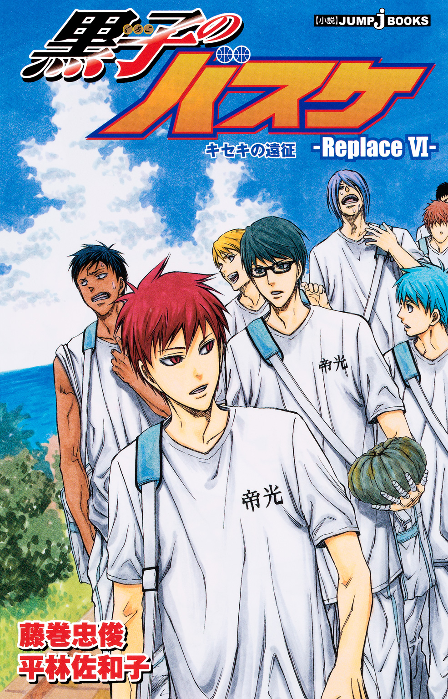
この本は縦書きでレイアウトされています。
また、ご覧になる機種により、表示の差が認められることがあります。
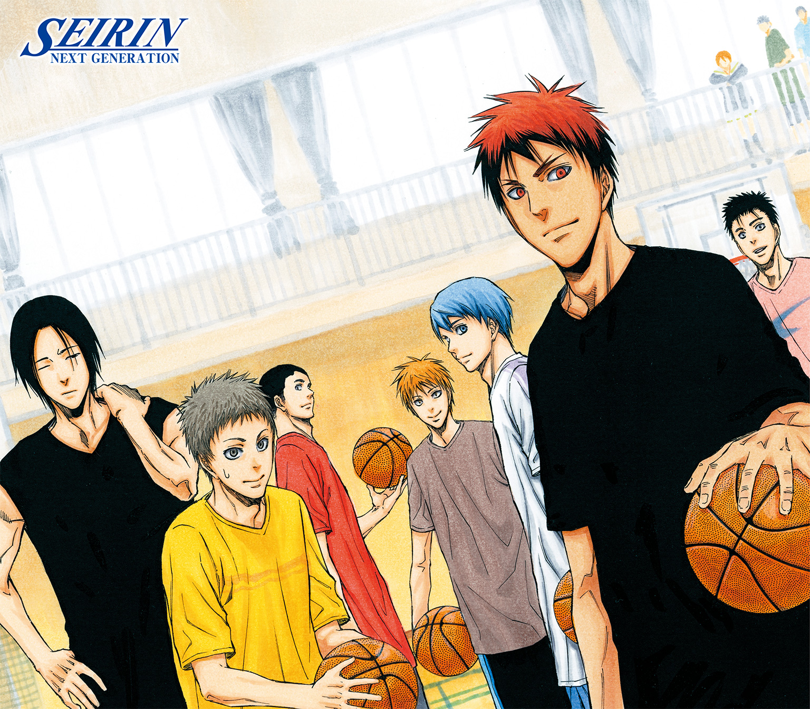
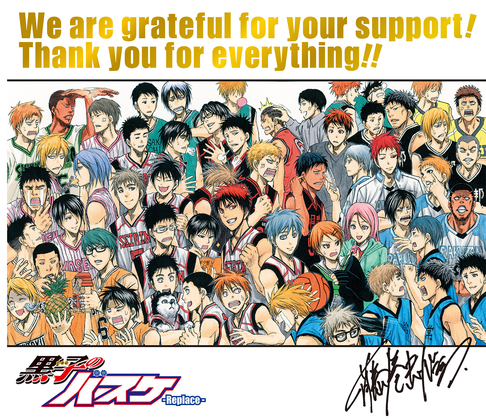
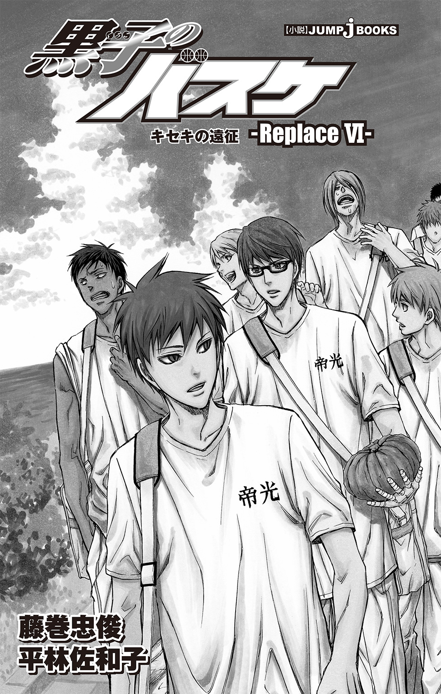
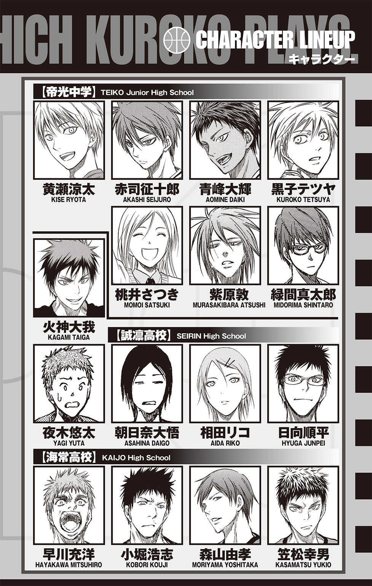
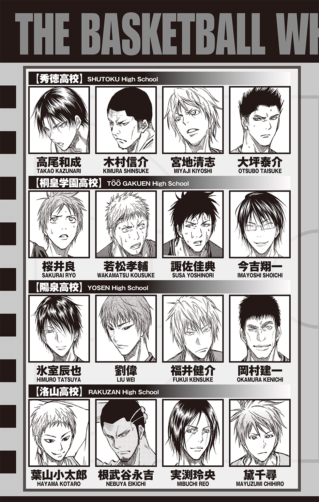
黒子のバスケ-Replace- キセキの遠征
Replace...バスケット用語で「元いた場所に再び戻ること」
★この作品はフィクションです。実在の人物・団体・事件などには、いっさい関係ありません。
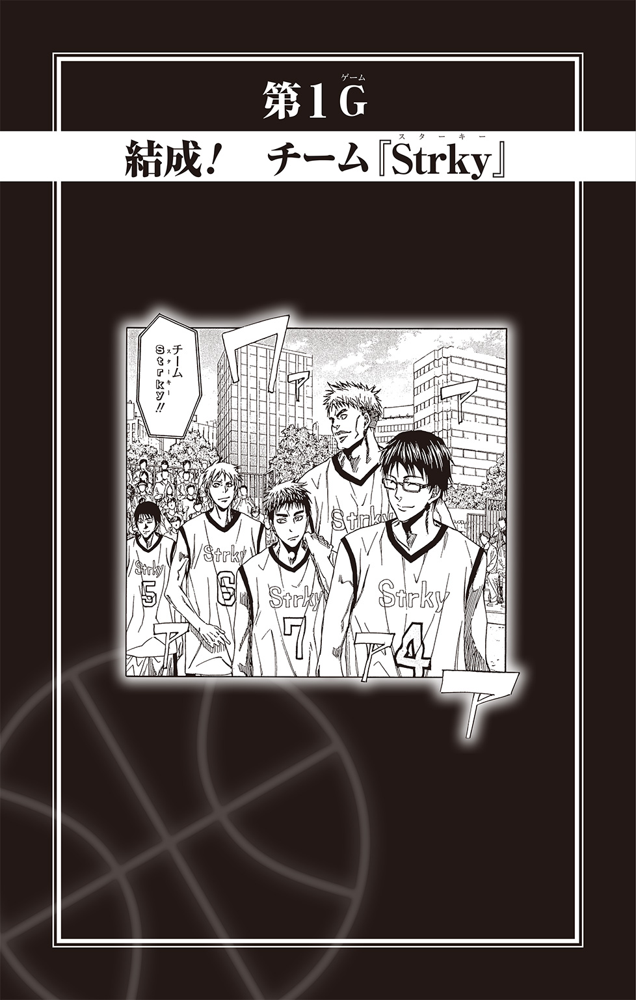
正門からまっすぐに伸びる銀杏並木。その先に建つのは大講堂。銀杏並木の右側には講義棟とまだ足を踏み入れたことのない謎の建物が並び、左側には食堂と研究棟と、やはり足を踏み入れたことのない謎の建物......。
「なんだ、ほとんどの建物に入ったことないんじゃないか」
きわめて大ざっぱなキャンパス紹介に、森山由孝が呆れたように言うと、
「仕方ないだろ、高校と違って大学は広すぎなんだよ」
案内していた笠松幸男は眉間に皺を寄せ、口をへの字に結んだ。
梅雨の合間の晴れ間。まるでそれを狙ったかのように訪れた森山のために、笠松はまだ慣れない大学キャンパスをざっくりと紹介していたところだった。
この春、無事に大学生になったふたりだが、笠松は都心の、森山は郊外の大学へそれぞれ進学し、別々の学生生活を送っている。
笠松は腕時計でもうすぐ二限目の講義が終わる時刻だということを確かめると、森山のほうに振り向いた。
「小堀は二限も講義があるから、食堂で待ち合わせ......って、森山！」
「どうした？」
「どうしたじゃねぇ！ こっち来いっ」
ちょっと目を離した隙に、ベンチに座っていた女子学生に話しかけていた森山を力ずくで引き離し、急いで距離をとると、笠松はキッと睨みつけた。
「手当たり次第、話しかけるなっ！」
「笠松、それじゃあまるでオレが女の子なら誰でもいいという不埒者みたいじゃないか」
「事実そうだろ！ だいたい、話しかけたところで毎回話題に苦労するんだから、少しは学習しろ」
「してるさ。日々の訓練により、話題は以前よりも豊富になった」
「な、なに？」
驚く笠松に、森山は自信満々で言い返す。
「会話はお近づきになる第一歩だからな。日々、話題探しは気をつかっている。高校時代に比べ、格段の進化が見られると思うぞ」
「そ、そうなのか......」
笠松は少し傷ついたような顔をして視線を落とした。「努力、してんだな......」
やけに深刻に受け止めている様子に、森山は首を傾げる。
「どうした、笠松？」
「いや、なんでもない。それより食堂に急ごう。講義が終わると一気に混むからな」
笠松は誤魔化すように先だって食堂へと歩きだし、森山は首を傾げつつもあとに続いた。
食堂で笠松が和定食を、森山はきつねうどんを選んで席に座る。
笠松とは学科は違うが同じ大学に進学した小堀浩志ともすぐに合流でき、三人は久しぶりの再会に話の花を咲かせた。
まるで高校時代に戻ったかのように――まだ高校を卒業して間もないのだが――話していた三人だったが、ある一言によって笠松の表情が変わった。
「星を見に行く......？ なんで？」
「なんでって、趣味だからさ。天体観測が」
天丼を食べる手を止めずに言う小堀を、笠松はしげしげと見つめ直す。
小堀とはそれなりに長い付き合いだ。高校三年間、ともにバスケ部で同じ目標を追っていたので、一緒にいる時間も多かった。なので、小堀の好物が天丼だということも知っているし、騒がしいのが苦手なのも知っている。
だが、趣味が天体観測というのは今日、はじめて知った。
「だから、明日からの週末は都合が悪いんだ。同じ学科のやつらと、ちょっと遠出して星を見に行く予定でさ。誘ってくれたのに悪いな、森山」
小堀がすまなそうに正面に座る森山を見ると、きつねうどんを食べていた森山は芝居がかった様子で肩をすくめた。
「先約があるなら仕方ない。だったら、女子大との合コンはオレと笠松で楽しんでくるよ」
「なんでオレが行くことになってるんだよ！」
笠松が隣に座る森山をキッと睨むと、『残念なイケメン』と称される森山は実にイケメンらしいキメ顔で言った。
「そういう運命だからだ」
「答えになってねぇ！」
思わず箸を握ったままどんっとテーブルを叩いた笠松を、苦笑いの小堀が「まあまあおさえておさえて」と落ち着かせる。
穏健派の小堀に言われては笠松も怒りを持続しづらい。
渋々目の前の和定食に集中しかけたが、思い直した笠松は顔を上げて小堀に尋ねた。
「なぁ......天体観測にいつ興味を持ったんだ？」
「ん？ そうだなぁ、最初は別荘で空を見上げるのが好きだったんだ。そのうち、父親に望遠鏡を買ってもらってから、かな」
「別荘って......おまえん家、すごいんだな」
またも知った小堀の新しい一面に笠松が目を丸くすると、小堀は照れたように「ちっちゃい家だよ」と微笑んだ。
「でも、どうしてそんなこと聞くんだ？ 笠松も星に興味があるのか？」
「そういうわけじゃないんだが......なんつーか、趣味が広くていいなって思ったんだ」
「趣味が広い？」
小堀は首を傾げ、森山は怪訝な顔で「どうしたんだ、笠松？」と尋ねた。
ふたりからの視線を受け、笠松は一瞬躊躇したのちに観念したように話し始めた。
「大学入ってみると、世の中にはいろんなヤツがいるなぁって思わないか？」
「そうか？ まぁ、高校時代とは生徒の数が違うからな。変なヤツがいても不思議じゃないだろ」
さも当然のように森山が言うと、笠松は軽く首を振った。
「そりゃそうなんだが、同じ年齢なのに、知識の量とか技術とか、自分が考えてた基準以上のヤツらがけっこういる気がしてさ。オレとこいつは同じ時間を生きてきたはずなのに、なんでこんなに違うんだって驚くんだよ」
「ああ......それはあるな」
小堀が同意するように頷く。
「一緒に星を見に行く仲間の中にものすごく星が好きなのがいてさ、小惑星も発見したことがあるって聞いたときは、ちょっと次元が違うなって思ったよ」
「だろ？」
共感を得られた笠松は、思わず身を乗り出した。
「オレもこの前、同じ学科のヤツから『ライブやるから』ってチケットをもらったんだ。オレも趣味でギターは弾くけど、そんな本格的にライブ会場で演奏なんて考えたことなかったから正直驚いた。なんつーか、世界の広さというのが全然違うなって」
しかも音楽が趣味だと相手に話すと、その学生は「どんなのが好きなんだ？」と次々とミュージシャンの名前をあげた。それは邦楽にとどまらず洋楽にも及び、笠松は相手の知識量に圧倒されたのだ。
「オレたちは四六時中バスケ三昧だからな。他のやつらは同じ時間を別のことに費やしていると思えば、不思議じゃない」
森山はこともなげに言うが、笠松は「そうなんだが」と続けた。
「せっかく大学に入ったんだ。もう少し見識を広めていいんじゃないかと思ったんだよ」
己の『世界』を構成する三つの要素。
自宅、学校、バスケ。
バスケに出会ってからは、自分の居場所はいつでもこの中のどこかにあった。
そのことを窮屈だと思ったことはないが、もっと己の『世界』を広げてもいいかもしれない。
「つまり、大学デビューだな？」
森山がニヤリと笑う。笠松は思わずむぅっと顔をしかめた。
「そういう浮ついた感じじゃなくてだなぁ......」
「浮ついていようが、なかろうが、意味するところは変わらないだろ？ 笠松は新しい世界に漕ぎ出したいわけだ。うむ、いいことだ！」
「......おまえが言うと、全然いいことに感じられないんだが」
「何を言う！ いいことだぞ、好奇心旺盛なのは！ なぁ、小堀？」
森山が小堀に視線を向けると、小堀は穏やかに頷いた。
「そうだな。たしかにいまの生活は高校時代とほとんど変わらないからなぁ」
しみじみと言いながら、小堀は自分たちの生活を思い返す。
高校時代と同じように大学でもバスケ部に入った笠松たちは、当時と変わらず毎日バスケの練習で一日が終わる。休みはほとんどなく、明日からの週末だけが入部以来はじめての連休という状態だ。
「苦労して大学に入ったなら、何かをはじめるにはいいタイミングだと思うよ」
「そうだぞ、特に笠松は人一倍苦労したんだから！」
にこやかに言う森山に笠松はさらに眉間に皺を寄せた。実は笠松はこの三人の中で最後まで模試の結果が合格圏内に入らなかったのだ。最後の最後、必死の追い上げをした自分を褒めてやりたいと思うが、それをここで引き合いに出されるのはなんとなくおもしろくない。
そんな笠松の心情を察したのか、またも小堀が苦笑しながら言った。
「まぁまぁ、ともかく笠松がもっと世界を広げたいというのはわかったよ。で、何をはじめたいんだ？」
「............何からはじめるといいんだ？」
「え？」
「......正直、そこが悩みなんだ。いったい、何から手をつければいいのか......」
「そ、そうか......」
しゅんと項垂れる笠松に、小堀も困った笑顔を浮かべるしかない。
実際のところ、笠松はこれまでも何度か見識を広めたいなとぼんやり思ってはいたのだが、そのたびに「どの方面に？」という疑問が浮かび、結局ずるずると問題を先送りしていた。
しかし、小堀の意外な趣味に触発されたいま、ここで何かしらのスタートを切りたい。
「何がいいと思う？」
笠松が真剣な顔で小堀を見つめると、小堀は腕組みをし、悩み始めた。
「そうだな......あっ、もともと音楽が好きならそれを深めるのはどうだ？ ギターが弾けるんなら、他にもギターが弾けるやつらと一緒にセッションするとか」
「それはオレも考えた。だが、いまの生活でセッションに費やす時間があると思うか？」
「ないな」
「ないだろう」
「ない」
小堀と笠松は揃って頷き、小堀はこの問題の難しさを改めて思い知る。
なにしろ一日の大半が学業とバスケに費やされるのだ。その合間を縫って何かをはじめようとするのは、なかなかに厳しい。
天丼が冷めるのも気にせず、友人の悩みのために真剣に考えこむ小堀とは対照的に、麵が伸びきる前にきつねうどんを食べ終えた森山は軽やかに言った。
「そんなに悩む必要はないだろう。とりあえず、いろいろ試してみればいいじゃないか。部活のあとの時間を利用してでもできることはあるさ。なにしろオレたちは大学生だぞ？ 夜を活用するという方法もある」
ふふんと笑う森山に、笠松と小堀は「おお......」と小さく感嘆の声をあげた。
高校までは夜は家に帰って食事して寝るのが当たり前だったが、大学生ともなるともう少し夜を自由に使ってもよさそうなイメージがある。
「しかし、夜中にギターの練習に付き合ってくれるやつがいるかどうか......」
「笠松、とりあえずギターから離れろ。もっと簡単にはじめられることはいっぱいある」
自信たっぷりに言う森山に小堀が興味を持って身を乗り出す。
「たとえば？」
「ナンパだ」
「却下！」
電光石火で笠松が言い放つと、森山は訳がわからないというように顔をしかめた。
「なぜだ、いまこそナンパの出番だろう」
「なにが『いまこそ』だ！ どこをどう解釈するとナンパの出番になるんだよ！」
「新しい世界を開きたいんだろ？ おまえがこれまで一番遠ざけてきた世界じゃないか。新たな世界に飛びこみたいなら、そこだろう」
またも自信たっぷりに語る森山に笠松は頭痛を覚えながら反論しようと口を開いたが、小堀の一言にそのタイミングを失った。
「たしかに一理あるな......」
「小堀!?」
何を言いだすんだ、と目を丸くする笠松に小堀は言い聞かせるように穏やかに語った。
「ナンパ自体はまず置いておくとして、笠松が女子と話せるようになるのはいいことだと思うんだ。世界を広げていく中で、女子との接触は避けられない。だったら、まずはその苦手意識を克服するのは、悪いことじゃないだろう？」
「............」
笠松は沈黙した。だがその顔から、渋々ながらも森山と小堀の説が間違ってはいないと認めていることはうかがえる。
「じゃあ決まりだな。今日は部活のあと、ナンパに行こう」
「だから、なんでそうなるんだよっ！」
「すべてはおまえのためだ」
「どう考えても自分のためだろうが！」
「いや、森山は本気で笠松のことを思っているんだと思うぞ」
「騙されるな、小堀！」
ワァワァと言い合っているうちに昼休みは終わり、小堀と笠松は半分近く残っていた昼ごはんを大急ぎで搔きこみ、午後の講義へと走った。

その日のバスケ部の練習後、構内でぶらぶらと時間を潰していた森山と合流し、三人は腹ごしらえをしようと、繁華街の定食屋に入った。
「それで、どうだったんだ森山？ 笠松の講義に潜入した気分は？」
牛丼を片手に小堀が尋ねる。大学は違えど、森山と笠松は同じ学科に進んだ。この時期、他大学ではどんなことを教えているのだろうと森山はこっそり講義を受けさせてもらったのだ。
「いろいろな発見があって大変有意義だったぞ」
森山が前髪をさらりと搔き上げ、涼やかな顔で答える。
「そりゃよかったな。たとえばどんなところが？」
「女子の割合がうちの大学より多い！」
「............」
思わず固まった小堀を無視し、森山は力説した。
「基本的に理系に女子が少ないのは知っていたが、まさかここまで違うとは思わなかった。それを知っていたら、こっちの大学に入学したものを......！」
「......でも、うちの大学を蹴ってまでいまの大学に進んだんじゃなかったか？ 受験会場に運命の女性がいたって......」
小堀が記憶を頼りに言うと、森山はふっと寂しげに瞳を伏せた。
「あれはまさに運命のいたずらだった......まさか、あの一瞬がすべてだったとはな」
「......つまり、入学したらいなかったんだな、その子」
小堀は苦笑し、ふと笠松に目を向けた。
「どうしたんだ、笠松。黙りこくって？ 今日の練習、そんなに疲れたか？」
「いや、そういうわけじゃないんだが......」
笠松は迷うように視線を彷徨わせ、やがて「相談がある」と小さく言った。
「昼間の......あれについてなんだが......」
「あれ？ どれのことだ？」
森山が首を傾げると、小堀がはっと閃いた。
「もしかして、苦手なことを克服するってやつか？」
「そう、それだ......。その、オレ自身いろいろ考えてみたんだが、ここはやはりちゃんと克服しようと思う」
「笠松!!」
「うわっ！」
突如、森山が両手で笠松の箸を持っていた手を摑んだ。驚く笠松に森山は感極まった様子で言った。
「偉いぞ！ よく決意したっ！」
「お、おう......」
「ということは、明日の合コンにも行くんだな？」
「それはない」
「なぜだ!?」
驚愕し、まるで熱湯に触れたかのようにぱっと両手を放す森山。笠松は照れ隠しの仏頂面のまま、「自分なりのペースでトレーニングしたほうがいいと思ったんだ」と答えた。すでにトレーニングの内容も考えているらしい。
笠松が「もしよければその練習に付き合ってほしい」と、つっかえつつも話すのを聞き、森山と小堀はすぐに了承した。努力する友人のために協力は惜しまない。
「それで具体的にはどうするんだ？」
小堀の問いかけに、牛丼を片手に持った笠松は神妙な顔で、
「今日は映画を観る」
と、重大な秘密を打ち明けるように答えたが、トレーニングと言うわりには至って平凡な内容に森山と小堀は揃って首を傾げた。
「なんで映画なんだ？」
「......それはその......じょ、女子を正視するためだ......！」
また、そこからっスか!?
ここに後輩の黄瀬涼太がいれば間髪いれずにそう言っただろう。
しかし、あいにく彼はここにはおらず、そして森山と小堀は黄瀬とは違った感想を抱くふたりだ。
「なるほど、その手があったか......！ たしかに映画に出るほどの美女を自分のペースで眺められるな。おまえにとって映画は最適だな」
森山は顎に手を当て、うんうんと頷き、
「笠松、短時間でよくそんないい案を思いついたな」
と、小堀は感心しきりだ。
友人ふたりの好印象を得て、笠松の顔にべったりと張りついていた緊張が、少しずつ緩んでいく。
「......観る映画は決めてあるのか？」
森山が尋ねると、笠松はしっかりと頷いた。
「ああ。タイトルからして、女子が主役なのは間違いないのを選んでみた。リバイバルらしくて、レイトショーのみなんだ。ただ......」
「ただ、どうしたんだ？」
口ごもった笠松に小堀が尋ねる。笠松は少し迷った末に、ぼそぼそと言った。
「レイトショーを観ると終電がなくなるんだ。森山と小堀はそれでもいいか......？」
「なんだ、そんなことか。もちろん構わないさ、なぁ森山」
と言って、小堀が森山を見ると、
「今日帰ったら、明日の合コンのために話題探しをする予定だったからな。映画を観れば、むしろその話ができるかもしれないし、一石二鳥だ」
森山もにこりと微笑む。
「悪いな、ふたりとも」
申し訳なさそうに言う笠松に、森山たちは「気にするな」と答え、場所をファミレスに移すと、上映開始までの時間を大学バスケ交流戦について熱い議論を交わすことで潰した。
午前零時を大幅に過ぎた丑三つ時。映画を見終えた三人はファミレスへ直行した。
店内は深夜のせいか、かなり空いている。店員に頼んで、比較的中央で窓際ではない席、そしてまわりに客がいる場所へ案内してもらう。
とてもではないが、静かな席に座る気分にはなれなかった。
ボックス席に座った直後、三人は深い溜息をついた。
「......なぁ、笠松。映画は少女の成長物語だって言ってなかったか......？」
小堀が暗い顔で尋ねると、笠松は生気のない疲れた顔で答えた。
「ああ......。タイトルの雰囲気からして、きっとそうだと思っていたんだが......まさか、『貞美』が怨霊の名前だったなんて......！」
明るい成長話だと思って観始めたものが、有名なホラー映画だと気づいたときの衝撃は相当なものだった。
身構える前にはじまってしまったホラーな内容に、三人は女優の顔を正視する、しないの話ではなかった。
「すごかったな、『貞美』の執念......。あそこまで徹底して成仏しないなんて、女性の新たな一面を見た......」
ぞっとしながらも感心する森山に、「怨霊を女としてカウントするなよ」と笠松はツッコみたかったが、その気力もなくテーブルに突っ伏した。
「しばらくは夜道を歩きたくないな......」
笠松が呟くと、
「ああ。何が闇の中にいるかわかったもんじゃない......」
小堀が同意する。森山は組み合わせた両手の上に顎を置き、神妙な顔で言った。
「しかし、こちらが避けたとしても、もしも向こうからやってきたとしたらどうする......？ 気づかぬうちにオレたちの背後で、女の泣き声が......」
「森山ぁぁ！」
なんでいま、そういう話をするんだ、と顔を上げた笠松が森山を睨みつけた直後、
「ヴォォォォォォォォ!!」
背後から強烈な呻き声が聞こえた。
「うわぁぁぁぁ!?」
三人は揃ってボックス席から飛び上がる。その奇妙な呻き声はちょうど笠松の背後のボックス席から聞こえていた。
「な、なんなんだ......!?」
早鐘を打つ胸に手を当てながら、笠松がそっと首を伸ばして様子をうかがってみると、そこには大男がテーブルに突っ伏して泣く姿があった。
「だ、大丈夫ですか......？」
ただならぬ様子に笠松が思わず声をかける。
「ヴォォォ......ぉ？」
呻き声のような泣き声がフェードアウトしていき、男が顔を上げた。
男と目が合った瞬間、笠松たちは目を瞠った。
「あんた、陽泉の......！」
「んぉ......？ なんでワシの......と、あんたらは海常の......」
目に涙をためた状態で笠松を見つめ返すのは、陽泉の元主将、岡村建一であった。
「うぅ......た、たしかにワシは背も高いし、肩幅も広いが......そんな怖がるほどの大きさじゃ......一世一代のこ、こここ......告白が......!!」
聞き手を得た岡村は泣きながら、涙の理由を延々と話した。
時々ループする話を要約すると、東京の大学に進学した岡村は、新天地でこそ彼女を得ようとイメチェンに挑戦。やがて一目惚れした女性に告白をしたのだが、あえなくフラレたのだという。
「規格外とか......!! た、たしかにワシはデカイかもしれん、が！ ヒック......紫原に比べたら、まだまだかわいい......うぅ......」
規格外の選手が規格外の選手を引き合いに出して比べても、それはやはり規格外でしかないのだが、いまの岡村にそれを言ってもはじまらない。
なにより、イメージを変えようとチャレンジした努力をけなしたくはない。
たとえ、岡村の染めた髪が若干微妙に見えたとしても。
「うんうん、おまえは充分がんばったと思う」
森山が岡村の背をぽんぽんと叩いて励ますと、岡村の目からさらなる涙が溢れた。
「わっ、わだってぐれるがぁ!!」
「ああ。新しいことに挑戦する大変さを、ここにいるみんなが充分に理解している」
森山の言葉に、笠松と小堀がしっかりと頷く。
「うぉぉぉぉぉぉぉ......！」
悲しみに加えて、同志を得た喜びにむせび泣く岡村の声はさらに大きくなった。閑散としてはいるが、店内の客の視線が痛い。しかし失恋したときぐらい、存分に泣いてもいいはずだ。それに話を聞くことで、少しでも気が晴れるなら、とことん付き合うのもやぶさかではないと笠松たちは思っていた。
傷心を気遣ってくれる笠松たちに「なんという優しさ......！」と感激した岡村の涙の量がさらに増す。
「うちの後輩とは大違いじゃ......!!」
「後輩に何か言われたのか？」
笠松が尋ねると、岡村はぐすんと洟をすすった。
「聞いてくれるか......？」
「ああ。この際、全部ぶちまけちまえ」
笠松の男らしい言葉に背中を押され、岡村は涙ながらに語りだした。
「東京で......まずはナイスな服を買おうと思ったんじゃ......でも、どこに行けばいいかわからんし......サイズもサイズだから、ほとほと困ってな......。それで、こっちが地元の紫原にメールで聞いてみたんじゃが......」
二つ下の後輩、紫原敦から返ってきたメールは簡潔だった。
『めんどい』
「なんでじゃ!? 万感込めてのＳＯＳに、『めんどい』って!! ワシらサイズの服を探すのがどれだけ大変か、あいつもよく知ってるはずなのに！ だから、あいつが秋田に来たとき、ワシはちゃんと洋服店を紹介してやったんだぞ!? なのに『めんどい』って！ しかも、ワシが服を探しとることが部内に回ったらしくて、別の後輩からは『まずは整形アル』とか......!! 顎が割れてるってそんなにダメかぁぁぁぁ!?」
グォォォォォ......と岡村は再度泣き崩れる。
結局のところ、一つ下の後輩で現バスケ部主将の氷室辰也がさりげなく紫原から聞き出してメールで教えてくれたおかげで、洋服問題はひとまずの解決をみた。しかし、その話がどこをどう回ったのか、同学年の福井健介に伝わり、彼からは、
『後輩に変なこと聞いてんなよ。ゴリラは裸が一番似合うぞ』
と散々なメールが届いた。
「東京砂漠よりも、秋田のあいつらのほうがよっぽどドライじゃっ!!」
思い返したせいで怒りが再燃した岡村に、小堀が「まあまあ」と優しく声をかける。
「それでも最終的に店がわかったなら、いいじゃないか。先輩思いの優しい後輩だと思うぞ。むしろ、本人を目の前にして『規格外』と言い放つ人よりは全然......」
「小堀!!」
笠松の慌てた声に、小堀はハッと口をおさえた。
しかし、時すでに遅く。
「うぉぉぉぉぉぉぉぉ!! なぜじゃぁぁ、ワシの何がいけなかったんじゃぁぁぁ!!」
フラレたことを思い出した岡村は雄叫びのような泣き声を再度あげた。
森山はやれやれと肩を落とし、小堀を横目で見る。
「小堀......さりげなく傷をえぐるな」
「すまん、慰めたつもりだったんだが......」
泣きやまぬ岡村をあの手この手で慰め、ときには溢れる思いを吐き出させ、四人の夜は更けていき......やがて朝となった。
初夏とはいえ、早朝は冷える。始発に乗って目的の駅に降り立った笠松は、ぶるりと肌を震わせた。
駅に降り立ったのは笠松と岡村だけだ。土曜日に予定のある森山と小堀を先に帰し、笠松だけが岡村を送ろうと、岡村が住むアパートの最寄り駅へとやってきていた。
「大丈夫か？」
ようやく涙の涸れた岡村が、申し訳なさそうに笠松に尋ねた。
一晩中、泣いたり喚いたりしていたのに、岡村の声はまったく嗄れていない。声帯も規格外なスタミナを持っているんだなと思いながら、笠松は軽く首を振った。
「平気だ。それより、おまえのアパート、駅に近いのか？」
「ああ。徒歩五分ってところじゃ。部屋に着いたら、ココアでもいれよう」
「......へ？」
「あったまるぞい。ワシのいれたココアはちゃんと練って作るから、好評なんじゃ」
実は甘党の岡村にとってココア作りはごく当たり前のことだったが、はじめて聞いた笠松は驚き、目を丸くした。
「いれるのか、ココアを!? 自分で!?」
「一人暮らしだからな。大抵のことは自分でする。自炊は大学入ってからだが、楽しいぞ」
「自炊......。なるほど、そういう新しい世界もあるな......」
ぽつりと呟く笠松に岡村が「なんじゃぁ？」と聞き返した。
思わず漏らした一言を聞かれ、笠松は恥ずかしさに頭をかいた。だが、ついさっきまで岡村の気弱な面を散々見てきたことを思うと、自分だけ取り繕うのもばかばかしい気がしてくる。
笠松は小さく溜息をつくと、口を開いた。
「いやその......オレも大学に入って、少し......新しいこともはじめてみたいって思ったんだ。もうちょっと自分の世界を広げたいっていうか。でも、意外とうまくいかないもんだな。正直、自分がこんなに不器用だとは思わなかった」
力なく笑う笠松の肩を、前に回った岡村は両手でガシッと摑んだ。
「わかる！ わかるぞ！ 難しいよな、チャレンジするってのは！ 花の大学デビューがこんなにハードじゃとは思わんかった！」
「いや、別に大学デビューってほど、気合いを入れてるわけじゃ......」
「じゃが安心せい！」
岡村は笠松の左隣に並ぶと、右手でぐっと笠松の右肩を摑み、左手で左手を握りしめた。
「ひとりで困難な道でも、ふたりなら登りきれる！ モテる日までともに励もう!!」
「だから、オレはモテたいわけじゃないんだって！」
笠松がついに叫んだ直後。
「ほな、変わるキッカケ、教えたろか？」
涼やかな声が、人気のない通りに響いた。
「誰だ？」
突然の第三者の声に笠松は訝しみ、声のした方角――少し先のブロック塀を見遣った。そこには人影がもたれかかるようにして立っている。
「どーも、お久しゅう」
人影が軽く手をあげる。眼鏡をかけた背の高い男だ。眼鏡の奧で笑うように目を細めているが、その気配は鋭い。
「おまえ、桐皇の......!!」
岡村が見覚えのある顔に目を丸くした。立っていたのは、桐皇学園の元主将、今吉翔一であった。
「あんた、ワシのアパートの前で何しとるんじゃ!?」
岡村が驚いて尋ねた言葉に、笠松も驚く。よく見れば、今吉のもたれているブロック塀の内側にはいかにも学生用といったアパートが建っていた。
「ちいとばかしおもろい話があったんで、あんたを待ってたんや。まさか一晩待つとは思わんかったけど、おかげでいい拾いもんができた」
今吉はにぃっと笑うと、笠松へ視線を向けた。うっすらと細めた目が、何かを企むように輝いている。思わず警戒する笠松に、今吉は穏やかに言った。
「この話、断らんほうがええで？」
『今日、この地図の場所に十二時集合や。そしたら、あんたらが欲しがってるもん見つかるで』
今吉の言葉に従うのは釈然としない思いがあったが、結局はあの男が何を考えているのか知りたいという好奇心が勝った。
岡村のアパートで軽く仮眠を取った笠松と岡村はふたり揃って、今吉に渡された地図に描かれた場所へと向かった。
着いてすぐに、そこが何の場所かわかった。
「なんじゃ、ストリートバスケの大会か」
気負ってやってきた岡村は気の抜けた声で会場の立て看板を読みあげる。広い公園の一角にあるバスケコートで行われるらしく、周囲は参加者や見学者で溢れている。高校時代、草試合は原則禁止されていた岡村にとって、この手の会場に来るのは久しぶりだが、慣れ親しんだバスケの雰囲気に緊張が一気にほどけていく。
「ストバス会場に呼び出して、どういうつもりだ......？」
笠松が首を傾げていると、背後から「おはようさん」と声がかかった。
振り返ると、予想通りに今吉が立っており、予想外なことにさらに見知った顔がふたり。
「先に紹介しとくわ。とは言っても知っとるとは思うけどな。こっちが、元秀徳の宮地清志。スモールフォワードでスピードは折り紙付き。で、こっちが元洛山の樋口正太。前はマネージャーやったけど、大学ではプレイヤーに復帰や」
今吉に紹介された宮地と樋口が軽く会釈する。三人とも大学は違うが、大学バスケ部合同の新人歓迎会（という名目の宴会）で再会したという。
「ほな、全員揃ったことやし、行こうか。受付が終わってまうわ」
「ちょ、ちょっと待て！」
慌てて引き留めた笠松に今吉が片眉を上げる。
「なんや？」
「受付ってなんのことだ？ まさか出場するのか？」
「そりゃそうや。ここまで来て、仲良うピクニックするつもりか？ まぁ、どうしてもって言うなら、止めへんけど」
「話を逸らすなよ。おまえ、今朝言ったこと忘れたのか？ ここに来れば、オレたちの欲しいものが見つかるって言ってたよな？」
笠松の真剣な眼差しに今吉がふと微笑む。
「ああ、言うた。ふたりの悩みがいっぺんに消える、ナイスなイベントやで、これは」
「どうやって消すんじゃ？」
岡村が疑わしげに尋ねると、今吉は大会の立て看板をひょいと顎でしゃくった。
「この大会はちょっとしたイベントの予選会も兼ねとる。ここで優勝したら、アメリカの強豪チームと試合ができるって寸法や。おもしろそうやろ？」
「そりゃそうじゃが......それとワシの悩みとどう関係しとるんじゃ」
「優勝したら、女子にモテるで」
「なっ!?」
意表を突かれた岡村は絶句し、身を乗り出す。その巨体に今吉をすっぽり覆い隠すようにして、岡村は尋ねた。
「根拠は!?」
「女はいつだって強い男に弱いもんや。この大会にはプロも参加するって噂やし、そいつら倒して一番強いってこと証明すれば、女心もイチコロ間違いなし」
「イチコロ......！」
岡村の瞳に闘志が宿った。
「これはやるしかないようじゃのう......！」
傷心により弱々しい印象だった表情に生気が戻り、勇ましさがみなぎっていく。岡村は改めて樋口と宮地に挨拶をし、受付へと率先して歩きだした。
堂々と歩いていく背中を見つめて、笠松は溜息をつく。岡村は信じているようだが、優勝して強さを示すのとモテることは別問題のように思える。
十中八九、今吉が理想とするチームを編成するための、こじつけなのだろう。
だが、帰ろうという気にはならない。口車にのせられたことは癪に障るが、海外の選手とプレイできるかもしれないというチャンスに、沸々と胸の奥で闘志が燃えあがっているのを感じる。
昨日からずっと感じていたモヤモヤよりもずっと――
「いまのほうがワクワクしとるやろ、自分？」
今吉が笠松の顔を覗きこみ、ニヤリと笑う。
見事に胸のうちを当てられ、笠松はむっと睨みつけた。
「どういう意味だ？」
「そう睨むなて。言うたやろ？ ここならあんたらが欲しがってるもんが見つかるって」
「オレは別にモテたいと思っちゃいない！」
「知っとる」
「え？」
笠松は今吉を見つめ返した。てっきり、からかっているのだと思ったが、口角を上げて笑う今吉からは冗談の気配は感じられない。
「探しとったんやろ？ 己の世界を広げる方法」
笠松は無言で肯定した。照れくさくても否定する気は起きない。それよりも、今吉が何を言うのか知りたい。
「世界を広げたいって思うから、気負ってしまうんや。世界ってのは、深めんと」
「深める？」
「自分の興味あることをとことん深める。深くなればなるほど、知らなきゃあかんことが増える。そうしているうちに、世界は自然と大きくなっとる」
――深く深く根を張り巡らせて、やがてその木は大きな実をつける。
今吉の言葉はまるで水のようだった。笠松の中でカラカラに乾き、焦っていた部分に音もなく染みこんでいき、平常心を取り戻させる。
笠松が意味を理解したことを察した今吉は、ニッと笑った。
「あんま、よそ見しなさんな。あんたみたいな人が時間無駄にしとるのは、もったいなくてガラにもなく口出したくなる」
と言うと、岡村たちのあとを追うように歩きだす。
その背中を笠松はしばし見つめていたが、やがてふっと笑い、今吉に並んで歩いた。
「まさかアンタに励まされるとはな」
「出血サービスや。貸しはでかいで」
「今日のゲームで払ってやるよ。優勝するつもりなんだろ？」
「大きく出るなぁ。まぁ、そういうことやからよろしく」
不遜ともいえる大胆な発言だが、ふたりには自信があった。
特に笠松は自信だけでなく、わくわくして止まらない。あの今吉が選んだメンバーと共に戦うなんてそうそうないことだ。
この際、とことん深みにはまるしかないだろう。
「おーい、今吉」
先に受付に着いた岡村が、口元に手を当ててこちらへと大きな声で言った。
「チーム名は何にするんじゃ？」
「ん？ そやなぁ......」
今吉が顎に手をついて思案する。笠松もこのチームに相応しい名前はなんだろう、とメンバーの顔を眺めているうちに、ひとつの単語が浮かんだ。
「Strky......はどうだ？」
笠松が言うと、今吉がおやと片眉を上げ、ついでニヤリと口角を上げた。
「ほぉ、ええやん。ワシらにぴったりや」
「そうなのか？ どういう意味なんじゃ？」
岡村は首を傾げて尋ねたが、
「ああ、なるほど」
「いいんじゃないか」
と、宮地と樋口はすぐに意味を理解し、賛成した。
「え、え!? なんじゃ、ワシだけわからんのか!? どんな意味をこめたんじゃ、笠松！」
焦った岡村がズゴゴゴ......と笠松に詰め寄る。
熱い視線と熱い体温に詰め寄られ、笠松は苦笑した。ここまで真剣に聞かれると、かえって話しにくい。
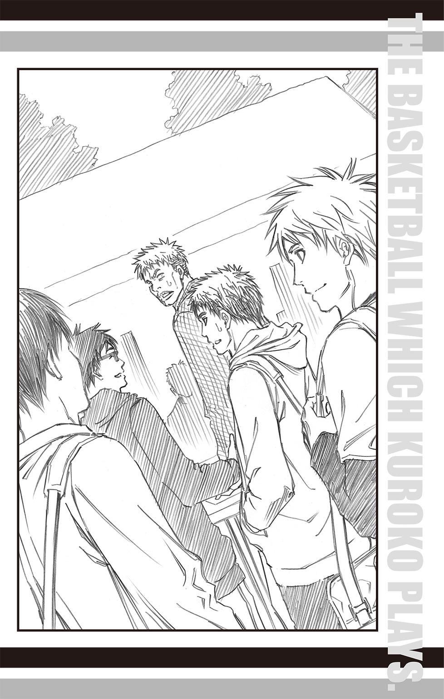
秀徳、桐皇、洛山、海常、陽泉。
それぞれの出身校のイニシャルを並べただけなのだから。
だが高校の名は、自分たちが三年間背負ってきた大事なものだ。
思い入れがある。あるが、それを順序だてて説明するのは気恥ずかしい。
言い渋る笠松にさらに岡村が詰め寄っていく。その様子を楽しげに見つめていた今吉が言った。
「せやなぁ、ヒントとしては、気合いが入る名前ってとこかな」
「気合いぃ!?」
岡村がさらに首を傾げる。
「そうだな、気合いが入る。悪くないだろ？」
笠松は笑った。
そう、悪くない。この空気も、チームも、チーム名も。
それらをとことん味わい尽くした先に、笠松の新しい世界が広がる。
笠松は自分に聞かせるように呟いた。
「バスケバカも悪くない」
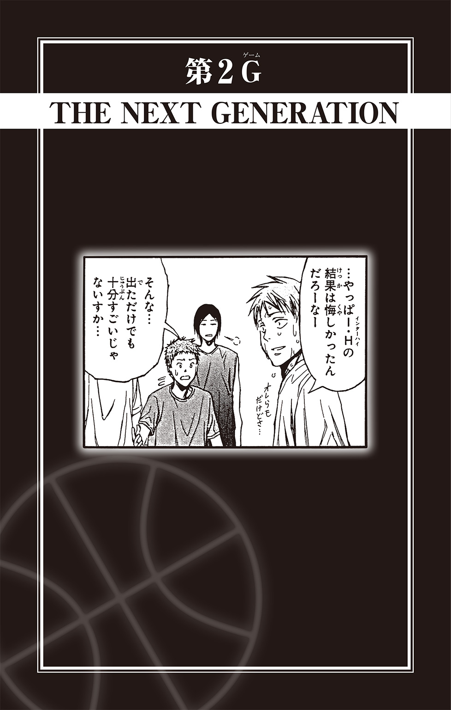
六時十五分。日の出前のラウンジは静かだ。
壁一面がガラス張りの窓辺に椅子を寄せ、木吉鉄平は薄闇につつまれたロサンゼルスの町並みを眺めていた。
病院の八階に位置するラウンジからは、今日という新しい一日をはじめようと動きだす人々の生活の灯りが見える。
ひとつひとつの灯りの下で、それぞれの一日を準備する人々がいることを想像すると、なぜか胸が温かくなる。
木吉は柔らかな眼差しを眼下に向けたまま、手の中にある愛用の携帯電話を指先で撫でた。
六時二十分。携帯電話が着信を受けて軽く振動する。約束の時間ぴったりにかかってきた電話に木吉は微笑むと、相手の名を確認することなく繫いだ。
「リコ、おはよう」
「おはよう、鉄平。といっても、東京は夜だけどね」
電話越しに、相田リコの明るい声が聞こえた。
木吉が膝の手術のために渡米してから数か月。月に何度か、リコはこうして電話をかけてきてくれる。
「どう？ リハビリは」
「まずまずというところだ。まだ反応が鈍いのが気になるけど、担当医の話では順調らしい」
「そっか、よかった。でも、あんまり無理しちゃだめよ？ お医者さんの言いつけを守らないで無理なリハビリして悪化する人、多いんだから」
「ああ、わかってる。それよりリコ、そっちはどうだった？ 今日はクラブ勧誘の日だったんだろ？」
木吉の質問に、自室で電話をしていたリコはニマァァと笑みを浮かべた。
この春、リコたち誠凛高校バスケ部メンバーは揃って進級し（約一名、留年しそうになった者もいたが）、今日は全校あげての新入生へのクラブ勧誘日だったのである。
バスケ部も去年と同様に小金井を筆頭として積極的に新入生勧誘を行った。
その結果がいま、リコの眼前にある。どどん、と積まれた入部届の山だ。
去年とは明らかに違う結果に、リコもにこにこを通り越して、ニヤニヤとした笑みが止まらない。
「すっごい大漁だったの～！ 小金井くんたちががんばってくれたおかげもあるけど、やっぱりウインターカップ優勝した効果はあなどれなかったわ～」
「そりゃぁ、よかった。リコから見て、期待できそうなヤツはいたのか？」
「何人かはね。仮入部でへこたれずに入ってくれるといいんだけど」
リコは手元の入部届をぱらぱらとめくった。
その数、ざっと四十は超えている。いまの部員数の四倍にあたる人数のうち、果たして何人が残ってくれるのか。
「去年の残留率を考えると、けっこう入ってくれるんじゃないか？」
「やっぱりそう思う!? うふふ、育て甲斐があるわ～！ 日向くんたちも、予想以上の希望者にかなりやる気を出してるのよ♪」
電話の向こうから聞こえるリコの楽しそうな声に、木吉は微笑んだ。
いつの間にか東の空が明るくなっている。
朝日が昇り、一日がはじまれば、今日もまた過酷なリハビリが開始される。
けれどリコの話を聞いたおかげで、木吉は俄然やる気がわいてくるのを感じていた。
「オレも早く戻れるようがんばるよ。さっそく先生に、もっとハードなリハビリを頼んでみるぞ！」
「だからやりすぎはダメっつってんだろ!!」
リコの電光石火でのツッコミに、木吉は「あ、そうだった」と頭を搔いた。
クラブ勧誘日の翌日。誠凛高校バスケ部は仮入部初日を迎えた。
掃除当番の関係で少し遅れて体育館へとやってきた二年生の火神大我はぽかんと口を開いた。
「すげぇ......」
「壮観ですね」
一緒に来た相棒の黒子テツヤも目を見開き、珍しく驚いている様子だ。
それほどに入部希望者の人数は多かった。
前日、リコから聞いていた人数よりもさらに十人ぐらいは多いようだ。
「とりあえず、今日の入部希望者はこれで全員ね？」
一列に並んだ新入生の前でリコがほくほく顔で微笑む。
新入生たちは女子の先輩の登場に、
「え、女マネ？」
「わりとかわいいかも......」
と、ざわついたり、ドギマギしたりすることはなかった。
仮入部の新入生たちにとって、『誠凛を全国へ導いた監督は女子生徒』という情報は当然知れ渡っていたからだ。
代わりに、リコを見つめる新入生たちの顔には、
『この人が名監督の......！』
という、尊敬の念が表れている。
「なんか、去年のオレたちとは全然違うな」
「そうですね」
火神と黒子が揃って見つめる新入生たちは、一様に緊張した様子でリコを見つめている。全員、名監督が語る言葉を聞き逃すまいと全身が耳状態だ。
そんな彼らに、リコはにっこりと微笑んで宣言した。
「というわけで、全員服を脱げ!!」
「え？ ............ええーっっ!!」
唐突な脱衣命令は、緊張していた新入生の脳内で意味が理解されるまでにしばらくかかり、一拍おいたあとにようやく驚きの声があがった。
人数が人数なだけに、過去に例を見ないほどの驚愕の声だ。
「この反応は去年と一緒ですね」
「だな」
黒子と火神はようやく垣間見られた新入生たちとの共通点にうんうんと頷いた。
半裸となった新入生を丹念にチェックするリコの様子を見守っていた日向順平はぼそりと呟いた。
「壮観だな......」
「日向、その感想はちょっと問題じゃないか？」
日向の隣に立っていた伊月俊が軽く眉を寄せる。「半裸男子を見て、壮観って......」
「そういう意味じゃねーよっ！ 人数のことだ、人数！」
「ああ、そっちか」
軽く微笑んだ伊月の表情から、自分をからかっていたことを察して日向は口を尖らせた。
「わかってるなら、言うなよ」
「あはは、ごめんごめん」
そう言うと、伊月は改めて新入生たちを眺める。
「しかし、こんなに集まるなんて。ここまで知名度が上がってるとは思わなかったよ」
「そりゃあんだけやれば、知名度も上がるだろ......」
日向はここ数か月の慌ただしさを思い返し、やれやれと息を吐いた。
誠凛高校バスケ部がウインターカップを制し、全国制覇をしたのは昨年の暮れ。
バスケ部にとっても創部二年目の快挙だが、学校側にとっても創立二年目にしてはじめての偉業である。優勝の報告を受けた学校側は大いに喜び、年末年始の休暇中であるにもかかわらず、すぐさま動いた。
そして冬休み明けの登校初日、日向たちが目にしたのは、正門から最初に目に入る校舎にででんっと掲げられた『祝！ バスケットボール部全国大会優勝』という横断幕であった。
日向たちはその横断幕の下を、嬉しさと照れくささを感じながらもくぐった。
教室に入れば、今度は興奮したクラスメイトたちによる質問攻めが待っていた。バスケ部員がいるクラスには、あっという間に黒山の人だかりができた。
特に陽気で社交的な小金井慎二のまわりには人が多く集まり、親友で無口な水戸部凛之助の分も解説していたので、冬休み明けの朝礼がはじまる前に彼の声は嗄れていた。
「オレ、人生で一番のモテ期が来たみたい！」
朝礼のために講堂へと移動する中、小金井はガラガラの声で日向に語った。
それはモテ期じゃないだろう。日向は内心思ったが、嬉しそうな小金井の様子に、口には出さずにそっと胸にしまいこむ。
朝礼では当然のことながら、校長からバスケ部の優勝が報告された。
生徒たちからは歓声と拍手、口笛があがり、バスケ部員は全校生徒の前で表彰された。
繰り返される質問に答えるのは大変だったが、誰もが自分たちのことを祝福してくれている様子に、バスケ部員たちは改めて優勝した事実を嚙みしめた。
もちろん祝賀ムードはそれだけではなかった。
昨年末から続く、新聞社からの取材、月刊バスケットボールマガジン、通称『月バス』からの取材、地元タウン誌の取材、お昼の校内放送への出演などなど。
バスケ部員は完全に時の人となった。
はじめは嬉しさと物珍しさが勝っていたが、続く取材と次々と発行される誌面に段々と気恥ずかしさが勝ってくる。
極めつけは校内新聞だった。
伊月はどこか遠い目をして言った。
「新入生がオレらに詳しいのも、校内新聞のおかげだよなぁ......」
「それを言うな......！」
日向は伊月の意図するものを察し、逃れるように項垂れた。しかし、伊月はちらりと日向に視線を向けると、
「『名将武田信玄のごとく！ 主将・日向順平、まさに風林火山！』」
「うわぁぁぁぁ！」
抑揚の効いた伊月のフレーズに、日向はがばっと頭を抱える。羞恥のあまり、耳まで真っ赤だ。
「新聞部の考えたキャッチコピー、日向のが一番すごかったな」
「だからそれを言うなって！ ......新聞部のやつら、なんであんなに話を聞き出すのがうまいんだ......」
「まぁ、それが仕事だから。オレも隣で取材受けてて、日向がいつの間にか信玄について熱く語りだしたのを見たときは、新聞部の話術に脱帽したよ。でもまさか、選手紹介のキャッチコピーに使うとは思わなかったけど」
新聞部作成のバスケ部特集特別号は模造紙五枚分の力作だった。
各試合結果はもちろんのこと、試合内容も事細かに書きこまれ、選手紹介には各選手の個性にそったキャッチコピーまで添えてあったのだ。
「伊月だって『イーグルアイがいい具合！』って書かれてたろ！」
「あれはオレが自分で考えたんだ。なかなかいいと思わないか？」
伊月が胸を張るのを見て、日向は項垂れた。同じようなキャッチコピーでもダメージを受ける人、受けない人がいるのである。
「あのとき調子にのってべらべらしゃべった自分を殴りたい......！」
「そう自分を責めるなって。おかげで興味を持ってくれた新入生がこんなにいると思えば、安いもんじゃないか」
伊月は慰めるように日向の肩をぽんぽんと叩いた。
新聞部の力作はいまも校内の掲示板に張られている。かの横断幕も新年度がはじまるまで掲げられていたので、当然のことながら新入生たちも誠凛を受験したときに目撃しており、「あの横断幕のバスケ部」が紹介されているということで、校内新聞はいまでも興味深げに新入生に読まれていた。
そのような経緯が、大量の入部希望者の一因になっていることは間違いないだろう。
若干の意味不明なキャッチコピーでも興味を持ってもらえたなら御の字だ、と伊月は日向を励ましたつもりだったのだが、首まで赤く染めた日向が顔を上げて言ったことは、伊月の予想の上をいった。
「......あのキャッチコピーだけでも、いまから変えてくんねぇかな。オレが信玄とか、畏れ多すぎる......!!」
「あ、気にするのそっちなんだ」
日向の切なる声に伊月は苦笑いし、リコの新入生チェックが早く終わらないかなぁと思考を切り替えた。
一方、火神たちもリコの新入生チェックが終わるのを軽くストレッチをしながら待っていた。
「オレらもとうとう先輩かぁ、ドキドキするなぁ」
床に足を伸ばして座り、背中を黒子に押してもらいながら降旗光樹がしみじみと言った。
「オレはドキドキよりも、実感わかないって感じだな」
降旗の隣に座った河原浩一が言うと、「オレもそっちだな」と河原の背を押していた福田寛が同意する。
「一年って本当にあっという間ですよね。ついこの前に入学したと思ったのに、もう後輩が入ってきちゃうなんて」
黒子が降旗の背をぐいぐいと押しつつ言う。
「ふーん、そういうもんか......？」
火神はボールを腰のまわりで回しながら首を傾げた。
部活というものに縁遠かった火神にとって、後輩の存在というものがピンとこない。ストリートの頃は初心者が入ってくると、手の空いている者が適当に教えたりしていたが、先輩後輩という関係とは微妙に違っていた......ように思う。この一年で先輩というものはわかったが、後輩となるとまたもや未知の領域だ。
「オレ、後輩にちゃんと教えられるかな......」
降旗が不安げに言うと、
「フリは後輩相手にも緊張しそうだよな。『お、お、おちゅちゅけっ』みたいな」
福田はからかうように言ったのだが、降旗は「ありうるっ！」と顔を青ざめさせた。
「ど、どどどど、どうしよっ！ オレ、先輩にふ、ふ、ふだわしくないかも！」
「お、落ち着け、フリ！ まだ何もはじまってないんだ！ いまからテンパってどうする！」
河原が慌ててフォローするが、小心者の降旗の脳内ではいろいろな不安要素が浮かびあがってきているらしく、おろおろと震えた。
そんな降旗の背をぽんぽんと叩き、黒子は言った。
「大丈夫です。なんとかなりますよ」
「ほんとに？」
「ボクなんて、最初の教育相手は黄瀬くんでしたけど、だいたいなんとかなりました」
「そ、そっか......」
「小物扱いされましたけど」
「えぇ!? 小物って、めちゃくちゃナメられたってこと!?」
「はい。正面切ってチェンジと言われました」
「チェンジ......」
「いまの黄瀬からは想像つかねぇな」
火神が知る『キセキの世代』のひとりである黄瀬涼太は、はじめから黒子を慕っていた。あの人懐っこさで構われるのも面倒だが、あの面でナメたことを言われるのはムカツク。
「後輩って面倒だな......」
火神がうんざりした声で言うと、やはり黒子は淡々と言った。
「大丈夫です。きっと後輩とも仲良くやっていけますよ」
「なんで言いきれるんだ？」
眉を寄せ疑わしげに尋ねる火神に黒子は答えた。
「誠凛バスケ部の良さに魅かれた人が入ってくるんです。仲良くなれます」
「そういうもんか......？ つか、ウチの良さってどんなとこだ？」
火神の疑問に降旗たちは思わず顔を見合わせる。日々、どっぷりバスケ部につかっているので、改めて言われると、何が一番の良さなのか、出てこない。揃って「えーっと」と頭を悩ませていると、新入生のチェックを終えたリコが全員に集合の合図をかけた。
結論として、黒子の予想は外れた。
「なんなんだよ、あの一年！」
練習後の部室で火神がＴシャツを脱ぎながら吼えた。
「まぁまぁ、落ち着けって」
小金井がなだめるように言うが、その声はややおざなりで、火神をなだめることはすでに諦めている節があった。
というのも、火神が怒りを覚える気持ちもよくわかっていたからである。
「たしかにあの態度はカチンとくるよな」
日向が着替えながら言うと、「そーっすよね!!」と火神が仲間を得られたとばかりにまたも吼えた。
「マジ、なんなんだよ！ あのアサメシ野郎!!」
「アサメシじゃありません、アサヒナです。朝日奈大悟くん」
黒子が丁寧に訂正した。
朝日奈大悟はリコが注目していた一年生のうちのひとりだ。
身長一八〇センチ。体重七五キロ。引きしまった身体に、長い手足が特徴的な生徒である。
バスケ経験者で、他県から全中にも出たことがあるという彼は、当初無口なタイプだと思われていた。というのも、クラブ勧誘のときにバスケ部のブースに来た際も、必要最低限のことしか話さなかったからである。また、まるで能面のような無表情さも手伝い、無口なイメージが先行していた。
そんな彼が口を開いたのは、一年から三年まで全員でランニングを終えたあと、二、三年は通常練習、一年は体力づくりのための筋トレをしていた途中だった。
腹筋、背筋などの筋トレ五セットのうち、三セットを終えたところで朝日奈は立ち上がると、筋トレの号令をとっていたリコに言った。
「オレ、あと二セットぐらいは普通にできるんで、基礎練に混ぜてくれませんか」
「え？」
リコは目をぱちくりとさせた。まさか新入生からそんなことを言われるとは思わなかったのだ。他の一年生たちも、まさか名監督に意見する者が現れるとは思わず、筋トレの動きを止めてふたりに注目した。
「でもね、これは一年生の体力づくりと測定も兼ねてるから、フルセットやってみない？」
リコが言うと、朝日奈は小さく息を吐いた。
「測定なんか別に必要ないでしょ」
「どうして？」
リコの問いかけに、朝日奈は能面のような顔にはじめて小さく笑みを浮かべた。
呆れて話にならないというような笑み。
「さっきの裸チェックで全部わかったんじゃないんですか。ちゃんと見るって言うから、脱いだんですよ。なのに、わざわざ裸にさせてさらに測定するとか面倒じゃないですか。ちんたら無駄なことすんの、やめませんか」
堂々と、しかも嘲りの表情つきで刃向かう朝日奈の姿に新入生たちは青ざめ、異変を察知して注目していた上級生たちの空気もピシリッと嫌な音をたてて凍った。
リコは黙って朝日奈を見つめた。
それを彼女が判断に迷っていると思ったのか、朝日奈はさらに続けた。
「それに、オレなら即戦力になれますよ。いまのベンチを温めてる人たちよりはうまいはずだから」
と言って、朝日奈は視線をコートへ向ける。その先には降旗たち、二年生三人組の姿があった――。
「あんだけ堂々と生意気な口を叩いたのは、火神ぐれぇだな」
朝日奈の態度を思い出した日向が呆れたように言うと、火神がぎょっとした顔で振り向いた。
「主将!? オレはあんなこと言わねぇっすよ！」
「言わなくても、態度がそう語ってたよな」
伊月が一年前を思い出して苦笑すると、土田聡史が少し困ったような笑みを浮かべて、
「特に黒子に対してはかなり過敏だったんじゃなかったっけ？」
と、黒子のほうへ振り向いた。
「そう言えば、そうでしたね」
「黒子、おまえまで！」
「でも事実ですから」
「そうだけど！ オレはあそこまで酷くなかった！ ......はずだ！ くそっ、なんなんだよ、アイツ！ 舐めた態度とるわ、オレにガン飛ばすわ！」
「えっ!?」
と、火神と黒子以外のメンバーが驚きの声をあげる。
人間観察に長けている黒子は「すごい見てましたね」とそれが事実であることを認めた。
「いったい、彼に何をしたんですか？」
黒子が呆れ交じりに言うと、火神は心外だというように吼えた。
「なんもしてねーよっ！ あいつが勝手にガン飛ばしてくんだよ！ しかもオレにだけ、練習中ずっと！」
朝日奈の直談判を受けたリコは何を思ったのか、彼を二、三年生の基礎練に合流させた。
本人が言うだけあって、朝日奈の腕前はなかなかのものだった。パスもシュートも安定しており、降旗たち二年生よりたしかにうまい。
そして暇さえあれば、火神をじっと睨みつけていた。
「ケンカ売ってんのかと思ってこっちが睨み返すと、あからさまに視線を逸らすしよ！ 正々堂々、言いたいこと言えよ！」
火神は吼えるが、言ったが最後、即乱闘だろうなと誰もが思った。それは困るので、今日のところは結果オーライだろう。
「まぁ、なんだ。いろいろあるかもしれんが、揉め事だけは起こさないようにな。新学期早々、暴行事件で部活停止とか笑えねぇから」
「............」
日向に釘を刺され、火神はむすっとしたまま荒々しくロッカーを閉める。
そのまま、どかどかと足音荒く部室を出ようとする火神に、着替え途中の降旗が声をかけた。
「あ、火神、ちょい待って」
「あぁ!?」
火神が苛ついた顔で振り向くが、呼び止められた理由に気づき、ほどけるように顔から苛つきが消える。
「おお、そっか......。わーった。でも腹減ってっから、先に『マジバ』でハンバーガー食ってる」
「うん。オレらも急いで着替えていくから」
降旗の言葉に河原と福田がこくりと頷く。
「じゃあボクも先に行ってます」
いつの間にか着替え終わった黒子が火神に並び、ふたりは部室を出ていった。
「今日もやるのか？」
伊月が降旗に尋ねると、彼は慌てたせいでとめ間違えたシャツのボタンを直しながら答えた。
「はい。まだまだ全然っすけど......」
「熱心だなぁ」
横から小金井が感心したように言うと、降旗は照れたようにはにかんだ。
「じゃあ、お先に失礼します！」
なんとか着替え終わった降旗は、一足先に終えていた河原と福田と共に慌ただしく部室を出ていく。
「無理すんなよー」
ドアの向こうに消えていく背中に小金井が声をかけると、「はいーっ！」という元気な返事が遠ざかりながら聞こえた。
「火神もだけど、フリたちも変わったよな」
伊月が言うと、
「そうだな。たくましくなった感がある」
日向はまるで我が子が褒められたかのように口元を綻ばせた。
「だよねー。フリなんて、入部したての頃は火神の剣幕にもビビってる節があったけど、いまじゃ気にせず声かけられるし」
小金井がさきほどの様子を思い出し、しみじみと言う。
「この前も、黒子と火神の言い争いをフリがなだめていたし、うまくバランスが取れてるよね」
土田がのほほんと言うと、黙って聞いていた水戸部がふと表情を曇らせた。
「新しい一年ともいい関係が築けるといいんだけど、って水戸部が言ってる」
小金井の通訳に、三年生は揃って「それが問題だよな......」と溜息をついた。
「しかしなんだって朝日奈は、そんなに火神を目の敵にするんだろ？」
「同じポジションだからだろ？ レギュラーやらスタメンやらを狙うなら、火神と争うことになるし」
小金井の疑問に伊月が答えると、「うちの部でもとうとう激しいレギュラー争いが......！」と小金井が茶化すように大げさに驚いてみせた。
誠凛バスケ部はもともと少人数の部なので、現在は全員がベンチ入りしている。
だが今後、部員数が増えれば熾烈なレギュラー争いも生じることだろう。
「でも、悪いことじゃない」
日向がロッカーを閉めながら言った。「ポジションをめぐっての競争心ってのも大事だ。けど、それはお互いを認め合ってることが前提だけどな。常に敵対心を持って、部でもギスギスされると困る」
「つっても、もうギスギスしてるんだけど？」
小金井の指摘に日向は「うっ」と言葉を詰まらせた。
それは......と言葉を探す日向に助け舟を出したのは、土田だった。
「新入部員は朝日奈だけじゃないよ。他の一年とのバランスが朝日奈に影響を与えていくかもしれない。火神もそうだったわけだし、気長に見守っていけばいいんじゃないかな」
土田の提案に日向をはじめ、全員がそうだなと納得する。
問題を先送りにしていると思えなくもないが、いまから悩んでも仕方がない。
バスケ部創立メンバーも、今年は最高学年。
何事にも慌てずに対応する余裕が彼らにも生まれていた。
仮入部二日目。
現れた入部希望者はひとりだった。
「うーん、こうなっちゃうかー」
たったひとりの入部希望者、朝日奈の姿を見つめながらリコは苦笑する。
五十名近くいた新入生たちは過酷な練習を目の当たりにし、ついていけないと早々に判断したようだ。
「カントクの最後の一言が効いたんじゃねぇか？」
日向が言うと、リコはえへへと笑った。
仮入部初日、練習を終えてミミズのように床にへばりつく新入生に向かってリコはにっこりと笑って言ったのだ。
「ちなみに明日はこの倍は練習するわよ。その次はそのさらに倍。全国に行くためには、それぐらいこなしてもらわないと無理だから」
ほがらかに語られるエグい内容に、新入生たちの血の気が音をたてて引いていくのを日向たちは目撃した。
「でも、本当のことだし。甘い考えで入部されても困るでしょ」
リコは自信たっぷりに言うが、結果はまさかのひとり。さらにはそれが朝日奈だったという現実に日向は複雑な思いを抱かずにはいられない。
「そりゃそうなんだけどよ......」
「来る者は拒まず、去る者は追わず！ 気にするべきは新人の人数じゃないわ。一緒に目標達成する気があるかどうかよ！ 目標達成できなかったら、裸で告白って忘れてないわよね？」
念を押すようにリコは日向にぐっと顔を寄せる。その距離の近さに、日向の頰がボッと染まった。
「わ、わーってるっての！ ゼッテー連覇してみせるぜ!!」
熱く勢いこんで答える日向に、リコは「その意気よ！」と笑い、その場を離れた。
ほっと息をつく日向であったが、その肩に小金井と伊月がそっと手を置いた。
「日向のためなら、オレたち連覇を諦めてもいいんだよ......？」
「これ以上見てるのは、こっちもしんどいからな」
「な、な、なに言ってんだーっ、おまえらーっ!!」
日向が怒鳴りつけていると、「日向くん」とリコが声をかけてきた。
「ぎゃぁぁぁぁぁ!!」
「な、なに!?」
急に叫び声をあげた日向に、リコは目を丸くして思わず飛び退いた。「どうしたの？」
「カ、カントク、いまの話聞いて......？」
「え、話って？」
「いやっ全然大丈夫だ！ 聞いてないなら忘れてくれ！ それより、どうかしたのか？」
ドキドキする胸をおさえて日向が聞き返すと、リコはにっこりと笑った。
「仮入部にもうひとり、来たわよ」
「え？」
リコは背後が見えるようにと、ひょいと身体をずらす。そこには小柄な一年生が緊張した様子で立っていた。
「す、すみません、ホームルームが長引いてしまって......いまから練習、間に合います、か？」
「ああ、大丈夫。これからはじまるところだから」
主将らしい余裕をもって日向が答えると、一年生は安心したようにほっと息をついた。
「ねぇねぇ名前、なんてーの？」
小金井が気さくに尋ねると、一年生はびくっと身体を強ばらせ、まるで軍隊の上官に詰問された一般兵のようにぴっと背筋を伸ばし、
「はははは、はいっ！ じ、自分は夜木悠太です！ よろしくお願いしますっ」
そのまま九十度に腰を曲げる。最敬礼だ。
「まさに朝日奈とは正反対だな......」
ぼそりと伊月が呟くのを聞いて、日向は苦笑いする。
この『朝日奈と正反対』という表現は夜木を言い表すのに実に最適だった。
それを日向が実感したのは、いつも通りに校外でロードワークをして体育館へ戻ってきて、基礎練に入ろうとしたときだ。
「主将、夜木くんがいません！ あと黒子も！」
人数を確認していた降旗が手をあげて報告した。
「はぁ？ 黒子はともかく、なんで夜木まで!?」
迷子か!? 日向は慌てて外へ探しに行こうとしたが、リコの声が待ったをかけた。
「あ、ふたりはいいの。夜木くんには黒子くんについてもらったから」
「ついてもらうって......どういうことだ？」
「夜木くん、途中でへばっちゃったのよ」
リコがやれやれと肩を落とす。自転車で伴走していた彼女が言うには、ロードワークの行程の半分を過ぎたあたりから夜木の息はあがり、走っているつもりだろうが、もはや散歩中の老人に抜かれるというありさまだったらしい。
どんどん遅れていく彼をひとりで残すわけにはいかない。そこで黒子についてもらうことにしたのだそうだ。
「ロードって、そんなにきつかったか......？」
火神が不思議そうに首を傾げる。リコのいつものノルマからすると、今日はだいぶ軽めの距離だ。体を温めるのにちょうどいいぐらいの運動量だったように思える。
「夜木くん、未経験者だからあの距離も辛かったみたい」
「未経験者？」
日向が聞き返すと、リコは「そう」と頷いた。
「中学のときは、ＰＣ研究会だったんですって」
「ＰＣ研究会!?」
予想外の部活名に一同は声を合わせた。
高校からバスケをはじめた未経験者は部に何人もいるが、それでも全員が運動部出身者だ。完全なる文化系クラブからの転身者ははじめてだった。
その夜木が黒子に連れられて体育館に戻ってきたのは、日向たちから後れること三十分のことだった。
「だ、大丈夫か......？」
戻ってきた夜木に日向は戸惑いながら尋ねる。
夜木の顔は真っ白だった。肩で呼吸を繰り返し、ぜーぜー言っているので大丈夫ではないことは一目瞭然であったが、あまりにも辛そうな様子に何か言わなくてはと思ったら、そんな言葉しか出てこなかったのだ。
「は、はい............だい、じょうぶ......で、す......」
夜木は荒い呼吸の合間に、掠れる声で答える。
リコは夜木の様子をじっと見つめ、筋肉の疲労具合を確認すると、
「夜木くんはまずは基礎体力をつけないとね」
と、専用の特別メニューを用意することにした。即席で考えたものを彼に伝え、同時に初回ということもあり、引き続き黒子に面倒をみるように頼む。
（あいつ、やってけるのか......？）
火神はツーメンの列に並びながら、夜木を見つめた。体育館の隅で黒子に足をおさえてもらい、腹筋運動をしようとがんばっているのはわかるが、傍目にはふるふると震えた頭が少しだけ上がったようにしか見えない。あの状態をいまの自分たちのレベルまで引き上げるのは前途多難に思える。
同じ一年でも、すでに上級生に混じって普通に練習をこなしている朝日奈とは随分の差だ。
そう思って、視線を朝日奈に転じると、彼はじっと火神を睨みつけていた。
感情の読み取れない瞳が無遠慮に火神を見つめている。
（だから、なんなんだよっ！）
火神がお返しとばかりに睨み返すと、朝日奈は何事もなかったかのように視線を逸らした。
イラッ。火神のこめかみに青筋が浮かぶ。だが前日、日向に釘を刺されているので、イライラしながらもこめかみを伸ばそうと揉んでいると、ふと思い出されることがあった。
（そういや、黒子が言ってたな。嫌な視線は、カボチャだと思えばいいって。よし、アイツはカボチャだ。カボチャ、カボチャ、カボチャ............つか、なんでカボチャなんだ？ キュウリじゃダメなのか？ いや、いまの季節ならタケノコじゃね？）
こうして睨まれるたびに「あいつはアスパラだ」「あいつは新じゃがだ」と春野菜シリーズを火神が念じているうちに、練習は最初の休憩時間に入った。
「朝日奈くん、ちょっといい？」
コートの端にいたリコが、朝日奈を手招きと共に呼んだ。
「なんですか？」
「休憩後のことなんだけど、朝日奈くんは夜木くんのパス練の相手をしてもらいたいの」
「............」
朝日奈の冷たい視線が、リコの脇に控えている夜木に注がれる。夜木は申し訳なさそうにぺこりと頭を下げるが、朝日奈は無反応なまま視線をリコへと戻した。
「黒子くんには夜木くんのそばでフォームを見てもらうつもりだから、パスを受ける人が必要なのよ。同じ一年生同士、パスのリズムはお互い知っておいたほうがいいと思うし。いいかな？」
疑問系で言いながらも、すでに決定事項であるというようにリコはにこりと笑う。
「......はい」
「うん、じゃあよろしくね！」
朝日奈の返事にリコは再度微笑み、このあとの練習について確認があるから、と今度は日向のほうへ歩いていく。
残された夜木は再度、ぺこりと朝日奈に頭を下げた。
「よろしくお願いします、朝日奈くん」
「............」
朝日奈はじっと夜木を見下ろし、すぅっと目を細める。ずっと無表情だった顔にわずかながらの感情が垣間見えた。
「あんたさ、バスケ部辞めろよ」
冷たい声を発した朝日奈の表情に浮かんでいたのは、侮蔑だった。
「あんたみたいに下手なやつ、チームの足を引っ張るだけだ。オレは本気で全国に行きたいんだ。だから、下手なやつに付き合って時間を取られたりするの、嫌なんだよね」
真っ正面から浴びせられた容赦のない言葉に、夜木は大きく目を見開いた。だが、本人にも自覚があったことなのだろう。辛そうに顔を歪ませると俯き、小さく、
「......すみません」
と謝った。声に反感はなく、ただ申し訳なさが滲んでいる。
「本気じゃないくせに、他の人間を巻きこむなよ。マネージャーにだって悪いだろ」
「どうして夜木くんが本気じゃないって言えるんですか？」
「そんなのこいつを見れば......え？」
突然の反論に朝日奈は目を二、三度、瞬かせた。
いまの声は俯いている夜木のものとは違った。だが、近くには夜木しかいない......と思った矢先、自分の隣に誰かがひっそりと立っていることに気づき、思わずびくりと肩を震わせた。
「い、いつの間に......？」
「ずっといましたよ。きみが気づかなかっただけです。それより、さっきの言葉を撤回してください」
ひっそりと立っていた人物――黒子は淡々と言い、朝日奈を見つめ返す。
「夜木くんは本気でバスケをしたいと思ってこの部に入ってきたんです」
「黒子先輩......」
顔を上げた夜木が、悲しさと己のふがいなさに顔を歪ませながらも言う。
「でも、オレが足を引っ張ってるのは事実ですから......黒子先輩の時間も取っちゃってホントすみません......」
「ほら、本人も認めてますよ」
朝日奈は当然だというように続ける。
「それに、間近で見ていた先輩が一番わかってるんじゃないですか。あれぐらいのロードもまともに走れないんじゃ、すぐに根をあげて辞めるに決まってる」
「決まってません。それは彼が決めることです」
「だったら、仮にこいつが部を辞めないで続けるとしますよ。でも、コートに立てるようになるとは限らない。全国大会を目指しているのに、使いものになるかわからない選手に時間と労力をさいてる時間ってあるんですか？ 強い選手を優先して鍛えたほうがいいって、マネージャーの先輩にもわかるでしょう」
「ボクはマネージャーではありませんよ。選手です」
「え？」
「ボクは選手です」
きっぱりと言いきる黒子に、朝日奈ははじめて大きく目を見開き、視線をすばやく黒子の頭から足下へ、そして足下から頭へと走らせ、
「なるほど......その体つきだったら、こいつのお守りにぴったりですね」
と、頷いた。
その言いぐさに、夜木が「朝日奈くん！」と抗議しようとしたが、はたせなかった。
「おまえ、いい加減にしろよ......!?」
地を這うような不機嫌な声と、地獄の底から湧出したかのような怒りのオーラをまとって現れた火神の迫力に「ひいっ！」と小さく悲鳴をあげてしまったからだ。
火神は獣のような俊敏さで朝日奈の胸ぐらを摑み上げる。
「黙って聞いてりゃ言いたい放題、言ってくれるじゃねぇか！ こいつはなぁ！」
「ダアホ―――ッ!!」
ドゴッ！
大きな音をたてて、火神と朝日奈の脳天に等しく日向のチョップが振り下ろされた。
「何すんだ!? ですか!!」
火神は反射的にキッと日向を睨んだが、すぐにぎくりと体を強ばらせる。去年一年間で蓄積された条件反射もあるが、何より眼前の日向の迫力が火神をたじろがせた。
眼鏡をギラリと光らせ、日向は怒鳴った。
「そりゃこっちの台詞だ！ おまえこそ何しようとしてんだ！ その手はなんだ!?」
「はっ!?」
日向の指摘に火神は朝日奈の胸ぐらを摑んでいた手をバッと放す。
「けど、こいつが！」
「言い訳はきかねぇ！ ほら、練習再開すっぞ！」
おまけにもう一発、すぱんっと叩かれては火神は従うしかない。
訝しげに見つめる朝日奈の視線を背に感じながらも、火神は練習へと戻っていく。
黒子もついさっきまで朝日奈と意見を対立させていたとは思えない様子で、
「では、ボクたちはパス練をはじめましょう。朝日奈くん、そこに立ってください。夜木くんはこっちに」
と、何事もなかったかのようにてきぱきと指示を出す。
朝日奈は小さく息を吐くと、指定された位置に立った。意見はありそうなところだが、最終的に先輩の指示には従うという習慣が体に染みついているようだ。
唯一、夜木だけが申し訳なさそうにおろおろとする。
「あの、黒子先輩......。オレ、パス練していいんですか......？」
「もちろんです。練習しないとできるようになりません」
「はい......」
とは言ったものの、夜木は朝日奈に言われたことが気になるようで眉尻も肩も下がったままだ。
そんな彼の前に、すいっとオレンジの球体が差し出される。
バスケ選手たちが四十分間追い続けるバスケットボール。
「少しずつボールに慣れていきましょう。はじめというものは誰にだってあります。それに」
黒子はボールを夜木に渡すと、小さく微笑んだ。
「誠凛の強さは、彼が思っているものとは少し違いますから」
事故は練習の最後に行われた二年対三年のゲーム内で起きた。
「わわっ！」
「コガ!?」
速攻で走っていた小金井が、ロングパスで飛んできたボールをキャッチしようとしてバランスを崩し、ひっくり返ったのだ。
「いったー！ 腰打った！」
「やだ、大丈夫!?」
慌ててリコが駆け寄り、小金井が両手でおさえる腰を検分する。
「少し休めば大丈夫そうだけど......仕方ないわね」
リコは小金井をコート端に移動して休ませると、得点板の係をしていた朝日奈のほうへ振り向いた。
「朝日奈くん。小金井くんと交代よろしく！」
リコの宣言に一同が思わず目を瞠る。
「カントク、マジ？」
日向が確認するように尋ねると、リコは明るく「もちろん！」と頷く。
「朝日奈くんの実力を知るにはこれが一番でしょ」
「そりゃそうだが......まぁ、いいか」
日向はガリガリと頭をかき、ニヤリと笑う。
「おかげで火神がやる気全開になってるからな」
朝日奈が入るとわかり、火神は俄然闘志を燃やしていた。目を爛々と輝かせ、いまにも爆発しそうな勢いを、落ち着けと黒子と降旗に身振りつきで諭されている。
「ゾーンにも入りそうな勢いだな」
そう言う伊月も口元に笑みを浮かべていた。ゾーン状態の火神と戦えることはそうはない。思いがけないサプライズギフトだ。
「ゾーンかぁ、マッチアップオレなんだけどなぁ......」
土田が困り笑いをして頭を搔いた。そんな彼を励ますように水戸部がぽんぽんと背中を叩く。
マッチアップという単語に、日向は一度顎に手を当てて考えると、コートに入ってきた朝日奈に顔を向けた。
「朝日奈、マッチアップは黒子な」
「はい」
朝日奈が素直に頷く。
「気合い入れてけよ」
「あの先輩には負ける気がしません」
朝日奈の強気な発言に、日向は一瞬面食らうが、
（いや、強気っつーか、こいつは本気でそう思ってんだな。まぁ、最初は誰でもそうか）
と思い直して苦笑した。黒子のことを教えてもいいが、言っても伝わらないだろうから、ここは体験させたほうがいいだろう。
「じゃあ、負けてくれるなよ」
「はい」
生真面目に答える朝日奈の背を、日向は景気づけるようにぽんと叩いた。
試合は三年生チームの攻撃から再開された。
再開されてすぐに、朝日奈は自分の言葉が正しかったことを確信する。
二年生チームが固めるゾーンディフェンスで、朝日奈にマッチアップしたのは黒子であったが、スピードとキレにおいて黒子は朝日奈の敵ではなかったからだ。
朝日奈は持ち前のスピードでマークを振りきり、フリーになるとポイントガードの伊月にパスをくれるよう手をあげようとした。
だが、朝日奈が手をあげるより早く、伊月がボールを回してくる。
（これが全国レベルのポイントガードか）
まるで魔法のようなタイミングで来たパスに、朝日奈の胸は躍った。
朝日奈はボールをキャッチすると、ドリブルでインサイドへ切りこむ。
すかさず黒子が回りこんできたが、その直前に床を蹴り、シュートを撃つ。
決まった。
朝日奈は確信した。黒子は間に合わず、ほぼフリー状態で撃ったのだ。外れるはずがない。
だが、
「どりゃぁあ！」
黒子の背後から大きな壁がそそり立つ。
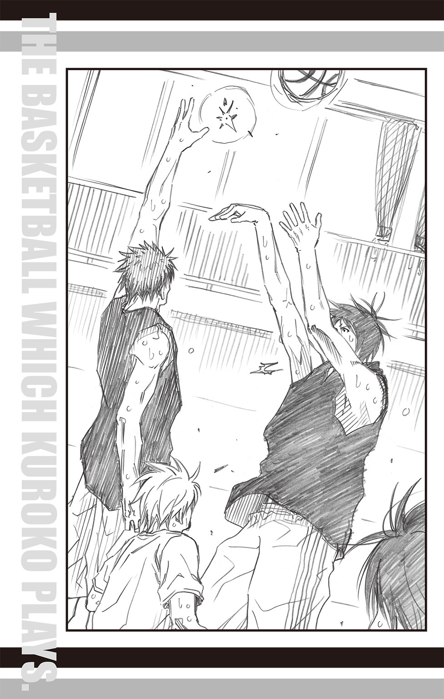
「!?」
壁と思われたのは、手を伸ばし高く跳び上がった火神であった。
火神は放たれたボールが頂点に達する前に追いつき、激しく叩き落とす。
「ナイス、火神！」
転がったボールを河原がキャッチすると、「速攻！」とボールを敵陣のコートへ向かって投げる。
同時に選手たちは一斉にボールを追って逆コートへと走った。
十人の選手たちが全力で駆ければ、床は衝撃でドドドドドと震えた。
熱量も含みそうな重い振動を足の裏で感じながら、得点板を担当していた夜木が呆然と呟く。
「すごい、あんなに跳べるなんて......」
火神のジャンプは、最初のジャンプボールでも目撃していたが、試合中の咄嗟のタイミングであそこまで跳び上がるのを目撃すると驚きはまた格別だ。
すっかり感じ入っている夜木に、審判をしていたリコはくすりと微笑むと、言った。
「火神くんのジャンプ力はあんなもんじゃないわよ」
「えぇ!?」
「熱が入れば、もっと跳ぶのよ。空中を歩いているみたいにね」
「空中を歩く!?」
リコの解説に夜木は目を丸くし、弾かれたように火神を見つめた。
人間が空中を歩く瞬間を見逃してはならない。そう思っている様子がありありとわかり、リコはまたもくすりと微笑むと、自分も火神へと視線を向けた。
リコはひとつ、気になっていることがあった。
火神の様子がおかしいのだ。
プレイに問題はない。スピードもいつも通り。ジャンプ力も普通。
そう、普通すぎる。
朝日奈との対決に火神は明らかに燃えていた。燃えあがっていると言ってもいい。
伊月が言っていたように、ゾーンに入るぐらいの集中力を見せるかもしれないと思ったのだが、火神にその気配はない。
むしろどこか慎重になっているようにも思える。
（何か考えがあるようね......）
秘密の地図を見つけた冒険家のように、リコは口の端を上げた。
自分の手を離れたところで何かが生まれる。まるで化学変化のような進化を目撃できるのが嬉しくて楽しいから、人を育てるのはやめられない。
（さて、何を見せてくれるのかしら）
リコは期待に胸を高鳴らせながら、ゲームを見守った。
ゲームは第四クォーター、終盤に入った。
朝日奈は自分の不調を感じ始めていた。
これまで簡単に切れていた黒子のマークが切れなくなっている。逆に、自分が黒子のマークに当たっていると、いつの間にか見失い、パスが通されていることがあるのだ。
しかも黒子のパスは、ボールを持つ時間が極端に短く、まるでパスの中継点のようにしてボールを回していく、見たことのないものだった。
いまも眼前にいたはずの黒子がいつの間にか逆サイドへと移動しており、降旗からのボールを中継して、火神にシュートを決めさせていた。
（どうなってるんだ......？）
朝日奈は頭が混乱しそうな思いだ。だが、周囲を見回すと三年の先輩たちはいたって普通の様子だった。
「どうやら黒子は朝日奈のパターンを把握したっぽいな」
「ということは、仕掛けてくるならここからか」
日向と伊月のやりとりが聞こえ、朝日奈は「え？」と振り向く。
「それって、どういう......！」
質問は最後まで続けられなかった。自分の前に福田がマークについたからである。
はっとして周囲を見回せば、コート内に散らばった三年生に二年生がぴたりとついている。
オールコート・マンツーマン・ディフェンス。
ゲームの終盤で体力を一番使うディフェンスを選んできたことに朝日奈は目を瞠る。だが、それでこそ戦い甲斐があると思い直した。
「なるほど......本当に仕掛けてきたな」
ラインの外でボールを持った伊月が、マークについた降旗に言った。
「はい。ようやく準備ができたんで」
降旗が緊張気味に答える。
「練習の成果、見せてくれよ」
「もちろんです......！」
降旗が言い終わるより早く、伊月は走りこんできた日向にパスを出す。日向はボールを受け取ると、ドリブルに切り替えた。
「先輩、こっちです......！」
朝日奈は福田を振りきるように駆けだした。これまでの練習を見た限り、福田、降旗、河原の三人よりはスピードはあると判断している。切れない相手じゃない。
だが走りだしてすぐに朝日奈は足を止めた。マークを振りきったはずが、自分の前に立ちはだかる相手がいる。河原だ。
河原は土田のマークについていたはずでは......と見遣れば、土田には火神がついていた。
マークチェンジが起きている。
すぐに気づいたが、だからといってやることは変わりない。
誰がマークに来ても振りきればいいのだ。火神以外のマークならば、恐れることはない。
朝日奈は素早いフェイクを二度入れて駆けだす。案の定、河原はついてこられず、朝日奈はフリーとなった。そこへボールが狙ったように飛んでくる。
「っし！」
自分の狙いが当たり、朝日奈は珍しく声を漏らした。
最後ぐらいは自分が得点をあげたい。
朝日奈は密かな野望と共に、ボールへと手を伸ばす――。
バシッ！
「なっ!?」
人影が自分の視界を塞いだと思った瞬間、ボールは予想外のほうへ曲がった。
「ナイス、黒子！」
ボールをキャッチしたのは、フリーとなっていた河原だった。彼はそのまま自陣へと駆けていく。
「な、何が、起きて......」
朝日奈は呆然と河原の背を見送り、そして自分の前に立つ人影――黒子に視線を向ける。
まるでマジックでも見ているようだ。
消えては現れる謎のプレイヤー。繰り出される特殊なパス。混乱する朝日奈の脳裏に、中学時代に聞いたひとつの噂が思い出された。
「まさか......」
ひとつ上の学年に燦然と君臨した、帝光中学の『キセキの世代』。
そして彼らが認めた――。
「幻の六人目......」
ごくりと息を吞む朝日奈に、黒子は淡々と言った。
「よく見ていてください」
汗も拭わずに言う黒子に、底知れない力を感じ、朝日奈は身震いした。
キセキの世代が認めた六人目。そんな彼がこれから何を見せようというのか。
だが、黒子が続けた言葉は朝日奈の予想とは違っていた。
「これが誠凛の戦い方。――誠凛の強さです」
黒子は短く告げると、試合を続けるべく駆けだした。
ゲーム後の反省会でリコはほくほく顔で言った。
「まさか降旗くんたちが、あんな見事なステルス・オールコート・マンツーマン・ディフェンスを見せてくれるとは思わなかったわ！」
リコの賛辞に降旗たちは嬉しさに頰を緩める。
「ステルス・オールコート......？」
朝日奈が耳慣れない言葉に首を傾げた。
「そうよ、うちのバスケ部にしかできない特殊なオールコート・マンツーマン。黒子くんの特性を最大限活かしたプレイよ。ただ連携が難しいのよねー」
リコが腕を組み、うんうんと頷いた。
普通のオールコート・マンツーマン・ディフェンスと違い、敵を翻弄し、黒子の存在を隠すためにこの技は細かいマークチェンジを続ける。それ故に、選手は常に仲間の動きを把握しなくてはいけない。その連携を助けるのは、選手同士の信頼関係と経験に基づく予測能力だ。
冬のウインターカップ開催時にスタメンだったメンバーはこの技を獲得していたが、二年生同士ではまだ不完全であった。そこで彼らはウインターカップ以降、学校での練習後も近くの公園に集まり、この技を自分たちなりに特訓し、習得したのである。
「がんばった甲斐がありましたね」
「おう。いいタイミングで披露できたしな」
黒子の言葉に火神が満足げな笑みを浮かべ、ちらりと朝日奈を見遣った。
火神たちがステルス・オールコート・マンツーマン・ディフェンスを繰り出して以降、朝日奈は一度もボールに触れることはなかった。
「どうだ、朝日奈。どっちが強いか、よくわかっただろ」
火神が鼻をあかしてやったぜ、と勝ち誇ったように言うと、朝日奈より先に口を開いたのは夜木であった。
「ほんと強かったです！ ほんとほんとかっこよかった！ 感激しました!!」
これまでおどおどしていた彼とは一変して興奮気味に語る様子に、逆に火神が圧倒される。
「そ、そうか......そりゃよかったな」
「はいっ！ ようやく間近で見られて感無量です......！」
感激の波が引かない夜木の言葉に、「あれ？」と伊月が首を傾げた。
「ようやくって......どういう意味だ？」
「あ、それは......実はオレ、ずっと見てたんです。黒子先輩たちが練習してるとこ」
「えぇ!?」
一同が驚きの声をあげる。
聞けば、夜木の家は黒子たちが特訓に使っていた公園のすぐ隣なのだという。
「今年に入ってから、夜になるとバスケコートを使う音がよく聞こえて。こっちは受験生だし、うるさいからやめてほしかったんですけど......」
「すみません......」
火神たちが揃って頭を下げた。たしかに言われてみれば、特訓に熱が入り、随分と遅くまで残っていた日もあった。周囲の住宅への配慮が足りなかったのは事実だ。
「以後、気をつけます......」
しおしおと項垂れる火神たちの姿に、夜木は慌てて手と首を振った。
「いえ、大丈夫です！ 最初はうるさいなって思ったんですけど、何やってるんだろうって見てるうちに、すごくはまっちゃって......」
「じゃあ、それでバスケが好きになったのね？」
リコが尋ねると、
「いや、バスケっていうより、ステルス・オールコート・マンツーマン・ディフェンスの魅力にはまっちゃって......」
と、夜木は照れたように頭をかいた。
「そこって、はまるところか......？」
日向が理解しがたいというように首を傾げると、夜木は「はいっ！」と大きく頷いた。
「あんな見事な連携、そうそうないですよ！ 息と息がぴったり合ってて、無駄のない動きは、まるで洗練されたプログラミングのようで本当にキレイで！ しかも黒子先輩のパスカットは、その動きをさらに速める触媒的存在で、どんどん高次元の動きになっていくのが、たまらないんです！」
熱く語る夜木であったが、そのような視点でパスを見たことのないメンバーにとってはどうもピンと来ない。
唯一、リコだけは「なるほど～、そういう見方もあるのね」と楽しそうだ。
「あんなふうに動けたら、すごくいいなって思って。だから誠凛に入ったんです。でもオレ、自分が思ってた以上についていけなくて、みなさんに迷惑かけてばかりだから、辞めたほうがいいかなって思ったんですけど、でもやっぱり間近で見ちゃうとどうしてもって思うんです。ずっと憧れてたんで！ だから、バスケ部にいさせてくださいっ！」
夜木は想いのたけをぶつけるように頭を下げた。
ぐっと目をつぶり、答えを待つ夜木の肩にぽんと手がのる。柔らかな温かさ。
夜木がそっと顔を上げると、リコが明るく微笑んでいた。
「大丈夫！ やる気があるなら、うちの部は誰でも大歓迎よ！ 死なない程度にあたしがみっちり鍛えるから！ あの技どころか、他の連携プレイもできるようになるわよ！」
任せて、とリコはかわいく片目をつぶってみせる。他のメンバーも笑顔で夜木を見つめていた。
「あ、ありがとうございますっ！」
夜木がほっとしたような笑顔を見せ、再度ぺこりと頭を下げる。
「もしかしておまえ、理由知ってた？」
火神が黒子に尋ねると、黒子は「はい」と答えた。
「ロードの途中で途切れ途切れに。すごく辛そうだったんですが、どうしても走りきりたい、バスケをやりたいって言うので、理由を聞いたんです」
そう言うと、黒子は朝日奈へ向き直る。
「聞いた通りです。夜木くんの想いは本物ですよ。憧れがある限り、彼はきっと辞めないでしょうし、カントクもボクたちも応援します。けど、そのせいでボクたちの練習をおろそかにするつもりはありません。だからさっきの言葉、撤回してくれますよね？」
黒子の言葉に、火神は首を傾げた。『さっきの言葉』というのが何を言っているのかわからなかったのだ。
記憶をフル回転し、ようやく『バスケ部を辞めろ』と言ったことだと気づいたときには、
（けっこう前のこと根に持つな、黒子！）
と、ぎょっとした。
だが、同時にあの生意気な朝日奈がなんと答えるのかも気になる。
火神はじっと朝日奈を見つめ、その答えを待った。
それは他のメンバーも同じだった。果たして、たったふたりしかいない一年生同士、互いを認め合えるのか、一同は固唾を吞んで見守る。
朝日奈はいつもの無表情のまま、静かに佇んでいたが、やがて口を開いた。
「夜木の動機はよくわかんないっすけど、憧れが支えになるってのは、オレにもよくわかります。オレも、火神先輩に憧れて誠凛に入ったんで。だから、こいつはそうそう辞めないって......」
「はぁぁぁぁぁ!?」
朝日奈の言葉は、驚きの言葉によってかき消された。
「か、火神に憧れて入ってきたのか!?」
「はい」
「どこに憧れたんだ!?」
「一年なのに、エースで、誠凛を日本一に導いたってところです」
「導いたっていうか......まぁ、そうだけど......」
次々とわく疑問に日向は痛む頭をおさえた。
「去年のウインターカップ、優勝が洛山じゃなくて東京の高校だって聞いて、オレ、見に行かなかったの本当に後悔したんです」
「え、見てないんだ？ 普通、志望校のしかもバスケ部が全国大会に出てたら、見に行こうって思わない？」
伊月が尋ねると、無表情だった朝日奈が小さく口を尖らせた。
「オレ、中学時代すげー成績悪くて。誠凛よりずっと下の学校を受ける予定だったんですけど、誠凛が優勝したって聞いて、興味持って。ネットとか雑誌の記事で火神先輩のことを知って、すごいかっこよかったから、どうしても誠凛に行きたくて猛勉強したんです」
「なるほど、憧れが支えになるというのは、そのときの体験談ですね？」
黒子が言うと、朝日奈は「はい」と素直に答えた。
「じゃ、じゃあ！ なんでおまえはオレにガンつけてたんだよっ！ 普通、憧れてる相手にケンカ売るか!?」
火神が勢いこんで尋ねると、朝日奈は無表情のまま首を傾げた。
「何を言ってるんですか？ ケンカなんか売ってません」
「噓つけっ！ いっつもオレのこと、睨んでたじゃねぇか！」
「睨んではいません。じっと見てはいましたが」
「み、てた......!?」
「動き真似したくて、見ていたんですけど、火神さんに不快な思いをさせてたなら、すみません」
朝日奈はあっさりと頭を下げた。
だがこの場合、あっさりと謝られると、ずっと抱いていた怒りは消えるどころか、行き場を失い、もどかしくなる。
火神はまさにその状態に陥り、うわーっと天井に向かって吼えた。
「なんなんだよ、こいつは――っ!!」
「朝日奈です」
淡々と答える新メンバーの姿に、火神をのぞく一同は声をあげて笑った。
「じゃあ結局、新入部員はふたりだったんだな」
電話の向こうから、木吉の楽しげな声が聞こえる。
日向は自室の椅子に座り、片手にダンベルを持って筋トレをしながら答えた。
「ああ。一時はどうなるかと思ったが、なんだかんだで一年同士、うまくやってるようだ。それに朝日奈には火神がいるしな」
はじめは生意気な問題児だと思われていた朝日奈だが、『火神に憧れている』とカミングアウトしてからは、積極的に火神に話しかけ、そして火神の言うことをよく聞いている。
おかげでギスギスする雰囲気も減り、一応は問題なく回っている。
「火神もとうとう先輩かー。これなら、すぐに俺の年なんか追い越してしまいそうだなぁ」
「......言ってる意味がわからんぞ、木吉」
相変わらずの天然ボケをかます木吉に、日向はやれやれと肩を落とす。
ごとり、とダンベルを机に置き、窓辺に立った。
夜空には星が瞬いている。
こっちは夜だが、電話の向こうは朝。わかってはいるが、遠い距離だ。
だが、そんなところに行ってまでも木吉には治したいもの、そしてやりたいことがある。
もちろん、日向にも。
「......ボケたことばっか言ってねーで、さっさと治せよ。じゃないと、おまえのポジション、なくなるぞ」
「ああ、わかってる」
電話の向こうで木吉が力強く答えた。
「早く、みんなとバスケがしたいよ」
「そうだな」
日向は答え、窓辺から離れた。
切なる願いをいまさら星に託すつもりはなかった。
仲間を信じる。
それが誠凛高校バスケ部なのだから。
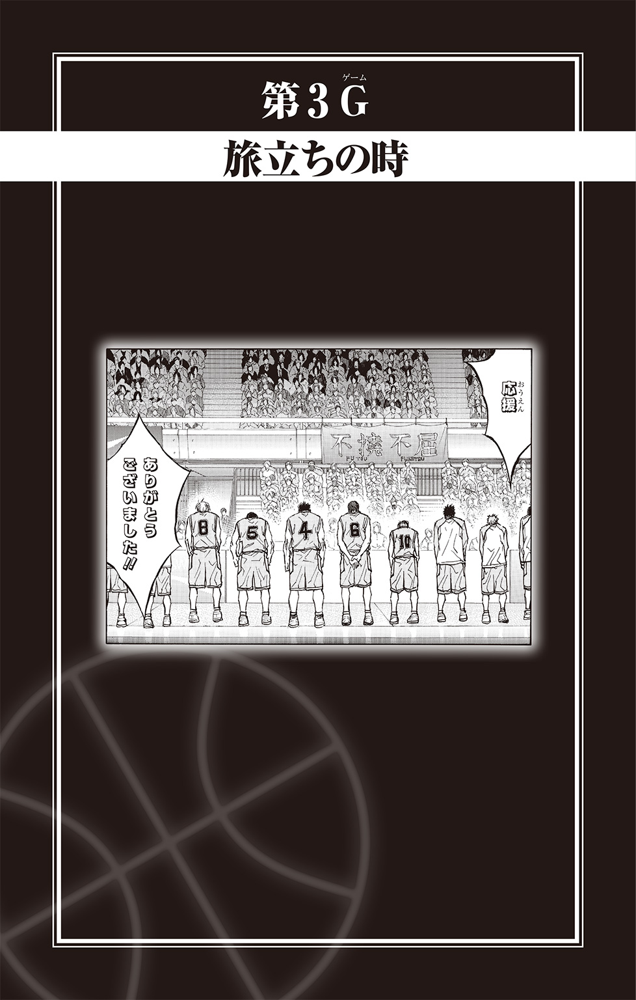
朝日の差しこむがらんとした部屋。
部屋に残されたのはもともと取りつけられていたベッドと学習机。
私物は入り口に置かれた段ボール箱ひとつのみ。
それなりに愛用していた部屋から自分という痕跡が消えて、今吉翔一はふっと微笑した。
立つ鳥あとをにごさず。
まさにそれが実現されて、今吉は満足を覚えていた。何においても、去る者の気配が残るのは、次にやってくる者にとって迷惑でしかないと考えていたからだ。
式を終えてこの寮の部屋に戻ってくるとき、今吉はもうここの寮生でも、桐皇学園の生徒でもなくなっている。
彼は今日、卒業する。
寮の玄関を出ると、見知った人物が立っていた。
同学年の諏佐佳典が玄関前に植えられた桜の木を見上げていた。
「どないした、諏佐」
今吉が声をかけると諏佐は上を向いていた顔を今吉のほうに振り向け、
「今年は見られなかったな、と思ってな」
と、答えた。
今吉も諏佐にならって桜の木を見上げる。硬い枝の先に薄紅色に膨らんだつぼみがいくつも見えたが、咲くまでにはまだ時間がかかりそうだ。
「去年の先輩たちが卒業したときは、桜が咲いてたろう？」
「......そういや、せやったな。この桜、毎年他より早う咲いとったもんな」
「オレたちは桜にも見放されたか」
言ったあとで、予想以上に未練がましい声になったことに気づいたのだろう。諏佐は恥じるように自嘲した。
『新鋭の暴君・桐皇学園』
そう謳われた彼らのバスケットボール部は、昨年の冬、最後のウインターカップでは一回戦敗退という苦い記録を残した。
悪い試合ではなかった。メンバー全員が全力を尽くした。だが、負けは負けだ。
諏佐の胸の奥ではまだ鮮やかな傷として、思い出に変わることを拒否している。
つい弱みを見せてしまったことに諏佐が気まずさを感じていると、今吉はニヤリと彼特有の人の悪い笑みを浮かべて言った。
「見放されるもなんも、もともと運なんかに頼っとらんやんか。きまぐれな運頼みなんか、こっちから願い下げや」
てっきり「センチやなぁ」などとからかわれると思っていた諏佐が軽く目を瞠って今吉を見つめると、彼はやはり人の悪い笑みを浮かべたまま「そろそろ行こか」と歩きだした。
始業ベルまではまだかなりある。ふたりはゆっくりとした足取りで校舎へと向かった。
途中、体育館の前を通ると、中からボールをつく音が聞こえた。
さすがの桐皇でも卒業式当日の朝練は休みである。しかし体育館からは規則正しいドリブルの音がひとつ、聞こえている。
今吉と諏佐は当然のように体育館へと入った。
いつも部員たちの熱気に満ちていた体育館も今日はひっそりとした顔を見せ、たったひとりで黙々と自主練に励む生徒――若松孝輔のつくボールの音を強く響かせている。
「おお、精が出るやないか」
「今吉さん!? 諏佐さんも!? どうしたんすか!?」
突然現れた今吉たちの姿に、若松は驚き、思わずボールを取り落とした。
「学校来るの、早くないっすか!?」
「それを言うなら、おまえもやろ？ こんな日まで練習なんて」
今吉が言うと、若松はぐっと顔を引きしめて言った。
「じっとなんかしてられないんすよ。オレらがリベンジするって決めてるんで。桜井ももうすぐ来ますし」
力強い瞳だ。部員たちを率いる意志と責任感を宿している。事あるごとに後輩と衝突していた頃の若松にはないものだった。
「さよか」
今吉の返しは短かったが、後輩の成長に満足げに笑みを浮かべる。
「気合充分なんはええけど、無理はすんなや」
「うっす」
若松がこっくりと頷いたとき、キュッと床が擦れる音が今吉たちの背後から聞こえた。
「......なんでアンタらがいるんだ」
「あ、青峰!?」
やや不機嫌そうな声を響かせて入ってきたのは、青峰大輝だった。
「ま、まさか、おまえ、自主練に来たのか!?」
若松が夢でも見ているのかというように目を擦り、それでも消えない青峰の姿に目を丸くする。若松ほどではないが驚いた諏佐もぱかりと口が開き、今吉もいつもは閉じているように見える目を軽く見開いていた。
珍種の動物を見るような三人の視線に、青峰はむっと顔をしかめる。
「ちげーよ。新しいバッシュの履き心地を確かめに来ただけだ」
そう言うと、青峰は床に座ってシューズを履き、軽くストレッチをはじめる。
「ちょっと動きてーから、アンタ相手しろよ。身体、あったまってんだろうな？」
「てめぇ、それが先輩にものを頼む態度か!?」
顔も上げずに言う青峰に若松が吠える。だが、以前のように衝突する気配はなく、今吉と諏佐は視線を交わすと体育館をあとにした。
昇降口に向かうため、校舎にそって歩きながら諏佐がしみじみと言った。
「まさか、あの青峰がな......。いつの間にか大きくなりやがって。人生、何が起きるかわからんな」
まるで久しぶりに会った孫の成長を驚く祖父のような感想に、今吉はくくく......と喉で笑い、不意に足を止めた。
「今吉？」
立ち止まり、空を見上げる彼の視線を追うようにして諏佐も空を見上げる。
頭上には青空が広がっている。だが、今吉の瞳はもっと近くの可能性を見つめていた。
「まぁ、そのうち咲くやろ」
彼らの頭上で、つぼみをつけた桜の枝が凛と枝を伸ばしていた。
卒業式当日、海常高校の校門の前で笠松幸男は盛大に眉をひそめた。
彼の眼前で繰り広げられているのは、同輩の森山由孝と後輩の早川充洋による謎の攻防。
「そこをどけ、早川」
「ダメっす！ オ（レ）の誇（り）にかけてこっか（ら）先は通さないっす！」
森山からの先輩命令であるにもかかわらず、早川は頑として首を縦に振らなかった。彼はいま、校門の前に立ちはだかり、中へ入ろうとする森山を拒んでいる。腰を落とし、両手を広げた姿は、さながら試合中のディフェンスのように見事な構えだ。
「森山さん、諦めてください！」
相変わらず『ラ行』が言えない早川の説得に、森山の瞳が鋭くなる。
「おまえの熱意はわかるが、オレにも譲れないものが......ある！」
言うやいなや、森山は早川の左へとダッシュをかけた。
「うぐっっ！」
すかさず早川が行く手を塞ごうと重心を左に移す。瞬発力に優れた早川の手が森山の行く手を阻む......かに見えた。
「あっ!?」
声をあげたのは早川だった。左へダッシュするかに見えたのは上半身だけ。森山の足は早川の右へ踏み出していた。華麗なフェイクだ。
「甘いな」
森山が校門の中へと足を踏み入れる。その直後。
「まだまだぁぁぁ!!」
ズザザザザザッと早川が再度森山の前へ走りこんだ。バッと両手を広げ、森山を正面から睨みつける。
「森山さん、勝負はこ（れ）か（ら）っすよ！」
「フッ......いいだろう」
本気を出した森山が、そっと鞄を地面に下ろそうとしたとき。
「よくねーよっ！」
怒声と共に、笠松の回し蹴りが森山の腰に決まった。
「か、笠松！ 何をするんだ！」
「そりゃこっちの台詞だ！ 何やってんだよ、朝っぱらから！ 他の生徒の迷惑になるだろうが！」
腰をさすりながら抗議する森山を笠松はギロッと睨みつける。いつもなら跳び蹴りをするところだが、今日は卒業式。制服に土足の痕がつくのは避けたほうがいいだろうと、軽い回し蹴りにしたのは笠松なりの優しさだった。
「いったいなんの騒ぎだ？」
ひとまず校門の中へ入り、人の邪魔にならないよう隅へ移動すると、笠松はふたりに事情を問いただした。
「早川が酷いんだ」
「森山先輩がヒドイっす！」
見事にハーモニーを奏でた答えが返され、笠松のこめかみに青筋が浮かぶ。
おまえらなぁっと怒りのままに続けそうになったところへ、
「まぁまぁ、落ち着けよ。三人とも」
穏やかに間に入ってきたのは、同輩の小堀浩志だった。
「騒いでると注目の的だぞ？ ただでさえ、今日は人が多いから」
小堀の指摘に笠松はぐっと言葉を吞みこんだ。
冷静になって周囲を見回してみると、バスケ部の騒動を何事かと見つめる視線がいくつもあった。小堀の指摘通り、今日は校門周辺が混んでいるので、注目度も高い。
いつもより高い人口密度には理由がある。
海常高校の伝統として、卒業式の日の朝、登校してきた卒業生の胸に在校生の代表が小さなコサージュをつける習慣があるのだ。コサージュをつけるのは主に生徒会の役員が担う仕事なのだが、部活動でお世話になった先輩へ、お礼を兼ねてコサージュをつけたいという在校生の参加も認められていた。
現に、小堀の胸元を小さなコサージュが飾っている。
笠松の視線に気づいた小堀が「中村につけてもらったんだ」と教えてくれた。
「ちなみにこのコサージュが、森山と早川の攻防戦の原因なんだ」
「はぁ？」
笠松はまったく理解できないという顔で、森山たちを見遣った。すると森山が溜息をつき、芝居がかった仕草で両腕を広げて小さく肩を上下させた。
「仕方ないだろう。このコサージュはいわば卒業の証。それを胸に飾るならば、早川よりも女性にお願いしたいと思うのが、当然だろう？」
「なんでっすか!? オ（レ）の森山先輩にお礼したいって気持ちは、そこい（ら）の女子に負けてないっすよ！ バ（リ）バ（リ）っすよ!!」
「早川、勝ち負けじゃないんだ。それになんだ、『馬場っすよ』って」
「馬場じゃねぇっす！ バ（リ）バ（リ）っす！」
「だから、ババだろ？」
早川と森山の嚙み合わない会話に、笠松は疲れたように眉間を揉んだ。
「笠松、とりあえずこのふたりは置いておいて、先にコサージュをもらったらどうだ？」
小堀のアドバイスに、それもそうだと思った笠松は周囲を見回した。
きっとバスケ部の後輩の誰かがつけてくれるだろうと思ったのだが、あいにく他のバスケ部の三年生にコサージュをつける作業で手間どっていて手が空く様子はない。早川は森山をロック中なので無理だろう。仕方ない、生徒会からもらうかと一抹の淋しさを覚えていると、
「......笠松センパイ」
どこからともなくか細い声で呼ばれ、笠松は周囲を見回した。
「......何してんだ、黄瀬」
笠松は呆れた顔で、後輩の黄瀬涼太を見下ろした。
海常高校バスケ部のエース黄瀬は、校庭の隅に植えられた小さな垣根の中に大きな身体を隠していた。モデルも兼任する美男子・黄瀬の情けない姿に、森山と早川も攻防戦を休止して見つめてしまう。
「これには事情が......」
黄瀬がゴソゴソと垣根から立ち上がる。
「オレが堂々と校門の前にいると、女の子たちが寄ってきちゃうんで......」
「......たしかに、その格好なら普通は寄ってこないな」
「へ？ 格好？」
笠松の指摘に黄瀬が自分の身体を見下ろす。そこではじめて全身が小さな葉っぱまみれになっていることに気づき、慌てて払った。
あらかたの葉っぱを落とすと、黄瀬は背筋を伸ばして言った。
「笠松センパイ！ 卒業おめでとうございます！」
「おう」
「オレ......センパイたちとバスケができて、すごく幸せでした。ほんと、ありがとうございました!!」
「柄でもねぇこと言ってんじゃねぇよ」
勢いよく下げた黄瀬の頭上から笠松の呆れた声が降る。
「おまえがそんな殊勝なこと言うと、明日あたり台風でも来そうだからやめろ」
「ひ、ひどっ！」
黄瀬は顔を上げ、眉を下げて笠松に詰め寄った。
「オレ、これでも昨日睡眠時間削ってまで、何を言うか考えてきたんスよ!?」
「一晩考えてそれかよ。だったら睡眠時間を多めにとっとけ」
「そんなぁ......」
黄瀬はがっくりと肩を落とした。「少しはできる後輩だって証明して、安心してもらおうと思ったのに......」
「いまさら、おまえのどこを心配する必要あるんだよ」
笠松の言葉に黄瀬は大きく目を見開いた。迷いのない強い眼差しの前主将の隣で、森山と小堀も柔らかく頷く。
黄瀬の胸の奥で熱いものが広がっていき、言葉が出ない。そんな彼の背を早川がバシリと叩いた。
驚いて早川を振り返ると、現主将は熱いどんぐりのような眼で黄瀬を見つめ、背中を押すように、ふんっと強い鼻息を吐いた。
黄瀬はきゅっと唇を結んで俯くと、ぱっと顔を上げた。
そこに浮かんでいたのは、高校生らしい明るい笑顔。
「笠松センパイ、マジあざーっしたっ！」
「おう」
そしてエースは前主将の胸にコサージュを飾った。
陽泉高校の卒業式は厳かである。
全校生徒を収容できる講堂にはパイプオルガンが置かれており、卒業生の入場も校歌斉唱も、そして卒業証書授与もすべて重厚なパイプオルガンの調べと共に行われる。
静謐な空気の中で式は進み、いよいよ卒業生代表による答辞の段となった。
壇上に上がった生徒の姿に、全校生徒の顔が揃って上を向く。校長の身長に合わせてあったマイクの高さを自分で調整する生徒の背は、高かった。いや、高いというよりは大きいという表現のほうがしっくりとくる巨軀だ。
それもそのはず、壇上に上がったのは陽泉高校バスケットボール部の前主将であり、卒業生の中では一番の高身長である二メートル超えの、岡村建一であった。
「まさか岡村さんが答辞を読むとはね......」
バスケットボール部現主将の氷室辰也が驚きのあまり思わず呟くと、隣に座っていた劉偉が小声で、
「日本は答辞の担当者を身長順で選ぶアルか？」
と聞いてきた。
「まさか。正当な審査の結果選ばれたんだよ......たぶん」
答える氷室の歯切れも悪い。岡村のことは先輩として尊敬しているが、全校生徒の前で話すのかと思うと......なぜか不安になる。授業参観で我が子の発表を見つめる母親に似た心境に陥る氷室と、人間社会にうっかり紛れこんだことに気づかない類人猿を発見した錯覚にとらわれる劉に見守られながら、岡村は答辞を読み始めた。
氷室たちの不安にもかかわらず、岡村の答辞は様になっていた。
壇上で全校生徒の視線を浴びながらも、岡村はあがった様子もなく、背筋を伸ばし堂々と答辞を読みあげていく。
低い声で朗々と読まれるその内容も、ありきたりの文章をなぞったものではなく、彼自身の体験を彼自身の言葉で語っている。かといってくだけてはおらず、答辞としての格調も充分にそなえている。
「威風堂々という感じだね」
氷室が感心して劉に囁くと、
「ゴリラもようやく人になるときが来たアルな」
珍しく劉も岡村を認める発言をした。
多くの生徒たちに感銘を与えていた答辞であったが、ふいに様子が変わった。
朗々と語っていた岡村が言葉を詰まらせたのだ。
高校三年間の大半を占めた、部活動について語っていた最中のことだった。
訝しむ視線を集めた岡村は、一度何かを飲みこむように瞳を閉じ、やがて瞼を上げると再び語り始めた。
「三年間、目標としていた全国制覇。自分が主将を任されたからには必ず成し遂げようという思いで、最後の一年は己のすべてを捧げました。その結果は、夏のインターハイで三位、冬のウインターカップではベストエイト。近年にないベストメンバーと言われながらも果たせなかった現実に、改めて全国制覇という壁の高さを感じさせられました」
岡村は一度言葉を切ると、大きく息を吸った。「ですが、後悔はありません」
はっきりと断じられた言葉は、氷室の心にストレートに響いた。壇上の岡村の表情からも、その気持ちが建前ではなく本心であることが見てとれる。
隣に座る劉の瞳に真剣味が増したことを感じながら、氷室は岡村の続ける言葉に耳をかたむけた。
「部員一同で戦いきった結果は、敗北という言葉で終わりを告げたわけではなく、そこからはじまるもの、そこから開ける世界があることを教えてくれました。三年間のすべてを捧げるだけの価値あるものと出会えたことを幸福に思います。......ただ唯一、心残りなのは、バスケをしていたのに女子にモテなかったことです！」
「へ？」
聞き漏らすまいと集中していたところへ飛びこんできた予想外の一言に、つい声を漏らしてしまった氷室は慌てて口を塞いだ。
隣の席の劉から急速に真剣味が薄れていくのを感じながら、氷室は壇上で答辞の巻紙を震える手で摑む岡村を見つめた。
「バスケ部の全国大会常連校であれば女子にモテるのは確実と聞いていたのに、この三年間で女子から声をかけられたことはゼロ!! 主将になれば目立ってラブレターをもらえるかと思いきや、まったくそんなことはなく！ なぜか副主将の福井のほうがモテる！ しかも、あいつはちゃっかり女子から第二ボタンの予約が入っているのに、ワシは！ ワシはぁぁぁ......！」
感極まった岡村はついには大粒の涙を溢れさせた。その涙は瞬く間に滂沱の流れに変わり、聞く者の耳に心地よかった声は涙声で掠れた。
「うぉぉぉぉぉ、ナゼじゃぁぁぁ！ 同じ高校生なのに、あまずっぱい青春にこんなに差があるのは不公平すぎるわぁぁぁぁ！」
マイクを通して響き渡る嘆きの言葉に、「その通りだ！」と同意する声が卒業生のあちらこちらからあがり始める。
「岡村！ おまえの気持ち、よくわかるぞ！ オレも同じだったからな！」
「そうだ！ 寂しかったのはおまえだけじゃない！」
「オレはおまえの言葉に救われたぞ！ ありがとう、岡村！」
「うぉぉぉぉ！ 心の友たちよ～！」
講堂内は熱い男たちの啜り泣きと声援、その他の生徒たちのなんとも言えない空気とで、厳かな雰囲気は一気に吹き飛んだ。
このカオス的状況は、バスケットボール部監督にして体育科教師の荒木雅子が愛用の竹刀で岡村を退場させるまで続き、すべてを見届けた紫原敦は欠伸と共に呟いた。
「まぁ、うちはこんなもんだよねー」
卒業式の式典が行われた講堂から出たところで、赤司征十郎は意識的に外の空気を胸に吸いこんだ。
春が近いとはいえ、洛山高校のある京都はまだ寒い。だが、講堂内は詰めこまれた人の熱気で少し熱いぐらいだったので、外の冷えた空気が心地よかった。
「征ちゃん」
名を呼ばれ、声のしたほうを見遣ると、講堂前にある噴水の脇に実渕玲央、葉山小太郎、根武谷永吉が立っていた。
「送辞、お疲れ様。かっこよかったわよ」
実渕がにこりと微笑む。一年生ながらバスケ部の主将だけでなく洛山高校の生徒会長も務める赤司は、卒業式で卒業生に贈る送辞を担当していた。
「ありがとう。でも、それを言うためにわざわざ待っていたわけではないだろう？」
「もう、本当になんでもお見通しね、征ちゃんは」
小さく肩をすくめてみせる実渕に赤司は柔らかく微笑んだ。
ウインターカップ前に比べ、赤司は笑顔を浮かべることが多くなったと実渕は思う。
それ以前も笑顔を見せることはあったが、それが本心からのものなのか、それとも周囲の警戒心を解くためのツールとして意識的に利用しているのか、判断に迷うことがたびたびあったのだ。
だが、いまの赤司は噓偽りのない笑顔を浮かべている。
彼を取り囲んでいた透明なフィルターが取り払われたような感覚だった。
「本当は、黛さんのことを聞きたくて待っていたんだろう？」
赤司が言うと、葉山が「そう！」と勢いよく答えた。
「だってさ！ 卒業証書授与んときもいなかったんだぜ!?」
「それはあんたが寝ていたからでしょ。あたしはちゃんと名前が呼ばれるのは聞いたわよ」
実渕は呆れたように言い、「......まぁ、姿は見つからなかったけど」と付け加えた。
「退場んときも、気をつけていたけど、それっぽい姿を見なかったんだよなぁ」
根武谷が後頭部をぼりぼりとかきながらぼやく。
バスケ部三年生の引退式にも現れなかった黛は、その後も姿を見せず、まるではじめからいなかったかのように彼らの視界から消えた。
せめて卒業式ぐらいは顔を見てやろうと思っていた三人だったが、それもあえなく失敗に終わってしまった。
「赤司は見つけられたんだろ、黛さんのこと！ どうだった、泣いてた!?」
「さぁ、どうだったかな」
「あ、なにその顔！ もしかして見たの!? 泣き顔!? マジ!?」
「いや、あいつならムスッとしてんじゃねぇか？」
興味津々の葉山と根武谷が赤司につめよったが、赤司はするりと彼らを避け、歩きだした。
「教室に戻ろう。卒業式が終わったとはいえ、ホームルームもあるだろう？」
「ちょ、待ってよ、赤司～！」
葉山が口を尖らせるが、赤司は構わず歩いていく。
仕方なく三人も赤司のあとに続いて歩きだした。
「なんつーか、ここまで姿を見ないと疑いたくなるよね」
葉山が頭の後ろで手を組み、言った。
「疑うって何を？」
実渕が問うと、葉山は眉間に皺を寄せて、
「あの人、本当にうちの高校にいたのかな？」
と、ひどく真面目な顔で言った。
「はぁ？ 何言ってるのよ、あんた」
実渕が心底呆れたように言ったが、隣の根武谷はぐぐっと腕組みし、頷く。
「ここまでくると、その線もありうるな」
「どういう線よ！ あんたたち、ほんともう何言ってるの！ 征ちゃんもなんか言ってやって！ あの人はちゃんといたわよね!?」
「さてね」
赤司の答えは短かった。
しかし実渕は、赤司が肩を小さく震わせて笑っているのをはじめて見たのだった。
秀徳高校バスケ部の謝恩会は、いつも練習に利用する体育館にテーブルと椅子を並べて行われた。
司会進行を務めるのはもちろん、一年の高尾和成である。
「ではでは続きまして、二年生による出し物でーす！」
高尾がおもちゃのマイクを片手に宣言すると、ぱっと体育館の照明が消えた。続いてスピーカーから、軽快なメロディーが流れ始めたかと思うと、正面の壇上に照明が点灯する。
そこにはＴシャツにプリーツスカート（おそらく女子生徒から借りたのだろう。ウエストサイズが合わず、ベルトでかろうじてとめている）をはいた二年生たちが、上から見るとＶ字の並び方でスタンバイしていた。
後輩の女装姿に三年生たちが爆笑するのと同じタイミングで、スピーカーからアイドルグループの歌声が流れだす。
真面目で勉強熱心なことで有名な秀徳高校である。壇上の二年生は本家のアイドルにも負けない完璧なダンスを舞った。必死に練習してきたのだろう。どの顔も真剣そのもので、明るいアイドルの応援ソングとまったくそぐわない。
それが三年生たちの笑いをさらに誘い、一年生たちは笑いをこらえようと一様に俯いた。
もちろん高尾も笑い声はたてない。彼はすでに笑いすぎて過呼吸寸前だ。
フルコーラスを完璧に踊り終えた二年生たちには盛大な拍手が贈られた。
中でも三年生の宮地清志はわざわざ立ち上がり、ステージ上でＶ字の頂点、つまり中央で踊った後輩にして実の弟、宮地裕也と熱い握手、続いて抱擁までして賞賛したほどだった。
「二年生のみなさん、ありがとうございました！ では、最後に中谷監督からの一言です」
高尾の紹介により、監督の中谷仁亮が立ち上がる。すると、緩んでいた空気がぴりっと引きしまった。
一同が背筋を伸ばし、中谷に注目した。中谷は首をめぐらし、卒業していく部員たちの顔を眺めた。
「卒業生にとってのこの三年、レギュラーを摑み試合に出た者、それが叶わなかった者、それぞれの三年間であったと思う。特に最後の夏では、王者・秀徳の名を揺るがすような試合もあり、きみらの自信と誇りが大いに試された。その後の夏合宿では、レギュラー陣はその相手と合同練習を行ったが、誰ひとり敗北をひきずることなくチャンスを次に活かそうと精力的だった。あのとき、きみたちは自分自身に勝ったといえる。その柔軟さと誇り、それに辛苦を舐めたからこそ最後の冬には、かの洛山相手に肉薄することができたのだと断言する」
中谷は言葉を一度切ると、ふと目元を和ませた。
「これは私個人の体験談になるが、私がきみたちぐらいの年齢の頃、よく大人たちに『青春は一度しかない。いまを大事にしろ』と言われたんだが、当時はその『青春』という言葉が嫌いでね。自分は毎日の練習をこなすので精一杯なのに、大人たちの大切にしろという『青春』が、具体的に何をすることなのかがよくわからなかったんだ。大人たちのノスタルジーを押しつけられている気がして辟易していた。だが、この年になるとその意味がわかる。やはり、きみたちの年齢の時期は何ものにも代え難い時代だ。そしてきみたちはその時間をバスケに注いだ。きみたちが過ごした時間は大人になってしまった身には羨ましいほどに輝く『青春』であったよ。きみたちひとりひとりが捧げたその時間と情熱は、今後もきみたちを裏切らないだろう。どうか自信をもって今後の人生を歩んでほしい。......まぁなんだ、語りすぎたが......卒業、おめでとう」
中谷が照れ隠しのようにこほんと咳をすると、卒業生たちが一斉に立ち上がった。
「監督、ありがとうございました！」
代表して元主将の大坪泰介が言うと、卒業生たちも声を揃えて「ありがとうございました」と叫び、頭を下げた。
中谷はやはり照れ隠しのようにふむと頷くと司会の高尾に視線をやる。
高尾は了解しましたというように軽く目で応え、マイクを口元に近づけた。
「中谷監督、ありがとうございました。では宴もたけなわではありますが、そろそろお開きの時間となりました。最後は全員の校歌斉唱で締めたいと思います。伴奏は我らがエース、緑間真太郎くんです！」
高尾の紹介に大坪ら三年生は「緑間、ピアノ弾くのか!?」とぎょっとし、いつもは体育館の隅に置かれているピアノが珍しく宴席のそばにまで運ばれてきていた意味を知る。
ピアノの前にはすでに緑間が腰かけていた。試合中しか外さない左手のテーピングも今日この時ばかりはしておらず、長い指が白い鍵盤の上でスタンバイしている。
この一年、部員の誰もが期待と羨望と共に見つめてきた正確無比の指が当然のように校歌の前奏を弾き始める。
座っていた部員たちも素早く立ち上がり、一同は声を合わせて校歌を歌った。
男子生徒のみの歌声は雄々しく、ピアノの伴奏も彼らの声に合わせるように響いた。
やがて曲が進むにつれ、揃っていた歌声が濁り始めた。
ぽつり、ぽつり。不協和音を奏でる涙交じりの歌声。
増えていく涙交じりの声は、声を張りあげることで涙を吹き飛ばそうとしているかのように、大声となった。まるで試合中の応援のように声を張りあげて歌う部員に合わせて、緑間の演奏も大胆で力強いものとなり、最後まで彼らの歌声を導き、寄り添った。
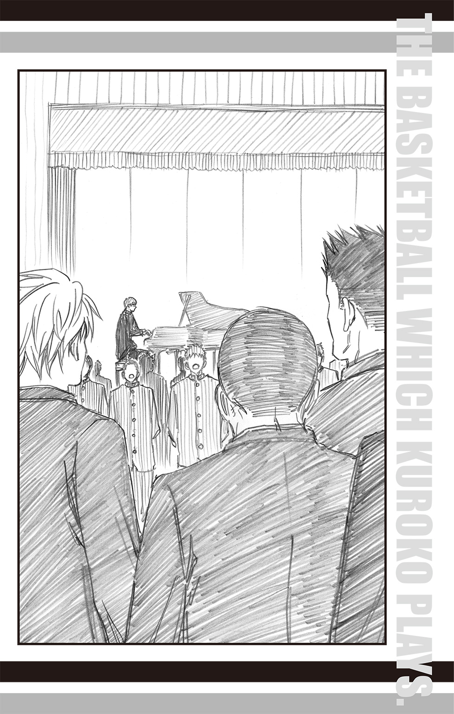
夕闇に染まる通い慣れた道を歩きながら、木村信介が言った。
「こんな明るい時間に三人で歩くのは、なんだか変な気分だな」
「たしかに。帰るのはいつも夜になってからだったからな」
一緒に歩いていた大坪が思い出すようにくすりと笑う。
「こうやって帰るのもこれが最後か」
宮地が卒業証書の入った筒で自分の肩をぽんぽんと叩いて言うと、大坪が「そうだな」と同意し、木村も無言で頷いた。
そのまま三人の間に沈黙が降りる。
だが、居心地が悪いと感じる者はいなかった。いまさら、そんなことを感じる関係でもない。
長い沈黙ののち、最初に口を開いたのは宮地だった。
彼は紅く染まる夕空を見つめたまま、言った。
「悪くない三年間だったよな。オレたちの三年間ってさ」
「そうだな」
大坪が静かに答える。
「監督が言ってた通り、最後の一年はほんと怒濤だったよな。緑間は入ってきたけど、噂以上に変なヤツで」
木村は入学当初の緑間を思い出してニヤリと笑い、続けた。「けど、おかげで全国制覇の頂を垣間見られた」
「オレたちは頂を見るだけだったが、あいつらならきっとその先を見ることができるだろう」
大坪がもはや確定事項のように力強く言うと、
「それはそれで、嬉しいやら悔しいやら複雑な気がするけどな。......まぁ、託せるやつらがいるのは悪くはねぇけど」
宮地が茶化すように言い、両腕をあげて大きく伸びをした。
「もしかすると、オレたちって案外一番しあわせな卒業生なんじゃねぇの？」
「どうだろうな。他にも同じようなことを感じているやつらもいるかもしれんぞ」
大坪は最後の輝きを放つ夕焼けを見つめ、目を細めた。
「それぐらい、あいつらとのバスケは奇跡みたいなものだった」
キセキの世代を獲得したそれぞれの高校との戦いは激しく苦しく、だが魅了されずにはいられないものばかりだった。
しかも『奇跡』と謳われていた彼らは、この一年でさらなる進化を遂げた。その一瞬に関われたことを喜ばない選手はいないだろう。
「......大坪、言ってることクサイぞ」
「たまには語らせろよ」
いつにない木村のツッコミに大坪は笑って答えた。
「木村、たまにはいいんじゃねぇの？ レアな大坪を最後に拝んでおこう」
「そうだぞ、滅多にないことだ」
「本人が胸張って言うなよ。......じゃあ、そういうことにしておくよ」
三人は揃って笑い合い、他愛もない会話を続け――
やがてそれぞれの道へ、歩きだした。
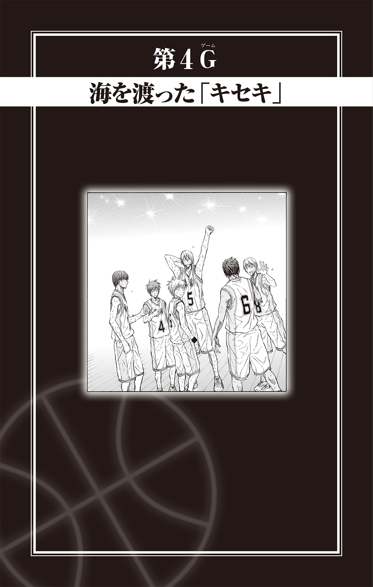
七月の強烈な太陽光は昼のあいだに街じゅうのアスファルトに潜りこみ、陽が落ちたあともその存在感を発揮し続けていた。
立っているだけでじんわりと汗が滲むが、部活を終えた解放感が束の間、悩ましい暑さを忘れさせてくれる。
特に今日の解放感はいつもと一味違った。
「夏休みしょっぱなの合宿がハワイとか、やっぱうちのバスケ部は豪華っスね～」
コンビニの前で、箱買いしたアイスキャンディーを分けながら黄瀬涼太がうきうきとした声で言った。
そう、帝光中学バスケ部の一軍レギュラーは八月に行われる全国中学校バスケットボール大会、通称「全中」に向け、強化合宿と交流試合を兼ねて明日ハワイに旅立つのだ。
春に入部したばかりの黄瀬にとっては初の合宿。期待も高まるというものだ。
それは、やはり春に一軍へと昇格したばかりの黒子テツヤにとっても同じだった。
「ボク、飛行機に乗るの、はじめてなんですよね」
「えっ!? じゃあ、もしかして海外に行くのもはじめてっスか!?」
黄瀬が信じられないという顔で黒子を見つめる。「いまどき、そういう人いるんスね......」
「黄瀬くんって時々ナチュラルに嫌味ですよね」
それってどういう意味っスか!? と、黄瀬が慌てる隣で、大口を開けて棒状のアイスキャンディーを一気飲みした青峰大輝がニヤリと笑った。
「テツ、知ってるか？ 飛行機って乗る前に絶対身体チェック受けなくちゃいけないんだぜ？」
「知ってます」
「おまえ、影薄すぎて係員に見つけてもらえないまま飛行機に乗って、ハワイで不法入国だーって追い返されるかもしれないぞ？」
「えっ......」
黒子は絶句するが、青峰がニヤニヤと笑ったままなのに気づき、
「青峰くん、騙されませんよ」
じとっと目を細めた。
「そうだ。それにいまの仮説には無理があるのだよ」
と言ったのは緑間真太郎だった。
彼は眼鏡の中央をくいっと上げて続ける。
「身体チェックはゲート状の機械を通過する方法で行われるから、いくら黒子と言えども気づかれないことはない。日本の出国審査が無事に通っているのなら、ハワイでも不法入国だと騒がれることはないはずなのだよ」
「あのな、冗談をクソ真面目に返すなよ。おもしろくなくなるだろ」
青峰が呆れ顏でやれやれと肩を落とす。
「でもさー、黒ちんの場合、入国審査の人に気づかれないことはありうるんじゃん？ その場合は結果的に強制送還もあるんじゃないのー？」
と、紫原敦が言った。しかし、その発言内容よりも緑間の気を引いたのは、紫原の大きな指の間に挟まれた二本のアイスキャンディーだった。
「紫原、なんで二本もアイスキャンディーを食べているのだよ。ひとり一本だと買うときに決めただろう!?」
「えー、だって赤ちんがくれたんだもん。ね？」
紫原が隣で静かに佇んでいる赤司征十郎を見つめた。
「ああ。紫原が『一本じゃ足りない。もう一箱買う』というから、オレのやるから我慢しろと言ったんだ」
「ほらねー」
「ほらねーじゃない。そこは一本で我慢するところなのだよ」
「えー」
紫原は面倒そうに言うと、二本のアイスキャンディーを一口でたいらげ、
「ごちそうさまでした。じゃあ、オレ帰るねー、明日の準備あるしー」
と、緑間の追及をさらりと流してあっさりと去っていった。
「まったくあいつと来たら......」
緑間は眉間に皺を寄せつつも、「合宿の準備ならば仕方ない」と怒りの矛を収める。
紫原の『準備』が、主に持っていくお菓子の購入であることは緑間以外は簡単に察したが、それを緑間に伝えたところで無駄に怒りが再燃するだけなので誰もが口をつぐんだ。
「では、オレも帰るのだよ」
仲間の密かな思いやりに気づかない緑間が言うと、
「そうだな。明日のこともある。みんな早く帰ったほうがいい」
赤司も同意を求めるように一同を見回した。すると黄瀬が、どこか渋々といった感じで「はーい」と返したので、おやと目を留める。
「どうした、黄瀬。何か不満か」
「別に不満ってわけじゃないっスけど......せっかくの合宿なのに、なんかこうもっとワクワク感があってもいいんじゃないっスか？ 赤司っちも、緑間っちも、なんか淡々としてるし......」
黄瀬がつまらないというように口を尖らせると、緑間が眼鏡の中央を押し上げて言った。
「当たり前なのだよ。これは旅行ではない。れっきとした合宿なのだから」
「それはそうなんすけどー。ハワイっすよ？ ワイハっすよ？ もっとこうイロイロと......」
黄瀬がもどかしげに言うのを聞き、赤司がふっと微笑んだ。
「大丈夫だよ、黄瀬。行けばわかる」
「何がっスか？」
「帝光の合宿はたとえどこに行こうとも、やることは変わらない。死力を尽くして練習に励むだけだ」
「死りょ、く......!?」
黄瀬の顔が大きく引き攣る。赤司は黄瀬に言い聞かせるつもりで微笑んでいるのだろうが、その笑顔が合宿の激しさを物語っているようでかえって怖い。
赤司は言葉をなくした黄瀬を尻目に、今度は黒子に視線を向けた。
「だから黒子も荷造りで悩む必要はないよ。とりあえず練習着とパスポートさえあれば、問題ないからね」
「......わかりました」
密かに悩んでいたことをズバリと解決されたものの、新たに発覚した恐怖の合宿に黒子は思わずごくりと唾を飲む。
そんな黒子の首に青峰の腕が勢いよくぐいっと回された。
「いまさらごちゃごちゃ考えたって意味ねぇだろ？ ともかく明日はハワイなんだからよ！」
ニッと笑う青峰につられるように黒子も微笑み、「そうですね」と頷く。
不安も期待も、いろいろ織り交ぜて――ハワイ合宿がいよいよはじまる。
帝光中学バスケ部一軍レギュラーの合宿日程は三泊五日。
移動の日を除く中二日が現地校三校との合同練習に当てられる。
夕方四時に学校に集合した一軍レギュラーの面々はマイクロバスに乗りこみ、空港へと向かった。
空港で搭乗手続きと出国審査をすませ、一同は早々に出発ロビーへと移動する。
夜九時のフライトに対して随分と早めの移動は、すべてコーチである真田直人の判断だ。
というのも、去年の合宿の際に青峰がパスポートを忘れたまま空港に来るという、うっかり事件を起こしたからだ。
そのときは、彼の幼なじみであり、たまたま家にいたマネージャーの桃井さつきが届けてくれたからギリギリフライトには間に合ったが、そのときのことを思い出すと、真田はいまでも胃が痛む。
そこで今年はたとえ何が起きても対応できるようにと、すべての行動が早められていた。
しかし、日頃から一軍の厳しい練習により鍛えられ、普通よりも体力をつけた中学生男子が、練習のない午後を過ごした夕刻、大人しく飛行機を待っていられるわけがないことを、真田は見落としていた。
体力を持て余した青峰は出発ロビーの長い通路に目をつけ、荷物からバスケットボールを取り出すと黄瀬に言った。
「黄瀬、ツーメンでここのはじからはじまで、走るぞ」
「はぁ!? 何言ってるんすか！ んなの、ダメに決まってるじゃないっスか」
「なんだよ、オレのスピードについてこられないから言い訳か？」
「ちょっと！ 誰がついてこられないって!?」
かくしてふたりは、出発ロビーのはじからパス練を開始しようとしたのだが、駆けつけた真田に見つかり、こっぴどく叱られた。
「ふむ。体力が有り余っているようだな」
真田の説教が一旦途切れたタイミングで、ふらりと現れた監督の白金耕造は、並んで立たされている青峰と黄瀬をさも可笑しそうに見つめて言った。
「申し訳ありません、私の監督不行き届きです」
真田が疲れた顔で白金に言うと、白金はにこにこと微笑んだまま首を振った。
「元気な中学生ならば、これぐらいやっても不思議ではないよ。これ以上は叱っても意味がないだろう」
白金の言葉にしおらしく俯いていた青峰と黄瀬が顔を上げる。
ようやく説教タイムも終わりか、と希望を抱いたふたりに白金はにこにこと微笑んで告げた。
「ふたりとも出発時刻まで、ここで空気椅子」
かくしてロビーの壁に背中をぴたりとくっつけ、膝を曲げて見えない椅子に座るような姿勢――空気椅子の訓練に入った青峰と黄瀬であったが、ふたりは当然のごとく口論をはじめた。
「くそっ、青峰っちのせいっすよ！ あんなバカなこと言いだすから！」
「うっせ！ おまえだって、ヤル気満々だったじゃねぇか！」
不毛な口論の様子を、ロビーの椅子に座って遠目に眺めていた緑間が、苛ついた声で言った。
「まったく何をやっているのだよ、あのふたりは......」
「合宿だからって、はしゃいでるんじゃないのー」
緑間の隣に座った紫原がぽりぽりとポテトチップスを食べながら言ったが、彼らの正面に座る黒子からしてみれば、緑間と紫原こそ合宿で浮かれているようにしか見えなかった。
ふたりの足元には手荷物制限ギリギリの大きさのスーツケースと、スポーツバッグがどどんっと置かれている。搭乗手続きをした際には、別の大きなスーツケースをそれぞれ預けていたので、おそらくこれがふたりのサブバッグなのだろう。
ただ、いくらふたりが大きいとはいえ、大きすぎるサブバッグだ。
「なんだ黒子、どうした」
黒子の視線に気づいた緑間が怪訝な顔で黒子を見遣った。
「緑間くんはいったい、何を持っていこうとしているのですか？」
黒子は視線を緑間のスーツケースから、持ち主に移して尋ねた。
紫原のスポーツバッグについては尋ねる必要はなかった。その中身がお菓子だということはだいたい予想がつく。
「これか」
緑間は自分のスーツケースにぽんっと触れる。
「これは、おは朝のラッキーアイテムだ」
「え？ でも......」
黒子は緑間の左手に握られた旅行用歯ブラシセットを見つめると、
「たしか今日のかに座のラッキーアイテムは歯ブラシですよね？」
と聞いた。
「そうだ」
「それと明日のラッキーアイテムは、ザル」
「よく知っているな。黒子もおは朝占いに目覚めたのか？」
いいことだ、と緑間は満足げに眼鏡の中央を上げるが、黒子にしてみれば、身近にこれほど熱心なおは朝占い信望者がいれば、誰でも自然と気にするようになるのは当たり前というものである。しかし、それを緑間に説明しても意味がないことなので、ひとまず横に置き、黒子は目下の疑問をぶつけた。
「スーツケースはいったい、いつのラッキーアイテムなんですか？」
「それはわからないのだよ」
「え？」
「おは朝占いのラッキーアイテムは翌日の分までしか教えてくれない。いまのところスーツケースがかに座のラッキーアイテムだったことはないから、今後ありうるとは思うが、それがいつになるかは、わからないのだよ」
「え、じゃあなんで............」
緑間との微妙に嚙み合わない会話に、黒子は首を傾げるが、ふと思い至ったことに思わず瞬きを二度繰り返した。
緑間の特殊な持ち物事情から、スーツケース自体に意味があると思っていたが、どうやら今回は普通にスーツケースとして利用しているようだ。
そして、スーツケースの普通の使い方となれば。
「まさかラッキーアイテムの候補を持ってきたのですか？」
「ああ」
緑間は当然というように頷いた。
「......でも、おは朝占いのラッキーアイテムって、法則性がなくて何が選ばれるのかわからないって、緑間くん以前言ってませんでしたか？」
「その通りだ。だから今回は我が家にあるもので、まだラッキーアイテムになっていないものを選別し、持ってきたのだよ」
「......それは、大変ですね」
黒子はじっとスーツケースを見つめる。選別と一言で言うが、それが容易いことではないことはよくわかる。
なにしろ、あの変化球の激しいおは朝占いラッキーアイテムの候補なのだ。
「ちなみにスーツケースに入らなかったものは、こうして画像を撮ってきたのだよ」
と言って、緑間は自分の携帯電話の画面を黒子に向けて見せた。
そこには大きな冷蔵庫が写っている。緑間が携帯電話を操作すると画像が切り替わり、冷蔵庫に続いて、ぶら下がり健康器具、グランドピアノなどが映し出された。
「大変ですね......」
黒子が改めて言うと、
「これが人事を尽くすということなのだよ」
緑間はなんでもないように答える。
「でもさー、ハワイと日本って時差があんじゃん？ その場合って、ラッキーアイテムの日付はどうなるの？」
それまで黙ってポテトチップスを食べていた紫原が、足下のスポーツバッグから今度はチョコレートを取り出しながら、そのついでのように尋ねた（ちなみに、黒子がちらりと見た限り、旅行鞄の中には、やはりお菓子類がぎっちりと詰まっていた）。
「まさか日本時間に合わせて、途中で切り替えるの？ めんどくない？」
「それは......さらに大変ですね」
紫原のもっともな指摘に、黒子もどうなのだろうと首を傾げる。
「その点は大丈夫なのだよ」
緑間は勝ち誇ったような笑みを浮かべて言った。
「おは朝に確認をしたところ、ラッキーアイテムを切り替えるのは、現地時間に従うので問題ないらしい」
「おは朝に確認したんですか......!?」
「ああ。人事を尽くすとはそういうことなのだよ」
「うわー、ほんとすごいねー」
紫原はまったく心のこもっていない声で緑間を褒め称えた。
そして緑間もそれを気にするタイプではない。
「毎日のラッキーアイテムは妹がメールで知らせてくれる予定だ。これでオレに死角はない。今年のリーグ戦、シュートはすべて決めるのだよ」
と、決意のこもった声で宣言した。
「リーグ戦、ですか？」
黒子が尋ねると、緑間は眉をひそめた。
「ああ。合同練習する現地の三校とは毎日リーグ戦を行う――と、合宿内容の説明時に聞いただろう？」
緑間の咎めるような言葉に、黒子はぽりぽりと頰をかく。
「あのときは、吐き気をおさえるのが精一杯だったので......」
「............」
一軍レギュラーを白金監督が直接指導するようになってから、練習のハードさは格段にあがった。おかげで練習後に黒子がフラフラの状態でいるのはいつものことであり、そして合宿の説明は運悪く練習後に行われたのだ。
「......合同練習は現地の三校と行うことは知っているな？」
緑間が確認するように尋ねると、黒子は「はい」と答えた。
「ハワイでも指折りの強豪校だと聞きました」
「そうだ。どこもハワイのジュニア大会ではトップを争うクラスだ。中にはスカウトされてアメリカ本国に行く選手もいるのだよ」
「スカウトでアメリカですか。なんだかスケールが違いますね」
「そーお？ ハワイはアメリカの一部なんだから普通じゃない？ ってか、スケールといえば、向こうのパンケーキってすごいらしいね。食べに行きたいなー。ミドチン、自由時間っていつだっけ？」
紫原がじゅるりと唾を飲みこみ、話を脱線させるが、緑間は無視して話を続ける。
「合同練習期間中は、毎日リーグ戦が行われる。全中以上にハードな日程が組まれているから、覚悟しておくのだよ」
緑間は言葉を切ると、眼鏡の奥で鋭く眼を細めた。
「だが、一番覚悟すべきは、ヤツらの強さだ。特にカウライエ校のパワーフォワードは注意したほうがいい。去年、何度もシュートを阻まれたのだよ。......今年は借りを返す」
「へー、がんばって」
まるで他人事のように言う紫原に、緑間が眉間に皺を刻む。さらにタイミングが悪いことに、紫原がポテトチップスの袋を開け損ない、床にバラバラ......とぶちまけた。
「紫原......！」
緑間の説教がはじまる気配に、黒子は腰を上げてトイレへと立った。
トイレから戻る途中、ロビーの一角でうろうろと行ったり来たりを繰り返す桃井を見かけた。
「桃井さん、どうかしたんですか？」
「テツくん！」
桃井は黒子を見ると、一瞬迷ったように視線を落としたが、すぐに意を決したような顔で駆け寄ってきた。
「テツくん！ あのねっ、もしよかったら付き合ってほしいところがあるんだけど......！」
「どこですか？」
「実は、あそこ、なの......」
と、おずおずと指さしたのはたくさんの商品が並んだ免税店だった。
「何か欲しいものがあるんですか？」
「うん。ブランドものの口紅、なんだけど......」
ブランドもの。
そのうえ、口紅。
自分とは程遠い存在の名を告げられ、黒子は反応に迷い、軽く固まった。
それを『テツくんに引かれた！』と誤解した桃井は慌てふためき、
「ち、違うの！ 口紅が欲しいのは私じゃなくて、青峰くんのお母さんと私の母親なの！」
と、手と首を振って事情を説明する。
恥ずかしそうに桃井が語った話によると、母親たちから、時間に余裕があるようだったら買ってきてほしい、とお願いされたのだそうだ。
現在、時間はたっぷりあるので買い物をするならベストタイミングである。
しかし『ブランドものの口紅』というハードルが桃井の足を怯ませていた。
日頃、ドラッグストアの化粧品を愛用する中学生女子にとって、『ブランドものの化粧品』は別世界だ。
別世界だが、憧れる世界。
キラキラとした大人の女の世界に足を踏み入れるチャンス。しかも、はじめての海外旅行、はじめての免税店。その記念も兼ねて、ぜひとも購入したいのだが、いざとなると胸がドキドキしてしまい、踏んぎりがつかずにいるのだ。
「大丈夫だよね、中学生が口紅買っても!?」
「未成年だからダメということはないと思いますけど......」
「店員さんに変な目で見られたらどうしよう......!?」
「それは......どうしたらいいんでしょう......？ やはりこういうのは、慣れている人に付き合ってもらったほうがいいかもしれまんせん」
「慣れてる人......あっ、きーちゃん!?」
「黄瀬くんはいま、空気椅子の刑の真っ最中なので無理だと思います」
「えっ、何それ？ どういうこと？？」
黒子から黄瀬と青峰の暴挙を聞いた桃井は「青峰くんったら......」と額をおさえた。
しかし、それを嘆いたところで、ブランドもののハードルは下がらない。
さてどうしたものか。ふたりが途方に暮れていると、
「どうしたんだ、ふたりとも」
赤司が声をかけてきた。
実は、と桃井が説明すると赤司は軽く微笑んだ。
「だったらオレが一緒に行こう」
「え、いいの!?」
桃井が声を弾ませて聞き返せば、
「口紅が買えればいいんだろう？ 行こうか」
と、赤司は迷うことなく免税店へと足を進めた。桃井と黒子が慌ててそのあとを追いかける。赤司は商品棚の間をごく自然に歩き、そのまま怯むことなくブランド化粧品のコーナーへ進んだ。
どこを見回しても高級そうな化粧品が並んでいる。こんなに種類があるものを、いったいどうやって使うのか見当もつかない完全アウェイな場所に、黒子は圧倒された。
「ボク、ここにいていいんでしょうか......」
「買い物客が店内に入らなくてどうする。買うだけなら、誰でもできるよ」
赤司はこともなげに言うが、それができないから黒子と桃井は途方に暮れていたのだ。
「桃井、指定のブランドはあるのか？」
「え？ あ、うん！ えっとね......」
桃井が母親たちから言づかったブランド名を告げると、赤司は軽くあたりを見回し、
「これだね」
と、いとも容易く目的のブランドを見つけた。
「赤司くん、よく一目で見つけられますね」
「棚にブランド名が書いてあるんだ。見つけやすいと思うが」
「......ボクにはブランドの名前が呪文のように見えて、耳で聞いただけじゃ結びつかないです......」
黒子が改めて赤司の同世代とは思えない世慣れた様子に圧倒されている間に、桃井は目的の口紅を無事に購入することができた。
免税店を出たところで、買ったばかりの口紅の袋を胸に抱きしめ、桃井は満面の笑みを浮かべて言った。
「ありがとう、赤司くん！ 本当に助かっちゃった！」
「どういたしまして。お母さんに喜んでもらえるといいね」
「うん！ ふたりともきっとすっごく喜ぶと思う！」
母親たち以上に喜んでいるであろう桃井に赤司は軽く微笑むと、「じゃあ、オレは監督に用があるから」と去っていった。
「改めて赤司くんのすごさを垣間見ました......」
「そうだね！ 本当にすごいよね！」
黒子とは微妙にニュアンスは違えど、桃井が大きく頷いて同意した。
桃井は胸に抱きしめた口紅をもう一度見つめて、嬉しそうに微笑むと肩から提げていたトートバッグに大事そうにしまいこむ。
「テツくんもありがとうね、買い物に付き合ってくれて」
「いえ、ボクは何もしていませんから。それにちょっとほっとしました」
「ほっとするって、何が？」
桃井が尋ねると、黒子は少し照れたように目元を和らげた。
「実はボクだけが初海外だと思って緊張していたんです。でも、桃井さんもはじめてだと知って、少し安心しました」
「えっ、テツくんもはじめてなの!? よかったー、もしかして私だけかなって気後れしてたんだ」
「去年は同伴しなかったんですね」
「うん。合宿に行けるマネージャーも人数に限りがあるから。でも、一緒に行くからには、ばっちり役に立ってみせるからね！ 資料はまだ整理しきれてないけど、向こうの学校の試合のＤＶＤも手に入れたし、リーグ戦には間に合うようにしておくから！」
桃井の元気な声に、黒子は「ありがとうございます」とぺこりと頭を下げる。
けれど、礼を言いたいのは自分のほうだ、と桃井は心の中で思う。
（青峰くんの悩みを解決してくれて、ありがとう、テツくん）
全中の予選がはじまった頃、青峰はバスケに対してどこか投げやりなところがあった。その態度を真田コーチや赤司が注意したが、彼の態度が改まることはなかった。
しかし、あるときを境に青峰は再度、バスケへの情熱を取り戻した。
その陰には黒子の存在があったと桃井は考えている。
青峰と同じようにバスケが大好きで、そして誰よりも仲間を見つめている黒子だからこそ、青峰の悩みに気づき、アドバイスできたのだと。
いくら青峰と幼なじみであっても、マネージャーの桃井では青峰の心に届く言葉を発することはできない。それが少し寂しい気もするが、マネージャーにはマネージャーなりの支え方がある。
バスケへの熱意を取り戻した青峰と黒子のコンビネーションはいま、波に乗っている。そのふたりが全中に向けてさらに勢いに乗れるように、ハワイでのリーグ戦もしっかりサポートしていくつもりだ。
「ハワイ合宿、いいものにしたいね！」
「はい。がんばります」
淡く微笑む黒子に、桃井は「きゃーっ微笑んでもらっちゃった！」と身悶えたのだった。
黒子たちを乗せた飛行機がハワイに到着したのは朝の九時過ぎ。
手続きをすませ、空港から一歩外に出れば、そこは南国の地だ。
「あっちっ!! マジッ、あっち!!」
青峰は暑い暑いを繰り返すが、むしろ暑さを歓迎するように声は弾んでいる。「やっぱいいな、ハワイ！」
ご機嫌の笑みを浮かべる青峰に、紫原はげんなりとした顔で言った。
「......よくそんなにはしゃげるねー。つか、日本のほうが暑いでしょ。......あ、まずい。チョコ溶ける......食べちゃわなきゃ......」
「紫原、ここで菓子を食うな。すぐにバスに乗って移動なのだよ」
緑間の言った通り、一同はすぐに空港からバスに乗り、宿泊先のホテルへと向かった。
車窓から見える景色に、黒子は釘づけだった。
広い道路もコンクリートの建物も、日本にないわけではない。だが、いま目の前を流れていく景色は、やはりどこか日本とは違う。
「ハワイなんですね......」
しみじみとした感想を漏らした黒子に、隣の席に座った青峰は「なんだそりゃ」と笑った。
バスから海が見えた瞬間、車内は騒然とした。
「ウォーッ、海だ――っ！」
「見ればわかるのだよ」
「キラキラして眩しいです......」
「あれ？ 黒子っちサングラス持ってきてないの？ ハワイは必須っしょ？」
「あ、パンケーキの店、はっけ～ん。ねね、赤ちん、あそこの店、そうだよね？」
「そうだね。有名な店だよ」
興奮する車内に、マイクを通した真田の声が響いた。
「全員、そのままでいいから聞きなさい。今後のことについて説明する」
真田の声に一同は口をつぐみ、耳を傾ける。
「ホテルにチェックインしたあとは、ラウンジで昼ご飯。その後、三時までは自由時間とする。だが、勝手にホテルを出ないように。これは移動の疲れを取るための時間だからな。それを忘れるな。三時にロビーに集合し、その後、合同練習が行われる体育館に移動、軽く体を動かす。なお、最終日の毎年恒例のバーベキュー大会だが......」
バーベキューという単語に、バス内の空気が変わる。
成長真っ盛りの中学生男子にとって、肉料理ほど魅力的なものはない。
とくに合宿経験者たちから、「ハワイに行ったら、とりあえず肉を食えば問題ない。それですべての地獄は清算される」と繰り返し聞かされてきた生徒たちの、バーベキューに対する期待は計り知れない。
そしてそんな気持ちを利用するのが大人というものだ。
「自由時間に勝手にホテルを出た者はバーベキューへの参加を禁ずる。わかったな？」
真田の念押しに、部員一同は声を揃えて「はいっ」と元気よく返事をした。
――にもかかわらず。
「青峰くん、バーベキューは参加しないつもりですか？」
ホテルの裏口に連れてこられた黒子は、呆れた顔で言った。
「ばーか。ハワイに来て肉食わないで何食うんだよ」
「でも、外に出ればバーベキューはなしと言われましたよね」
「んなの、バレなきゃいいんだって」
自信満々に言う青峰に、黒子は諦めたように息を吐いた。こうなってしまった青峰を止める術はない。となると、残る選択肢はひとつ。
一緒に楽しんだほうが勝ちである。
「本当に大丈夫なんですか？」
一応、念を押す黒子に、青峰はニッと笑みを見せた。
「任せとけ。ルートは去年、調べ済みだ。つーか、外に出るなっつっときながら、コーチも監督も特に監視はしてねーんだよ」
「意外とザルなんですね」
「この時間は、大人たちにとっての休憩時間なんだろ」
「なるほど......。それに脱走しそうな人には、厳格なタイプを相部屋にしておけば大丈夫という考えなんでしょうね」
黒子は青峰が緑間と相部屋なのを思い出し、納得した。
実は責任重大だった緑間はいま、赤司とミーティング中だ。赤司と相部屋の黒子は、打ち合わせのために部屋へとやってきた緑間に気を利かせ、部屋を出たところを青峰に捕まり、ここへ連れてこられたのである。
ホテルを裏口から抜け出した青峰は、海に行こうと歩きだした。
小高い丘の上に立つホテルからは、坂の下にきらめく海が見える。道はゆるくカーブしているので、一本道というわけにはいかないが迷うことはない目印だ。
「そういえば、時差ボケを治すには日光に当たるのが一番だと聞きました」
「へぇ......。じゃあもし見つかったら、ちゃんと時差ボケを治そうと思ったんですって言おうぜ」
「そうですね。でも、こんな日差しの中、長時間いたら熱中症になりそうです」
黒子は額にかざした手のひら越しに、遮るもののない空を見上げる。
この付近は、空港近辺やバスで通過した街中とは違い、周囲に建物も人通りも少なくとても自然豊かだ。強い日差しを避けて道路沿いに生える木々の下を歩けば、いかにもハワイを感じさせる白いプルメリアの花を見かけ、黒子はますます海外に来たことを実感する。
しばらく歩きようやく海に近づくと、さすがに人通りが多くなってきた。海に接して商店やホテルなどが並んでいるので、地元の人だけでなく観光客も多いようだ。
当然のことながら、すれ違う人みなが英語を口にしている。
空港でも感じたことだが、中学に入ってから習い始めた英語を実際に使う人を間近に見て、黒子は不思議な感覚に囚われた。いままで授業で習ってきたものが、日常のツールとして利用されている。
「英語って大事なんですね」
黒子がすれ違う人々を目で追いながら、今日何度目かのカルチャーショックを受けて言った言葉に、返事はなかった。
おや、と顔を上げて、黒子は目を見開いた。
さっきまで隣にいたはずの青峰の姿がなかった。どうやら周囲に気をとられているうちに、はぐれたようだ。
困ったことになった。
携帯電話は部屋に置いてきてしまっているので、連絡は取れない。一度ホテルに戻ることも考えたが、黒子はあえて逆の道を選んだ。
青峰は海に行こうと言ったのだ。ならば、黒子を探してホテルに戻るのではなく、海に行くに違いない。自分とはぐれたのも、海が近くなってその衝動がおさえきれずに、駆けだしたとも考えられる。
黒子はひとり、海へと歩きだした。
（やべぇ、テツとはぐれた！）
浜辺で我に返った青峰は顔を青ざめさせた。
ついさっきまで黒子と一緒にいたのだが、目の前を大胆な水着に身を包んだグラマラスな女性が通り過ぎたのを目撃したことで、つい足がふらふら～っとついていってしまったのだ。
慌てて来た道を戻るが、黒子の姿は見当たらない。となれば海か、と再度浜辺へと引き返して探してみるが、観光客に溢れた浜辺で黒子を見つけるのはどう考えても不可能だった。
（やべぇ......！）
青峰は呆然と海を見つめる。
ザザン......。ザザン......。
透明な波が浜辺に押し寄せる。太陽の光を反射し、うだる暑さの中でそこだけがオアシスのようだ。
ザザン......。ザザン......。
（とりあえず、泳ぐか）
常に姿を変える波のごとく、青峰の心も移ろった。
思えば、この海のために短パンの下に海パンを履いてきたのだ。いま海を楽しまないでどうする。
（時間になりゃ、テツもホテルに戻るだろ）
ハワイの空に似合う楽観的な考えに身を任せ、青峰がいそいそと短パンの腰ゴムに手をかけていると、
「なに脱ごうとしてるんですか」
背後から聞こえた呆れ交じりの声に、青峰は弾かれたように振り返る。
そこには予想通り、黒子が立っていた。ただ見失ったときとは違い、誰から借りたのか、麦わら帽子をかぶっている。
「テツ！ おまえ、どこいたんだよ!?」
「それはこちらの台詞です。青峰くんこそ、いきなりいなくなるのはやめてください」
黒子に軽く睨まれ、青峰はばつが悪そうに頭をかいた。
「この子がいなかったら、ボクはきみを探してあやうく干物になるところでしたよ」
そう言うと、黒子は隣に立つ小柄な少年を紹介した。「ホクくんです」
少年の年齢は七、八歳というところだろうか。黒い髪に、真っ黒に日焼けした肌がいかにも現地の子どもらしい。ただ顔立ちはどことなくアジア系である。
そしてなぜか、ムッと顔をしかめて青峰を睨んでいる。
睨まれる理由はわからないが、ともかく恩人には違いない。青峰が礼を言おうとした矢先、
「おまえ、ダイキ・アオミネか!?」
「へっ？」
名前をズバリと言い当てられ、青峰は「センキュー」の言葉を飲みこんだ。
「そうだけど......なんで知ってんだ？」
「やっぱり!! ということは、テツヤも同じ敵か!? くそっ、だったら助けるんじゃなかったサ！」
流暢な日本語で突然怒りだしたホクに、黒子も驚き、目をぱちくりとさせた。
「ホクくん？ 敵とはどういう意味ですか？ ボクたち、きみと敵対するつもりはまったくありませんよ？」
「うるせーっ！ 兄ちゃんの敵が！ いいかっ、兄ちゃんは負けねぇからな！ 兄ちゃんからバスケ取り上げようったって、そうはいかないサ！」
ビシッと鼻先に指を突きつけて宣言されても、なんのことだかさっぱりわからない青峰は、ただ戸惑うばかりだ。
「いや、マジちょっと待てって。誰だよ、兄ちゃんって。バスケを取り上げるってのも意味が......あれ？」
ふと引っかかるものを感じ、青峰は腰を曲げてホクの顔を覗きこんだ。
「な、なにサっ!? やる気か!?」
「ちょっと黙ってろ。思い出そうとしてんだからよ......。なんかおまえの顔、どっかで見た気がしてきたんだよ......どこだ......？」
角度を変え、距離を取り、じろじろとホクの顔を見つめては悩む青峰に、黒子が言った。
「バスケ関連できみの敵、そしてハワイの子といえば、だいたい絞られる気もするのですが」
「へ？」
黒子の指摘に青峰は一瞬ぽかんとしたが、すぐにぽんっと手を打った。
「そっか！ おまえ、もしかして！」
青峰がようやく思い出せたと声を弾ませたとき、
「Hoku? What happened?」
「Bro!」
名前を呼ばれたホクは、ぱっと駆けだした。
見遣れば、ホクとよく似た少年がこちらへ近づいてきている。
興奮気味に英語で訴えるホクに、少年もはじめは首を傾げていたが、ホクが青峰を指さすと、合点がいったというように顔を和ませた。
「ダイキ・アオミネ、まさかこんなところで会えるなんて思わなかったサ。僕のこと、覚えてる？」
遠巻きに睨みつけるホクを残し、少年は歩み寄るとにこやかに微笑んだ。
「カウライエ校のスモールフォワード、ティキ・オオシロ。去年、試合したよね？」
流暢な日本語での自己紹介に、青峰は「そうだよ、ティキだ！」と自分の記憶が正しかったことを確認したのだった。
時刻はいつの間にか、集合時間の三時近くになっていた。
海を見ただけで何もできなかった......と青峰は残念がったが戻らないわけにはいかない。
ティキも合同練習用の体育館に行くというので、三人は連れだってホテルへと戻る坂道をのぼった。
「弟がいろいろ言ったみたいで、悪かったサ」
ティキが申し訳なさそうに言うので、黒子はすぐさま首を振った。
「いえ、最初にホクくんが声をかけてくれなかったら、ボクはあやうく熱中症になるところでしたから助かりました」
「え？ あいつからテツに声かけてきたのか。珍しいな」
青峰は意外そうに片眉を上げる。
なにせ影の薄い黒子だ。声をかけられることは滅多にない。
青峰が驚く理由を聞いたティキは、なるほどと微笑んだ。
「ホクは勘がいいんサ。見えてなくても、困っている人の気配に気づく。探し物も得意だよ。母が占い師だからかな」
「え？ 占い師ぃ？ それって......水晶玉に手をかざしたりしてる、あれか？」
青峰の脳内には、暗い部屋で魔女のような女が呪文を唱えている姿が浮かんでいた。
自分が想像する占い師を体現しようと水晶に手をかざす真似をする青峰にティキが思わず笑いだしてしまったので、代わりに黒子が訂正する。
「水晶玉ではなく、ハワイに昔からある占いの方法だってホクくんは言ってましたよ」
青峰を探す途中、ホクは黒子にいろいろと話をしてくれた。自分の父親が日本人だが、すでにいないこと。兄弟の多い大家族の家計を母が支えていること。そして、一番上の兄・ティキが大好きなこと。
「でも、ホクくんのお兄さんがバスケをしているとまでは聞いていませんでした。そういえば、ホクくんはどうして青峰くんのことを知っていたのでしょう？」
「リーグ戦は誰でも観覧できるサ。去年、ホクも他の兄弟たちと一緒に、見に来てたから、ダイキのこと覚えてたんだね」
ティキの説明に黒子はなるほど、と頷く。
一方、青峰はわからんと首を捻った。
「つーか、バスケっていえば、あいつ変なこと言ってたよな？ 『兄ちゃんからバスケを取り上げさせない』とか、なんとか......。あれ、なんだ？」
「あいつ、そんなことまで言ったのか......。まいったな......」
ティキは困ったように眉を下げた。
青峰と黒子が黙ってティキを見つめていると、彼はひとつ息を吐いて言った。
「僕に日本の高校からスカウトの話が来てるんサ」
「えっ!? マジで！ すごいじゃん！ おめでとう！」
青峰がバシッとティキの背中を叩く。ティキは思わずむせるが、すぐに嬉しさと照れくささの混ざった笑顔を浮かべた。
「ありがとう。正直、高校に行ったらもうバスケは辞めなきゃいけないと思ってたから、高校でまたバスケができるのは嬉しいサ。でも、条件があるんだ」
言葉を一度切ると、ティキは青峰をまっすぐに見つめた。
「日本に留学するには、明日からのリーグ戦で全勝、もしくは最低限、帝光中には勝たなきゃいけない」
――それで、僕のバスケ人生が決まる。
ティキの蒼い瞳の中で、青峰は驚きに固まった。
午後からの練習は体育館を二分し、帝光とカウライエ校の二校がそれぞれ使用することになった。
カウライエ校は地元だが、他の二校は移動してくるので明日からの合流となっている。
真田コーチの指導のもと、日本にいたときと同じメニューをこなしながらも、やはり意識は隣のコートへと引っ張られる。
さすがはハワイの強豪校。練習も帝光に劣らずハードだ。
だが何より、はじめて間近で見る選手たちの身長やパワーに圧倒された。
「あっちのパス、見たっスか？」
つかの間の休憩に、黄瀬が黒子に言った。「スピードも威力もハンパないって感じ」
同じ中学生ながら、カウライエ校の平均身長はすでに一八〇を超えている。彼らの多くが体格もよく、その鍛えられた筋肉から投げ出されるパスはよく飛んだ。
「チェストパスであの距離って、反則っスよね」
と、言っている内容は恨めしげだが、黄瀬の目は輝いている。青峰と同じく、黄瀬も基本的に負けず嫌いな性分だ。新しい敵に、うずうずしているのがよくわかる。
「オレもチェストパスでハーフコートぶっ飛ばせないかなー」
「黄瀬ちんじゃ、無理っしょ」
ドリンクをガブ飲みした紫原が、面倒そうに言った。
「威力もスピードもダメ。簡単に取られちゃうよ」
「ちょっ！ んなの、やってみないとわからないじゃないスか！」
「やったことあんだってー、峰ちんが」
「へ？」
黄瀬がくるりと顔を巡らし、青峰を見遣る。
汗で濡れたＴシャツを着替えていた青峰が、「ああ、それな」と新しいＴシャツから頭をぽんと出して答えた。
「去年、オレも挑戦したんだよ。したら、ティキに簡単に取られた」
「は？ ティキって？」
「あっちのスモールフォワード。身長はねぇけど、スピードあって反応も速いぜ」
「へー......」
黄瀬が隣のコートを見遣る。
先に休憩に入ったカウライエ校は、練習を再開していた。
その中で、ひとりの足の速い選手が目につく。
「って、全然身長低くないじゃないスか。オレたちと同じくらいっしょ」
たしかに周囲の選手に比べれば低いかもしれないが、ティキの身長自体はこの年にしては高いほうだ。
「でも彼の身長や体格では、こちらでプレイする選手として強みに欠けるそうですよ」
と、ティキの動きを見つめたまま黒子が言った。
ティキはチームメイト二名と共に、クロスパスをしながらコートを駆けていく。
青峰の言う通り、スピードはダントツでチーム一だろう。
パスのキレもいい。
ゴール下でレイアップを決め、仲間と笑顔を交わす姿から、彼がバスケを愛していることがよく伝わってくる。
そんな彼のバスケ人生が、明日決まる。
『もう少し身長が高ければ、アメリカからもスカウトされたかもしれないけど......小柄な選手は損サ。でも、日本ならまだチャンスがあるっていうから。そこに賭けてみたい』
ティキの口調は穏やかだったが、その瞳からは明日へと賭ける強い思いが感じられた。
リーグ戦全勝。少なくとも、帝光への勝利が条件。
黒子たちが勝てば、彼はバスケと離れることになる。
「............」
黒子は視線を青峰へと向けた。彼もまたティキのプレイを目で追っていた。
練習再開の号令がかかるまで、青峰はじっと相手のコートを見つめたままだった。
練習を終えると帝光中のメンバーはホテルへ戻り、短い休憩のあとに食事をとると、翌日のためのスカウティングが行われた。
三校の過去の試合映像を見て、ディスカッションする。その後、監督からいくつかの指示が出され、解散となった。
会議室を出ようとした青峰を、監督の白金が呼び止めた。
「青峰、今日はずいぶんと気がそぞろだったね」
「......別にそんなことはないです」
白金の見通すような眼差しから逃れるように、青峰が視線を逸らす。
否定はしたが、自覚はある様子に白金はふっと表情を緩めた。
「自分で反省ができるなら私からあえて言うことはない。ただ、明日の試合まで引きずっているようなら、スタメンから外す。いいね？」
「......はい」
会議室を出ていく白金を見送り、青峰は息を吐いた。
気づくと会議室に残っているのは青峰だけだ。
（戻るか......あ、でもいま戻ると、緑間からも『なぜ集中しないのだよっ』とか小言いわれそうだよな......）
ここで少し時間を潰していくか、と思ったとき、突然テレビがついた。
「うわぁぁっ!?」
普通に驚くだけならまだしも、持ち前の瞬発力で勢いよく飛び退いてしまい、青峰はそのままテーブルと椅子を巻きこんで盛大に床に倒れこんだ。
「いってっ！」
「......大丈夫ですか？」
「て、テツ!?」
真上から覗きこんできた黒子の手を借り、青峰はどうにか立ち上がる。
「青峰くんがいきなり大声出すから、驚きました」
「驚くのはこっちだっての！ 誰もいないって思ってたのに、いきなしテレビついたら、ビビるに決まってんだろっ！」
「ビビッたんですか？」
「ビビッてねーよ！」
わずかなプライドが首をもたげ、青峰は即座に否定し、そっぽを向いた。
青峰の癖である、『噓をつくときは視線を逸らす』が発動し、バレバレの強がりだったが、黒子はあえて触れることはせず、静かにテレビのほうへと戻っていく。
「テツ、何しようとしてんだ？」
「これを見ようと思って。桃井さんに借りました」
そう言って黒子は、「カウライエ校」と書かれたＤＶＤを青峰に見せた。
「ミスディレクションには、人間観察が欠かせませんから」
黒子がＤＶＤをデッキにセットするのを見て、青峰もテレビの見やすい位置に座る。
再生された試合は、スカウティングで見たものとは別のものだった。おそらく時間の関係上、コーチたちが見なくていいと判断したものだろう。だがそれを黒子はじっと注意深く見つめている。青峰も黙って試合映像を眺める。
午後の練習のときも思ったが、どの選手もレベルが高い。
大柄な体を最大限活かしたプレイは、こちらの学校特有のものだ。
彼らとの試合は、きっと久しぶりにわくわくできるものになるだろう。
（でも、それでいいのか......？）
青峰の中で疑問が浮かぶ。
体の中に溜まるモヤモヤに耐えきれず、青峰は黒子に話しかけた。
「なぁ......」
「なんですか？」
「明日の試合、ティキとやるんだよな」
「そうですね」
「......いいのかな？」
「............」
黒子はＤＶＤを止めると、青峰に向き直る。
「じゃあ、青峰くんは負けるつもりですか」
「それは嫌だ」
考えるより先に口から飛び出した言葉に、青峰自身が驚き、言葉を詰まらせた。
しかし、そんな青峰に黒子は微笑む。
「答えはもう出てるじゃないですか。試合に出たらもう、ボクたちは勝つために走るしかありません」
「......そうなんだけどさ。なんかモヤモヤしてすっきりしねぇ」
椅子を斜めにし、微妙なバランスをとりながら、青峰はぼやいた。
「ボクも迷ってました。さっきまでは」
「え？」
青峰が椅子を元に戻し、黒子を見つめる。「さっきまで？」
黒子は頷く。
「さっき、赤司くんに言われたんです。部屋に戻ったとき、ボクが練習に集中しきれていないことを指摘されて......」
ティキのことを聞いた赤司は黒子に尋ねた。
『彼に同情しているのかい？』
黒子は答えられなかった。
この気持ちは同情だろうか。いや、どことなく違う気がする。だが、それが何なのか、うまく言葉にできない......。
黒子が黙っていると、赤司は続けた。
『彼が望むものをよく考えてみることだ。バスケを――大切なものを奪われそうになった経験は、なにも彼だけではないはずだ。違うかな？』
「赤司くんの言葉を聞いて、思い出したんです。ボクにも同じ経験があるなって。バスケ部に残るかどうかを賭けて、赤司くんに頼んで二軍と三軍の試合形式でテストをしてもらったとき、ボクは自分のすべてを賭けていました。己のすべてを賭ける試合に、全力を出さずに試合に臨んでほしくありません」
「テツ......」
「バスケができなくなるのは、身を切られるような思いです。でも、だからといって、手を抜かれるのはもっと嫌だ」
まっすぐに、力強い瞳で黒子は語り、口を結んだ。
青峰はひとつ息を吞み、ふっと笑った。
「それ聞くの、二度目だな」
「え？」
「試合で手加減されたり、手を抜かれたりするのは絶対してほしくないってやつ。ほら、おまえ、オレの背中にアイスを突っこんで言ったじゃん」
「あ............」
以前、青峰が強くなりすぎた故の不安を漏らしたときに、黒子はたしかに同じように言ったことがあった。
あのとき、青峰の不安に黒子が真剣に答えたからこそ、青峰はもう一度バスケへの情熱を取り戻せたのだ。
「そっか、そうだよな......」
青峰は頭の後ろで腕を組み、椅子の背に身を預ける。
さきほどと同じ姿勢だったが、その顔からは迷いと戸惑いは消えていた。
「せっかく全力でやり合えるやつがいるってのに、それを無駄にしちまったらもったいないよな」
青峰は、ニッと口の端を上げ、黒子に笑いかける。
黒子もにこりと微笑み返した。
「そうですよ。それに僕たちが勝てるとはまだ決まっていません」
「おいおい、ここでいきなり弱気かよ」
「いえ、そういうつもりではありませんが......彼らは強いですから。より万全の準備をしないと」
「......たしかにな」
青峰が眼をすっと細めた。瞳の奥に強い闘志が宿る。まるで野生の獣のように。
「それにせっかくだから、あいつらの鼻を明かしてやりたいよな。高さや強さがなきゃバスケ選手じゃねぇみたいに考えてるやつらのさ」
黒子も同意するように神妙な顔で頷き、
「......僕に少し考えがあります」
「マジかよ!? どんな!?」
身を乗り出す青峰に、黒子は秘密の話をするように声をひそめて語りだした。
「うまくいくかはわかりませんが、赤司くんに相談してみたら、いけそうなプランを考えてくれて............」
練習試合、一日目。
体育館にはハワイ三校、そして帝光中学のメンバーが勢揃いしていた。
それだけではない。客席は選手たちの家族や地元住民で埋め尽くされ、練習試合とは思えない盛りあがりを見せている。
各自がほどよい緊張感をもってウォーミングアップする中、大きな口を開けて欠伸をする青峰に緑間が顔をしかめる。
「まったく......徹夜で練習をするなど、常軌を逸しているのだよ」
「しょうがねぇだろ、やってるうちに朝が来ちまったんだから......ふわぁぁ」
青峰がこらえられず、欠伸をもうひとつ。
「でも、寝ないで試合なんて、大丈夫なんスか？ 黒子っちなんて、特に体力ないのに」
黄瀬が心配そうに黒子を見遣ると、黒子は欠伸をしかけた口を閉ざし、キリッと顔を引きしめて黄瀬を見つめ返した。
「大丈夫です。三時間ぐらいは寝ましたから。万全です」
「いや、全然大丈夫そうじゃないっスよ？ 眠そうだし。今日のところは休んでおいたら？ ふたりの分は、オレが責任をもって活躍するから！」
「へー、黄瀬ちん、頑張っちゃうんだ？ ......実はオレも、寝てないんだよねー」
ふわぁぁとわざとらしく欠伸をする紫原を、緑間が「便乗するな」と睨みつける。
やがて、それまで黙っていた赤司が口を開いた。
「黒子、青峰。試合には出てもらうぞ。その条件があるから、監督たちから夜中の練習について許可をもらったんだ」
「おう、大丈夫だ」
「わかってます。それに試合に出してもらわなくては、昨日の練習の意味がありません」
気合いのこもった返事をする青峰と黒子に、赤司は「ならばいい」と口元を緩める。
試合前、ベンチへと移動する途中で黒子と青峰は、ティキとすれ違った。
「今日はよろしくサ」
ティキはにっこりと笑い、手を差し出す。青峰はその手を握り返し、
「全力でいくから、覚悟しろよ」
と不敵に笑った。
ティキは一瞬驚いた顔をしたが、すぐに笑顔になり、「もちろん」と返す。
続いて黒子とティキが握手する。
「いい試合にしようサ」
「はい。この試合で、バスケが高さだけではないことをお見せします」
ぐっと握り返した手の強さと同じように、ティキを見つめる黒子の瞳には、強い意志の光が宿っていた。
午前十時。
第一試合である帝光対カウライエ校の試合が開始された。
まず先制点を取ったのはカウライエ校であった。
カウライエ校の八番センターは紫原とのジャンプボールで競り勝ち、自チームへとボールを渡すと、素早いパス回しで一気にゴール下に攻め入り、得点したのである。
地元校の先制点に、客席を埋め尽くしたギャラリーは館内が震えるほどの歓声をあげた。
「完全なアウェイね......」
ベンチで試合を見守っていた桃井が呟くのを聞き、黒子はわずかに眉をひそめる。
これまでもギャラリーがいる試合は何度か経験してきたが、ここまで敵の応援だけなのははじめてだ。
いまも青峰がゴールを決めたが、歓声のひとつさえない。
館内の空気は完全にカウライエ校を推している。その勢いに、黄瀬が吞まれていた。
いつもなら外さないフリーでのシュートが、ゴールに嫌われたかのようにリングで跳ね返る。
「リバンッ！」
赤司が鋭く声をかけるが、ゴール下の紫原もまたいつもの調子が出せないでいた。
だが、彼の場合空気に吞まれたわけではない。カウライエ校のセンターとのポジション争いで後れをとっているのである。
帝光一の長身を誇る紫原よりさらに十センチは背の高いカウライエ校の八番は、がっしりした体格を存分に活かし、紫原をゴール下から追いやっていた。青峰もリバウンドに入ろうとするが、結果は紫原と同じだ。ポジショニング争いでは分が悪すぎた。
カウライエ校のペースに帝光は苦戦し、点を稼げない。調子に乗ったのか、ギャラリーを意識したカウライエ校のプレイは派手になっていき、七番パワーフォワードのダンクに館内はまたも大きな歓声をあげた。
「タイムアウトをとりますか」
試合を見守っていたコーチの真田が、監督の白金に伺いをたてる。白金は指先でつるりと顎を一撫ですると、首を振った。
「いや、このまま様子を見よう。彼なりにゲームメイクがあるようだしね」
白金の視線の先には、赤司の姿があった。
赤司は、自分のミスに苛ついている黄瀬に声をかけていた。
「黄瀬、切り替えろ。落ち着かないと空気に吞まれたままだぞ」
「わかってんスけど、なんか、やりづらくて......！」
黄瀬は悔しげに唇を嚙む。本人は無自覚のようだが、時差ボケや長時間の移動も彼のパフォーマンスに影響を与えているようだった。
「とりあえず自棄をおこすな。空気は変える」
「へ、変えるって......？」
黄瀬が目を瞠るが、赤司は黄瀬を追い抜き走り去っていく。
赤司がカードを切ったのは残り時間三分を切ったところだった。
帝光の攻撃。赤司は黄瀬をスクリーンに使い、フリーになった緑間にボールを回す。緑間は難なくスリーポイントラインの外からシュートを撃ち、得点を決めた。
館内には白けた空気が漂うが、己の役目とするシュートが決まった緑間は気にしない。
その後、立て続けに赤司はボールを緑間に回した。
空気が変わったのは、三度目のシュート。ブザーが鳴ると同時に放たれたシュートが決まったときだ。
観客から歓声があがる。
彼らの目にも、緑間のシュートの意味がわかってきたのだ。
『日本の七番の少年が３Ｐを撃つと、外れない』
しかも天井に弧を描いて飛ぶボールは、リングに当たることなく決まるのだ。まるでショーのような見事なシュートに、観客は魅了され、歓声をあげずにはいられなくなる。
第一クォーター終了。カウライエ二十八対帝光二十七。
一点差で後れをとったが、赤司は観客の一部の心を摑むことに見事に成功した。
第二クォーター。黄瀬に替わって黒子が投入された。
カウライエ校は当然のように緑間を警戒する布陣を組んできた。だが、一人の選手が目立てば目立つほど、活躍する選手――それが幻の六人目。
赤司から緑間にパスが通ろうとした瞬間、フリーだったティキはすばやく反応した。チーム一の俊足を活かし、ボールをカットしようと手を伸ばす。
だがその眼前でボールがあらぬ方向へと曲がった。
「!?」
ボールは逆サイドにいた青峰に渡り、青峰はインサイドへ走りこんでシュートを決めた。
（何が起きた......？）
コート上のカウライエ校の選手たちは、奇怪なボールの動きに思考を止める。唯一、ティキだけは、何が起きたのかが理解できた。
目の前に黒子が立っていたからだ。
「テツヤ、いまのはきみが......？」
黒子は小さく頷き、すぐに走りだす。カウライエ校のポイントガードがボールをコートへと投げ入れたのだ。
ボールの動きに集中した瞬間、ティキは黒子の姿を見失ったことに気づく。
（まさかこれが、高さに頼らないバスケ......!?）
だが、からくりに気づいたところで、ティキたちは見えないパスを止めることはできない。３Ｐを警戒しながら、幻の六人目を警戒はできないからだ。
点差は徐々に大きくなっていく。
カウライエ三十二対帝光三十九。残りタイムは四分。
（七点差......！）
取り返せない点数ではない。しかし、流れが帝光にあるいま、取り返せるのか。
ティキがぐっと歯を嚙みしめたとき、
「兄ちゃん！」
耳に届いたホクの声に、はっと顔を上げた。
ギャラリーの最前列、ホクが他の弟妹たちと一緒に陣取っていた。
幼い弟妹たちが声を合わせて叫ぶ。
「がんばって！ 兄ちゃん、がんばって！」
自分がバスケをすることで負担をかけていたすぐ下の妹も、留学することで、離ればなれになるのが嫌だと泣いた一番下の弟までもが大声で応援してくれている。
「みんな......」
思わず立ち止まって見上げるティキの背を、追い抜きざま叩く手があった。
四番を背負うチームのキャプテンだった。
「足を止めるな。オレたちは勝つんだ。おまえを絶対、日本に行かせてやる」
「キャプテン......」
ティキが胸を突かれたような顔をしていると、続けざまに背中を叩かれた。キャプテンと同じように、チームメイトたちが彼を追い抜きざま、叩いていったのだ。ティキの前を走る彼らの背中には、気持ちは同じだと書いてある。
「取られたら、取り返すぞ！」
「おう！」
キャプテンの号令に、カウライエ校の選手たちは声を揃えた。見えない選手に奪われるならば、ゴールを決められる前に奪い返せばいい。彼らは極めてシンプルな解に達した。
幸い、ティキの反応速度と足は帝光のパスを奪うのに適している。そしてボールを手に入れれば、高さとパワーで得意の速攻が活きる。
帝光の流れにあったゲームを、彼らが自分たちのもとへ引き寄せようと奮戦した結果、カウライエ四十四対帝光四十八で第二クォーターを終えた。
第三クォーターでは、帝光は青峰と黒子を下げ、黄瀬と控えの三年生を出した。
まるまる一クォーター休んだ黄瀬は、気合いたっぷりでコートへと戻った。
第二クォーターの途中から、観客はまたもカウライエ校を中心に応援をはじめたが、もはやその歓声や怒声は黄瀬の耳には届かない。自分のミスが許せない彼は、その屈辱を自分で拭うほか方法を知らない。
帝光の攻撃。赤司からボールを受け取った黄瀬がインサイドへと切りこむのをティキが封じる。しかし、目の前にぬっと紫原が現れた瞬間、黄瀬はティキの視界から消えた。
（しまった！）
持ち前のスピードを活かし、ティキは紫原の脇を抜けてインサイドへと追いかけるが、そこに黄瀬の姿はなかった。
虚をつかれた視界の端をボールが飛んでいく。赤司からアウトサイドの黄瀬にボールが回った瞬間だった。
誰もがインサイドへ攻め入ると思った裏をかき、黄瀬はボールを赤司に戻し、自身はアウトサイドへと走り抜けていたのだ。そして、そこからのスリーポイントシュート。
「誰も３Ｐができないとは言ってないっスよ？」
黄瀬がにやりと勝ち誇ったように笑う。
「ナイスアシストなのだよ、紫原」
「やっぱり～？」
「このまま気を引きしめていくぞ」
「って、ちょっと！ オレのことも褒めてよ！ ドヤ顔して恥ずかしくなっちゃうじゃないっスか！」
自陣コートへ戻っていく緑間、紫原、赤司に黄瀬が情けない声をあげた。
ベンチでその様子を見つめていた黒子は、ふと気になって隣を見遣った。
いつもであれば、
「何やってんだ、あいつは......」
と、呆れたように言う青峰が、一言も発さずにいたからだ。
青峰はひどく真剣な顔でコートを見つめていた。ボールの動きに合わせ、眼球だけが忙しなく動く。まるで視覚だけにすべての意識が集中しているかのようだ。
桃井が首筋にのったアイシングの氷囊を取り替えるが、それにも反応を示さないのには多少心配になる。
「集中しすぎると、こうなの」
黒子の視線に気づいた桃井が、苦笑と誇らしさが半々といった笑みを浮かべて教えてくれた。
桃井が慣れた手つきで青峰の手にドリンクボトルを持たせてやると、青峰は試合を見つめたまま、条件反射のようにドリンクを口にする。
コート内では緑間がシュートを決め、第三クォーターが終了した。
カウライエ五十六対帝光六十。
ベンチへと選手たちが戻ってくる間に、白金は青峰に言った。
「さて青峰。エースの時間をはじめよう」
最終クォーターがはじまる。
カウライエ校の覇気はこれまで以上のものがあった。第二、第三クォーターとリードされたまま。だが、まだ逆転は充分可能だ。
ここで決める。仲間のためにも。自分たちのプライドのためにも。
そして誰よりもそれを強く思っていたのは、他ならぬカウライエ校のスモールフォワード、ティキだった。
三クォーター連続出場しているとは思えないスタミナで、彼はコートを駆けた。
マーカーの黄瀬を振りきり、インサイドへ切りこむ。シュートを撃つと見せかけて、外に出し、スリーポイントシュートのアシスト。
ルーズボールにも果敢に食いつき、体勢を崩して自陣のベンチにも突っこんだ。
すべては勝つために。
コート上の誰もが同じことを考えていた。
否。ひとりだけ別のことを思う人物がいた。
青峰だ。
青峰は、ティキが点を取れば、すぐさま取り返し、ティキのマークはボールを細かく切り返して、抜いてみせた。
点差は狭まるのと開くのを小刻みに繰り返す。
彼の意識は研ぎ澄まされ、まるで触れれば切れるナイフのようだ。だが、その顔は笑っていた。
ティキとの攻防を、彼は楽しんでいた。
自分のシュートが決まれば喜び、ティキのシュートが決まってもその笑みが消えることはない。
その理由にティキも気づいていた。
（楽しいよな、ダイキ）
一瞬でも気を抜けば、この絶妙なバランスは崩れ、一気に試合はどちらかへと流れるだろう。このギリギリのタイトロープ上にいるかのようなやりとりが、ティキにはたまらなく楽しかった。
何よりダイキの――帝光のバスケは美しかった。
ティキが当然と思っていたパワーと高さが制するバスケに、東洋の小柄な選手たちが堂々と対抗している。
そこには研鑽されたテクニックと、計算されたチームワークがある。
ティキが劣等感を覚えていた背の低さをカバーするほどの技を彼らは持っているのだ。
（日本に行って、日本のバスケがしたい）
ティキの思いは強まった。そして何より、
（このまま走り続けたい）
だが、時間は止まらない。
残り時間一分を切り、電光掲示板が百分の一秒までも表示しはじめる。
青峰の前で、カウライエ校の五番シューティングガードがボールを構えた。
点数はカウライエ七十二対帝光七十三。五番が立っているのはスリーポイントライン上。
青峰はシュートを阻もうと大きく跳び上がった。
そのとき、背後を走り抜けていく影を背中が感じた。
跳び上がった状態で横見に見れば、予想に違わずそれはティキで。
五番はシュートを撃つと見せかけ、ティキへ鋭いパスを回す。
黒子がボールをカットしようと手を伸ばすが届かず、ボールを受け取ったティキはすかさずシュートを撃つ。
シュパッ。
狙いすましたシュートはリングに当たることなく通過した。
「ぅしっ!!」
チームメイトが勝利を確信し咆哮するなか、ティキは拳を握り、ガッツポーズを取る。
勝った。
残り六秒。このまま決まる。
ギャラリーの誰もが思った。コート上の選手の半数も。
だが、半数の選手たちの考えは違った。
ゴールネットを通過し、落ちてくるボールに両手を伸ばす人影――黒子。
「まだ、終わってません」
ボールを摑んだ黒子は、すぐさま右手にボールを移し、腰を捻り、右足を大きく後ろに引いた。
そのポーズにティキは反応する。
（ロングパスか！）
同じく黒子の動きに反応した七番のパワーフォワードが、エンドラインの外側に立つ黒子の眼前へと大きく跳び上がった。パスの軌道を封じるためだ。
しかし次の瞬間、その予測は裏切られる。
ジュバッ。
七番の腰あたりで、空気が擦れる音が響いた。
「なっ!?」
ティキは眼前の光景に目を見開く。黒子は高く飛ぶロングパスを放たなかった。その代わり、体を回転させ、その力を使って猛スピードで直進するボールを放ったのである。
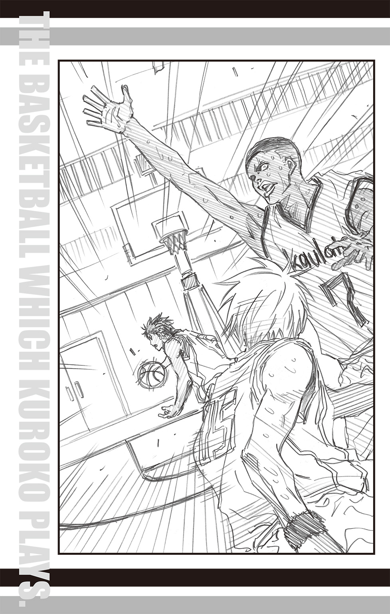
まるでコートを横切るサイクロンのようなチェストパス――。
そして、ボールが飛んだ先にいるのは、
「っっしゃぁぁ！」
黒子のパートナーである、青峰。
残り三秒。
青峰はボールをキャッチすると、ゴールへと走り、大きく跳び上がった。
合宿最終日。
前日同様リーグ戦を行い、夕方からはホテルのＢＢＱエリアを貸しきってのパーティーが開かれた。
連戦を称え合い、労うことを目的としたパーティーであったが、腹を空かせた中学生男子は日米の差を超えて、猛烈に肉に集中した。
先を争うように肉に群がる男子生徒たちに弾かれ、エリアの端へと追いやられた黒子は、どうにかゲットできた野菜を嚙みしめるように味わっていた。
そんな彼の前に、ひょいと肉の串刺が差し出される。
「ほれ、少しは肉も食えよ」
差し出したのは、自分の皿に大量の肉串を盛った青峰だった。隣にはやはり肉串を持ったティキの姿もある。
「ありがとうございます」
黒子は礼を述べて、肉串を受け取る。
黒子の隣に青峰、そしてティキが座り、三人は肉串にかぶりついた。
「うま～！ やっぱハワイは肉だな」
「はい。とてもおいしいです」
「ああ。それに、すごく気持ちがいいサ」
黒子と青峰がティキを見ると、彼は晴れやかな笑顔を浮かべていた。
「僕のスカウトの話を聞いたのに、テツヤもダイキも思いっきりやってくれただろ。ありがとう」
「ティキ......」
「ティキくん......」
青峰と黒子はほっと表情を緩めた。
「最後にあんなスリリングな試合ができて、よかったサ」
「最後......」
「帝光に勝つことが絶対条件だったから」
ティキはそう言うと、ばくりと肉にかぶりつく。まるでこの話はもう終わり、とでもいうように。
胸中にはまだ複雑な思いが渦巻いているのだろう。その思いに触れてほしくないという意思が感じられた。
大切なものとの別れは、たとえ痛みであっても、その人だけのものである。
ティキは肉を飲みこむと、話題を変えるように「そういえば」と話しだした。
「初日の試合の最後のパス。すごかったサ～。テツヤが言ってた『高さだけではないバスケ』って、一番はあれだったんだろ？ でも、その後の試合じゃ全然見せてくれなくて、残念だったサ」
口を尖らせるティキに、黒子はぽりぽりと頰をかいた。
「すみません。実はあれ、ぶっつけ本番だったんです」
「はぁ!?」
ティキが大きく口を開き、呆気にとられる様子に青峰も苦笑いする。
「テツがあのパスを思いついたのが、最初の試合の前日でさ。大急ぎで練習したから、本番でうまくいくかはちょっとした賭けだったんだよ」
「あのあとも、何度か練習したのですが、ボールが思うように飛んでくれなくて......」
困りました、と眉を下げる黒子を、ティキは呆然と見つめていたが、やがて声をあげて笑いだした。
「あははははっ！ ほんと、おもしろいな、テツヤは！」
「そうでしょうか？」
ひどく真面目な顔で不思議そうに首を傾げる黒子に、ティキの笑い声はますます大きくなる。
黒子はやはりきょとんとしていたが、やがて「飲み物をもらってきます」とドリンクコーナーのほうへ去っていった。
「ほんと、おもしろいサ、テツヤは。冗談か本気か、区別がつかない」
目尻に浮かんだ涙を拭いながらティキが言うと、青峰も笑顔で頷いた。
「テツはいつだって本気だよ。......だから信じられる」
「ダイキ？」
声のトーンが変わったのに気づき、ティキが青峰の顔を覗きこむ。
青峰は遠くを見つめるような視線のまま口を開いた。
「オレさ、一時期、バスケに熱中できないときがあったんだ。試合相手がどいつもこいつも生ぬるくて、全然相手にならなくて......ちょっと本気出すと、大差で勝っちまう。そんなのもう試合じゃねぇし。だから、試合で本気出すの、やめようって思ったんだよ。疲れる思いしておもしろくねぇんじゃ、意味ねぇなって。でもさ、テツが言ったんだよ。どんなに力の差があっても、自分が相手なら力を抜いた試合をしてもらいたくないって。それに、オレと同等に戦えるやつなんて、すぐに現れるってさ」
青峰は言葉を切ると、ティキに顔を向けた。少し照れたようにはにかんでいた。
「......正直、ホントかよって思ったんだよな。だって、戦う相手みんな歯ごたえないんだぜ？ そんな強いやつがすぐに現れるなんて思えなかった。でも、テツが言うなら信じてみてもいいかなって思ったんだ。あいつ、噓つかねーから。そんで前みたく真面目に練習してたら......ティキたちとやり合えた」
「僕たちとの試合は、楽しめたのかい？」
「ああ、すっげー楽しかった！ わくわくして、ずっと試合してたいぐらいだ」
「僕も同じこと思ってたサ」
青峰とティキは顔を見合わせ、笑い合った。
そこへドリンクを手にした黒子が戻ってきた。
「青峰くん、向こうの鉄板で新たに肉が焼かれてましたよ」
「マジか！」
いつの間にか皿に山盛りだった肉串を食べ終えていた青峰は、慌てて立ち上がると黒子の指さした鉄板へと走り去った。
「あれだけ食べたのに、まだ入るんですね......」
「そりゃ、肉だからね」
答えになっているような、なっていないような返事がティキからなされ、黒子は苦笑するしかない。
黒子がティキの隣に座ると、ふいにティキは真面目な顔で声のトーンを落とした。
「ダイキのことだけど」
「はい？」
何事だろうかと、黒子は続くティキの言葉を待った。
「あいつの敵はこの先、いなくなるかもしれない」
「え......？」
「戦ったからよくわかるサ。あいつはまだまだポテンシャルを秘めてる。これからもっと強くなる。でも、だからこそあいつが感じてた孤独や不満も深まっていくはずだ」
「............」
黒子は眉をひそめ、視線を落とした。
たしかに加速して上達していく青峰の強さは、黒子も感じていたところだ。
だけどな、とティキは続ける。
「僕はそんなに心配してないサ。ダイキには、テツヤがついているから」
「え？ ボク、ですか......？」
きょとんと聞き返す黒子に、ティキは頷いた。
「そうサ。テツヤなら、敵がいないってふてくされるダイキのために、もっと強いやつを探して連れてくる」
――テツヤは約束を守る人間だから。
ティキの蒼い瞳がまるで黒子の未来を見通すかのように柔らかく細められる。
「ボクが強い人を......？ でも、同じチームのボクが見つけたら、敵にならないですよ？」
戸惑う黒子に、ティキは微笑むだけだった。
そこへ青峰が慌てた様子で駆け戻ってきた。
「やばいぞ！ あっちの肉、神戸牛だ！ 早い者勝ちだってよ！」
「それはやばいサ！」
ティキがさっと立ち上がり、鉄板へと駆けていく。チーム一の足を活かし、あっという間に鉄板に近づくと、群がる人だかりへと紛れこんだ。
「テツものんびりしてんなっ！ ほら、行くぞ！」
「今から行っても、残ってないのでは......」
「何言ってんだよ！ 戦う前から諦めるのか？」
青峰が挑発するようにニッと口の端を上げる。
その笑顔に、黒子もくすりと笑った。
「まさか、諦めませんよ」
「そうこなくっちゃな！ 全中への景気づけに、まずは一勝いっとこうぜ！」
青峰が握った拳を突き出す。
これまで何度となく、黒子を信頼する証として突き出された拳へ――
黒子の拳がこつんと合わさった。
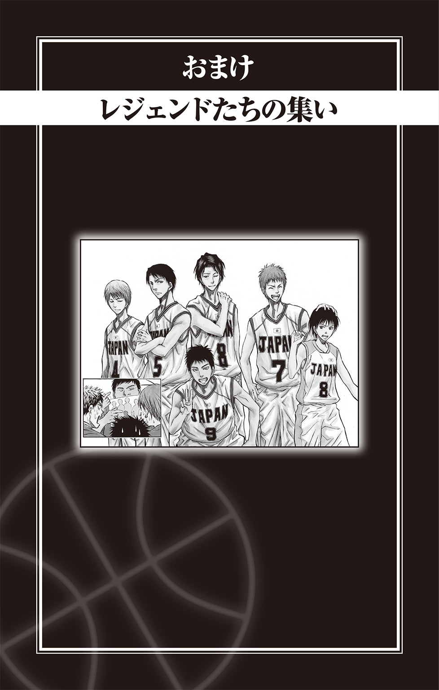
正月休み最終日。待ち合わせ時間に遅れてやってきた相田景虎を待っていたふたりの反応は対照的だった。
「遅刻だぞ、景虎！ もしもおまえがウチの生徒なら、罰として校庭二十周を課しているところだ」
陽泉高校のバスケ部監督荒木雅子はキッと景虎を睨みつけ、
「そう怒るな、雅子。トラの遅刻はいつものことだろ」
秀徳高校のバスケ部監督中谷仁亮は慣れと諦めの混じった息を吐いた。
かつて全日本のユニフォームを着ていた彼らは、昨年末のウインターカップで思わぬ再会を果たした。そこで久しぶりに集まり、旧交を温めることにしたのだ。
「まったく......いつまでたっても遅刻するというのは社会人としてどうかと思うぞ」
「わりぃわりぃ。今度から気をつけるって」
腕組みし、睨みあげる荒木に景虎はさして反省した様子もなく、「ほら、あんまし怒ると、美人が台無しだぞ」と、荒木の頭をぐしゃぐしゃと撫でた。
途端、荒木の頰がボッと染まる。
わかりやすいなぁ、と中谷は思うのだが、荒木の変化にまったく気づかない景虎は妹を可愛がるのと同じ雰囲気で、ぐしゃぐしゃと撫で続けている。
「いやー、相変わらずちょうど撫でやすい高さに頭があるなー」
「ばばばば、ばか者っ！ あの頃と一緒にするな！」
雅子の反応もあの頃と一緒なんだがなぁと、昔もいまも見守る側の中谷は思う。
だが、変わったこともある。そのひとつが、景虎の親バカぶりだ。
「見ろよ、これ！ 正月に撮ったの！ リコたんの着物姿!! 超ラブリー！」
予約した店に向かう途中で早くも『リコたんトーク』ははじまり、携帯で撮った写真を中谷と荒木に見せてはデレっとだらしなく顔をとろかせる。
「ああ、よく似合ってるな」
と言いながら、中谷は横目でちらりと荒木を見遣る。携帯の画面には着物姿の相田リコとその母親が写っていた。
「娘さんは奥さんに似てよかったな」
荒木は携帯の画像を見つめて微笑んでいた。荒木が滅多に見せることのない柔らかな笑みに、中谷も自然と笑みを浮かべる。
その後も景虎は次々と秘蔵の『リコたんコレクション』を披露していたが、ふと思い出したように荒木を見つめた。
「そういや、マサは結婚しないのか？」
「いまのところ予定はない。まず、出会いもないしな」
荒木が答えると、景虎は「出会いねぇ......」と考えるように眉間に皺を寄せた。
「じゃあ、手っ取り早くゲンゲンはどうだ？」
「却下だ。おまえ、私とヤツの因縁をいろいろ知ってるだろう!?」
「ああ、そっか。じゃあ、カッちゃんは？」
カッちゃんこと、桐皇学園高校バスケ部監督原澤克徳の名前に、荒木はゲテモノを食べたのに、旨いと言わなくてはいけないような複雑な顔をする。
「どうした？ カッちゃんはダメなのか？」
沈黙する荒木を景虎はきょとんと見つめる。代わりに口を開いたのは中谷だった。
「原澤は、あの癖がある限り結婚は難しいだろうな」
「げっ、カッちゃんのアレ、まだ治ってないのかよ!?」
景虎が顔を顰めたところで、一同は店についた。嫌な予感にとらわれながらも、景虎は居酒屋の戸をガラリと開ける。
「はははははは、私の酒が飲めないなんて言いませんよねぇ？ はははははははは！」
「や、やめっ！ 無理っむっブボボボボボボボッッ!!」
嫌な予感ほどよく当たる。店奥の座敷では、真顔の原澤が海常高校バスケ部監督武内源太を羽交い締めにしてワインをボトルごと飲ませている真っ最中だった。そして彼らと並んで座っているというのに、まるで別世界のような空気を醸し出し、静かに酒を楽しんでいるのは洛山高校バスケ部監督の白金永治だ。
「うわっちゃー......。カッちゃん、出来あがっちまってる......」
景虎はげんなりとし、すうっと戸を閉めた。
「あっ、てめぇ、景虎！ 助けろ！」
店内から武内のＳＯＳが聞こえたが、聞かなかったことにし、景虎は携帯を取り出すとメールをうつ。相手は白金だ。
『カッちゃんが寝るまで、時間潰してくるわ』
『わかった。こちらは昔と同じように適度に飲むからご心配なく』
すでに心配だらけの状況だが、白金がいるなら大丈夫だろうと景虎は結論づける。
「ほんと、カッちゃんもアレさえなけりゃなぁ」
「いまに始まったことじゃない」
三人はやれやれと肩を落とし、武内の悲鳴と原澤の高笑いの聞こえる店をあとにしたのだった。
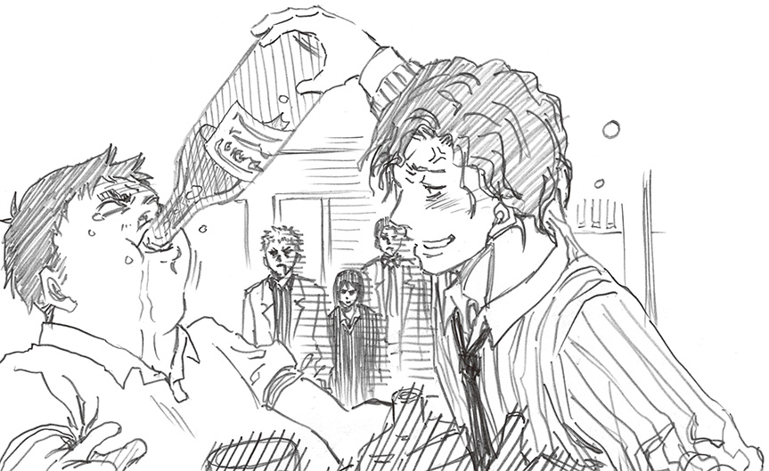
POSTSCRIPT
あとがき
ハワイっていいですよね。
近年ではリゾート地としてややメジャーになり過ぎた感もあるかもしれませんが、つまりそれだけいい所だからメジャーになったわけで。
行ったことないから知んねーけど。
青い空、美しい海、白い砂浜、日差しは強いけれど決して暑苦しくなくむしろ爽やかで、時に美しく時にダイナミックな大自然は本当に感動的だと思います。
行ったことないから知んねーけど。
調べもせずイメージで言ってるだけだから知ってる人からしたらプークスクスもんかもしらんけど。
そして小説版第６弾、ついに帝光はハワイ遠征に...行っちゃったよ！
こいつら行っちゃったよ！ 中坊のくせに...！ オレ行ったことないのに...！
作者は外にもろくすっぽ出ないでヨボヨボの不健康全開なのにキャラ達は常夏のハワイでバスケしてイケイケの青春全開だよ！
あれほど言ったのに調子乗って第６弾までやるからこんな悲劇が起こるんだよ！ 文才乏しいから毎回あとがきもキツイんだよ！
平林さん、本当にすげぇよ！ ありがとうございます！
佐藤、差し入れにいつも大量の栄養ドリンクくれるけどそんなにスタミナばっか欲しくないよ！ ありがとうございます！
この本を買ってくれた読者の皆様！ 毎度本当にありがとうございます！
藤巻忠俊
POSTSCRIPT
あとがき
Replace シリーズもとうとう六冊目。最終巻です。
今回は、最終回のその後のお話だけでなく、当初から「黒子のバスケ（－バスケ）」と位置付けられていたこのシリーズでもついにバスケシーンが解禁され、最後の最後で「黒子のバスケ」になれた気がします。
さて、そんな最後の巻もたくさんの方にお世話になりました。
ギリギリまで原稿を待ってくださった JUMP j BOOKS 担当編集の佐藤様、編集部の皆様。ギリギリのスケジュールで仕上げてくださった校正様、印刷所の皆様。ギリギリな状況にも笑顔だったジャンプ編集部前担当の門司様、新担当の井坂様。本当にありがとうございました！
そして、藤巻先生。いろいろとギリギリでお忙しい中、今回も素敵なイラストをありがとうございます。
こんなにも長くステキな作品に関わることができ、しあわせでした！
最後に、読者の皆様。
ここまで続けてこられましたのも、皆様の応援のおかげです。
本当にありがとうございました！
このシリーズは最後となりますが、大変嬉しいことにジャンプ＋にてコミカライズが連載されています（２０１５年８月現在）。藤巻先生お墨付きの高橋先生のセンスが光るコミカライズとなっていて、おすすめです！ ぜひご覧くださいませ。
名残り惜しく、締めの言葉が思いつかないのですが、やはりここはいつも通りに。
それでは皆様、またどこかで。
八月某日
平林佐和子
■初出
黒子のバスケ−Replace− キセキの遠征 書き下ろし
著者紹介
藤巻忠俊 FUJIMAKI TADATOSHI
第44回ジャンプ十二傑新人漫画賞にて『黒子のバスケ』で十二傑賞受賞。
２００９年週刊少年ジャンプ第２号より同作の連載をスタートし好評を博す。
平林佐和子 HIRABAYASHI SAWAKO
アニメの脚本もてがける女性小説家。
著書に『黒子のバスケ-Replace-』シリーズ、『SKET DANCE extra dance』シリーズなど。
ジャンプジェイブックスDIGITAL
黒子のバスケ―Replace― キセキの遠征
著者 藤巻忠俊／平林佐和子
© 2015 T.Fujimaki／S.Hirabayashi
２０１５年10月31日発行
この電子書籍は、ジャンプジェイブックス「黒子のバスケ―Replace― キセキの遠征」
２０１５年９月９日発行の第１刷を底本としています。
装丁 勝亦一己
編集協力 佐藤裕介［STICK-OUT］
編集人 浅田貴典
発行者 鈴木晴彦
発行所 株式会社 集英社
〒１０１－８０５０
東京都千代田区一ツ橋２丁目５番10号
０３－３２３０－６０８０（読者係）
制作所 株式会社ＩＣＥ
本作品の全部また一部を無断で複製、転載、改竄、インターネット上に掲載すること、および有償無償に関わらず、本データを第三者に譲渡することを禁じます。なお個人利用の目的であっても、コピーガードを解除しての複製は、法律で禁じられています。